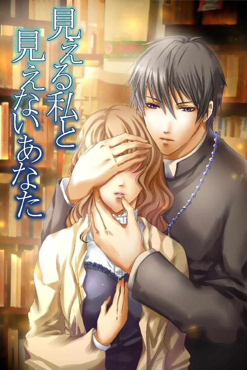

| 見える私と見えないあなた (30MIN LOVERS) | |
| 川島千夜 | |

★Prologue★
「おばーちゃーん。おばーちゃーん」
幼女は目を手で覆うようにして泣きながら、縁側に座る祖母にしがみついた。
紫色の着物の上品そうな老婆は穏やかな微笑を浮かべ、膝に顔を埋めて泣きじゃくる孫を撫でた。
「おやおや、どうしたんだい？ また、怖いものでも見たのかい？」
「うん......。井戸のところにね、ビチャビチャの、白い着物の女の人が立っててね、ミコトのことをじーって............睨むの」
「ああ......。アレはね、ああいうものなんだよ。可哀想な存在なんだよ」
「でも......怖いもん。ミコトが井戸のそばを通るたびに、じーって睨むんだもん。廊下の突き当たりの男の子だって、話しかけてもいつも怖い顔をして睨むし、天井からたまに首だけ出してくる知らないおばーさんも、ミコトの髪に噛み付いたりするんだよ............みんな......怖いんだもん」
「ここも、古い家だからねぇ。色々と寄って来ちゃうんだねぇ......」
「うぅ............ママにおばーちゃんのおうちは怖いって言っても、信用してくれないんだもん」
世界を見ることを拒むかのように、自分にしがみついて離れない孫を眺め、老婆は小さなため息をついた。
「ミコトはよく見える子だからねぇ。もしかしたら、おばーちゃんや、おばーちゃんのお母さんよりも見えるのかもしれないねぇ......」
「見える？ ミコトの目がいいってこと？」
「普通の人より、もっともっと深い世界が見える......ってことだよ」
「ふーん......？」
「............本当は貴重な目なんだけど、こんなに早くから見えるのは、悪いことかもしれないね。なにより......ミコトは怖がりだしねぇ......」
「おばーちゃん？」
独り言のように呟く祖母に、幼女は怪訝そうな目を向けた。
白くなめらかな、真珠のような肌を涙で赤く腫らした幼女は、まるで生きた人形のようだった。
老婆はその人形のような孫の髪を撫で、優しい微笑を浮かべた。
「じゃあ、ミコトがもう怖いものが見えなくなるおまじない、してあげようかねぇ？」
「ホント!? そんなことができるの!?」
「おばーちゃんにならできるよ。でもね、おばーちゃんはずっとミコトの側に居られるわけじゃないから、いつかは見えるようになってしまうだろうからね。その時までにはミコトの怖がりさん、治しておくんだよ？」
「うん!! 大丈夫。だってミコトが大人になったら、強くて優しい王子様が守ってくれるんだもん」
「おやおや、この間の、神父様のお話しが気に入ったのかい？ なんて言ったっけねぇ......」
「えくそしすと!!」
「そうそう、エクソシストね。......あれは王子様じゃなくて、神父様だよ？」
「だって、青いお目めの人はみんな、王子様なんでしょ？」
「あらあら、ミコトはシンデレラとごっちゃにしてるみたいだねぇ」
老婆は苦笑を浮かべながらも、孫の瞼の上に痩せた指をそっとのせた。
「さ、おばーちゃんがおまじないをしてあげるから、少しだけ静かにね......」
★First mass★
淡い、オレンジ色の光で包まれた聖堂の中で、春日屋ミコトは、中央の通路をゆっくりと歩くシスターや、神父達を眺めていた。
天井まで届くほどの大きなパイプオルガン。日常では見る事もない黒い法衣を着た人々。豪華で幻想的な装飾。
ミッション系の大学に入ったミコトが参加する、初めてのミサ。
無宗教、無伝統、無イベントの中で育っていたミコトは、まるで自分もこの荘厳な儀式の一部になったような気がして、感動と緊張の入り混じったため息をついた。
「お、やっと若い神父さんが入ってきた。やっぱ渋い神父もいいけどさぁ、若い方がいいよね～」
ミコトの隣に座っていた子供の頃からの親友、山根さららが、小声だが場違いに気の抜けた言葉を発した。
「さららちゃん、静かに......」
「ミコトったら相変わらず真面目～。あ、あの神父さんかっこいい～」
白い艶やかな肌を隠すような栗色の長い髪を、ふんわりと縛っているミコト。
それとは逆に、グレーのパンツスーツによく似合うショートカットのさららは、ミッション系の大学生とは思えないほどサバサバしたボーイッシュな女子だ。
だからこそ、おっとりとした、大人しい性格のミコトと気が合うのだろう。
「まったくもう......」
小さくため息を漏らしつつも、ミコトは通路を歩く神父達へと視線を戻した。
新入生を迎えるミサのために続々と聖堂に入ってくる神父たちは、年齢や、位が高い順に並んでいるらしく、列も終わりになった今では、確かにさららが言うとおり、若い神父ばかりが並んでいた。
（若いと言っても私より年上だろうし、それに沢山勉強をして、修行なんかもして、きっとすごい人達なんでしょうね......）
そんな尊敬の念を抱きつつ、ミコトはぼんやりと神父達の入場列を眺めていた。
――最後の一人の神父が入ってくる。
恐らく、神父になったばかりなのであろう。誰よりも若く、だが誰よりも白く厳しい顔つきのその神父は、黒い法衣を揺らし、ゆっくりと通路側に座るミコトの横に近づいていく。
「あいつさ～、人相悪いね～」
「さららちゃんっ............」
失礼なことを言ったさららを嗜めたミコトの小声が聞こえたのか、その、最後尾の若い神父が、ミコトの方へと目を向けた。
黒く短く切られた髪の、驚くほど長身の彼は、鼻筋の通った日本人離れした美しい顔の持ち主だった。
険しく寄せた眉の下にある、悲しみを湛えたかのようなブルー......いや、桔梗のような、紫がかった藍の瞳が、彼が純粋な日本人ではないことを証明している。
「......桔梗色の瞳............」
ミコトは、彼の不思議な桔梗色の瞳に見入った。
美しくも悲しい、まるで記憶の奥底をかき乱すかのような、深い、深い藍の瞳......。
「......ミコト？」
呆然としているミコトにさららが声をかけるも、ミコトは彼の瞳から目をそらすことが出来ない。
「........................」
長い時間のように感じたが、きっと、一瞬の出来事だったのだろう。
桔梗色の瞳の神父はすぐに目を逸らすと、前を歩く神父について、音もなくミコトの横を通り過ぎていった。
「ミコトってば......？」
「......あ......ごめん......」
さららの声に我に返ったミコトは軽い眩暈を感じ、こめかみを抑えてうつむいた。
「ミコト、大丈夫？」
「うん、ちょっと眩暈がしただけ......」
「座ったまま貧血？ 相変わらず身体弱いね～」
「ごめん......もう大丈夫だから......」
さららを安心させるように微笑を浮かべると、ミコトは深呼吸をして、壇上に立つシスターや神父達へと目を向けた。
新入生へ初めての挨拶をする司教が、ずらりと並んだ神父、一人ひとりの名前を読み上げていく。
「――司祭『鬼神・ヨハネ・健介』――」
司教が発した鬼神という名に、暇そうにしていた新入生たちが微かだがザワリと反応する。
「すっげ～。神父でその苗字とか、説得力ないよねー。あ、でも鬼神司祭、結構渋いオジ様じゃん～」
「さららちゃんってばっ！」
ミコトは口の悪いさららを叱りつつ、壇上で頭を下げる鬼神司祭を見た。
顔を上げた鬼神司祭は、遠目には、白髪交じりの、優しげな雰囲気を持つ紳士に見える。
（私のお父さんより少し年上......くらいかなぁ。名前の割にはすごく優しそうだけど......）
ミコトがそんなことを考えている内に神父の紹介は進んでいき、とうとう一番端に立つ、桔梗色の瞳の神父に順番が回った。
彼は遠目からでも分かるほど背が高く、揃いの黒い法衣を着ているとはいえ、神父達の中でも一際目立っていた。
「助祭......『鬼神・マタイ・アギト』」
彼の名を聞いたミコトが首を傾げた。
「............あれ？ 同じ苗字......」
「だねぇ。年齢的にもちょうどいいし、さっきのオジ様神父と親子だったりして」
「まさか......。神父様はご結婚できない決まりだよ......？」
ミコトは不思議に思いつつも、壇上の彼を眺めていた。
アギトと呼ばれた神父は、入ってきたときと変わらぬ、険しくも寂しげな表情で足元に目線を落とし続けている。
ミコトはなぜだかそんなアギトが気になって仕方なく、目を細めて彼の様子を見続けていた。
すると......ふと、ミコトはあることに気がついたのだ。
「シスター様にしては......髪も隠さないで......？」
彼のすぐ後ろに、いつの間にか女性が立っている。
青白い顔をしたその女性は、アギトのように目を伏せ、微動だにしていない。
ミコトの背筋になぜだがゾクリ......と冷たいものが走る。
「ミコト。さっきからどうしたのよ。少しぼーっとし過ぎじゃん？」
アギトの後ろに立つ女性を見ていたミコトに、さららが心配そうに声をかけた。
「あ......あのさ......。あの長身の神父様の後ろに立っている女性って、シスター様じゃないのかな？」
「シスター？」
「うん。なんか、きれいな人だけど髪の毛も隠さないで立っているから、誰だろうって思って............」
「あの一番右の神父の後ろでしょ？ どこにそんな人がいるってのよ？」
「え......だから、神父様の右肩のすぐ上から顔を出している、女の人............」
「......言っちゃ悪いけど、あんた疲れてるんじゃない？ あの隅っこの神父の後ろ、壁だよ？ 誰かが立てるスペースなんてあるわけないじゃん」
「............あ......っ！」
さららにそう言われ、ミコトはハッとして口元を押さえた。
アギトの肩上から見える女性の顔。
それは彼の肩の上に「直接」乗っていたのだ。
つまり女性の首から下――体は無い......ということになる。
ミコトの身体が震え出した。
よくよく見れば、その女性の顔は時折透けて、すぐ後ろの壁が見え隠れしている。
真っ青になって女性の顔を凝視していたミコト。そんなミコトの視線に気がついたのか、その首だけの女性はゆっくりと目を開き、アギトと同じ色の、桔梗色の瞳をミコトへと向けた。
悲しそうな瞳から溢れるように血が流れ、白い頬を伝っていく............。
ミコトはその光景にガタガタと身体を震わせ、思わず、大きく口をあけてしまった。
「き......き......きゃあああぁぁぁぁっ!!」
「わああぁぁぁっ!? な、なに～? どうしたのミコトっ!?」
ミコトの叫び声に驚いて、さららが腰を浮かす。
「なに？ どうしたの？」
「悲鳴っ!?」
「虫でも出たっ!?」
騒然となる学生達。
静かだった聖堂がざわめき、ちょっとした混乱が生まれる。
「春日屋ミコトさんっ。どうしたのですか!?」
世話役のシスターが、叫び声を上げたミコトの方へ駆けつけてきた。
そのせいで、聖堂内の視線が一気に彼女に集中していく。
「あ、あわ......す......すみませんっ!!」
「ちょっと、ミコトっ!?」
ミコトは、騒ぎを起こしてしまった罪悪感と、注目を浴びてしまったことへの羞恥心でパニックになり、顔を真っ赤にしたまま立ち上がると、一目散に聖堂から飛び出した。
「ミコト～!?」
遠く後ろからさららの声が聞こえたような気がしたが、ミコトはそれよりも、壇上の片隅に立つ長身の神父が、冷たく蔑んだ目で自分を見ていたことを気にしつつ、外へと逃げ出したのだった......。
★Three years after★
「合計でちょうど千円です――ありがとうございましたー」
「いつもありがとうね、春日屋さん」
「いえ......」
「源三店長にもよろしくねー」
「はいー............」
ミコトはレジを去っていく客に頭を下げ、一息ついた。
ミコトがこの古本屋――みどりや書店でバイトをすることになって三年が経つが、人付き合いの苦手な彼女は、いまだに接客となると緊張してしまう。
「でも......本に囲まれているし、滅多にお客さんは来ないし......。私にとっては最適の仕事先なのよね......」
ミコトは、客が開けた古い木製のドアから差し込む夏の日差しを見て、ぼんやりと独り言を呟いた。
大学に入って、気がつけば、卒業を控えた四年生の夏。
ミコトは特に浮ついた話もなく、ただただ真面目に単位を取り、真面目にミサに参加し、たまに......真面目に女友達と温泉旅行へ行く、そんな健全極まりない大学生活を送っていたのだ。
「平和で......静かで......望んでいた生活......のはずなんだけど......」
ミコトはどこかうら寂しい思いを感じ、閉まってゆくドアと同じタイミングで、暗いため息をついた。
差し込んでいた日差しがさえぎられ、店内に薄暗さが戻っていく。
「どうしたんだい。うら若い乙女がこんな昼真っからため息なんかついちゃって」
「店長............」
ミコトのため息を聞きつけた――という訳でもないが、自宅兼事務所と繋がっている、二階の階段から下りてきた店長の蔵前源三は、人の良さそうな赤ら顔をクシャリと寄せて彼女に微笑みかけた。
「恋でもしたのかい？」
「ま、まさかっ!!」
ミコトは少しだけ頬を赤くして、首を横に振った。
「なんだぁ。ミコっちゃんもここでアルバイトして長いのに、ちっとも男の影が見えないね。まぁ、ロクデモない男がまとわりつくようなら、この源三店長が容赦しないけどね。はっはっはっは」
「私は......あまり男の人と話すのが得意じゃないので......。もういっその事、このままおばあちゃんになるのも悪くないかな......って。たまにそう思うんです」
「何言ってんだい。そんなセリフは六十年生きてから言うもんだよ」
「............店長......六十歳だったんですか......!? もっと若いかと思ってました......」
「俺の歳はどうでもいいんだよ。まったく......ミコっちゃんは真面目で可愛くって、こんなにスタイルもいいのに、そんな奥手だから恋人ができないんだよ」
「あの......褒められているのか、怒られているのか良くわからないのですが......」
「ああ、怒るつもりも褒めるつもりも――――いや、褒めるつもりはあったんだけどね。元々は、留守番を頼みたくて下りてきたんだよ」
（そうならそうと早く言ってくれればいいのに......）
そう思いながらも、ミコトは店長が留守にしてしまうことを残念に思った。
人見知りの激しいミコトだったが、誰からも好かれている、この優しくて明るい店長と話すのは結構楽しみだったのだ。
「それと......」
「他にもなにかあるんですか？」
出かける予定であろうはずの店長は、ミコトの隣に立ったまま、まだ話を続けようとしている。
「いや、ミコっちゃんはもう大学四年生だろ？ でも、学校が終わると大抵、ここで店番してくれているけど、就職活動は大丈夫なのかと思ってね」
「う............そ、それは............」
ミコトはうつむいて、もじもじとエプロンを指先でいじった。
もう二十歳も過ぎた彼女だったが、いまだに十代に見間違われるのも、幼い見た目のせいだけではなく、こうした可愛らしい動作のせいもあるだろう。
ミコトはそんな幼い動作を止めて、店長の顔を見上げた。
「実は......私、面接が苦手で......つい......就職活動を先延ばしにしてて......」
「あっはっはっはっはっは。上がり症のミコっちゃんらしいねー」
店長は大きな声で笑うと、彼女の背中をパシパシと叩いた。
「ここに初めて面接しに来たときも、カミカミだったもんねー。あまりにカミ過ぎて、日本人じゃないのかと思ったよ」
「うぅ......すみませんでした......」
「いやいや、女の子はそれくらいのほうが初々しくて、いいもんだよ」
そう言いながらも、店長は苦笑している。
「でも、その様子じゃ、大企業に就職するのは難しいかもしれないね」
「......はい......」
しょんぼりとするミコトを見下ろし、店長はふっと肩の力を抜いた。
「ま、これはミコっちゃんが良ければ......だけど。このままここに就職する事も考えてみてはどうかい？」
「え............みどりや書店に......ですか？」
「大した給料は出せないけれども、気軽さだけなら折り紙つきだからね」
「店長......いいんですかっ!?」
「ミコっちゃんみたいに、真面目で本が好きな女の子なら大歓迎だよ。できたら、これで幽霊でも見つけてくれたら最高なんだけどね」
「やだ、店長。何言っているんですか。幽霊なんているわけないじゃないですか......」
「どうかな？ この店も大正時代からやっているからね......。こうした暗がりに目をこらすと――」
「や、やめてくださいよっ!!」
ミコトはこれから一人になることを考え、怖い顔をする店長を慌てて止めた。
「ミコっちゃんは本当に怖がりだねぇ」
「苦手なんです。幽霊とかお化けとか......」
ゾクリと身体を震わすミコトを見て、店長はふざけたように笑った。
「はっはっはっは。ま、出る出ないは置いといて、就職については考えておいてくれよ」
店長は言いたいことを伝えると、ヒラヒラと手を振りながら店から出て行った。
ドアから入ってくる夏の日差しが一瞬店を明るく照らし、そして――再び光を遮断していく。
店長の後ろ姿を見送ったミコトは、薄暗い書店の中で一人になり、ぼんやりと周囲を見回した。
少し埃を被った古い書物たち。
あまり開くことのない重厚なドア。
大正時代から続く、古い、古い店の中で、ミコトは考えた。
「――いいのかな。このままみどりや書店に就職できるのは嬉しいけど。でも......そしたらますます私は人と会う機会が減って......恋もせずにひっそりと年老いていくことに......。本当にいいのかな......私......」
奥手な自分の人生を諦めていたつもりではあったが、いざとなるとミコトの脳裏に色々な不安と後悔が生まれていく。
「いっそ......恋もせずに終わるなら、シスターとして生きる......なんて。......そんなこと神様に失礼だしっ!!」
お客がいないことをいいことに、ミコトは一人頭を抱えて自問自答していた。
――すると。
（......あれ？ 夕立かな......？）
急に外が暗くなり、元から薄暗い店内は、電気がなければ何も見えなくなる程になってしまった。
（店長、濡れないといいのだけど......）
ミコトはいそいそと立ち上がると、店内のランプを灯していく。
アンティーク趣味な店長が作った店内は、大正時代からの造りそのままで。店内の明かりも、仄かなオレンジの光を灯すだけのランプが数個置かれているだけである。
それゆえに、どこかファンタジックな雰囲気を感じさせるこの古本屋が一目で気に入り、ミコトは勇気を振り絞ってバイトの面接にきたのだが............。
「寒気がする......」
今日に限っては、この薄暗い店内に一人ぼっちというこの状況がどことなく怖い。
ランプの光で長く伸びた、本の黒い影が不気味に見える............。「店長......いつ帰ってくるのかな......」
ミコトは不安げに花傘のランプを眺めていた。
――とその時、小さな鈴の音と共に、入り口のドアが開いた。
「あ、店長お帰りな――」
「........................」
勢い良く立ち上がって店長を迎えたつもりだったミコトは、腰を浮かした状態で固まってしまった
「............店長でなくて申し訳ない............」
ドアを開けて入ってきたのは、黒い法衣を上から下まで着こなした、教会の神父だったのだ。
「......し、し、失礼しましたっ!! いらっしゃいませっ!!」
慌てて挨拶をするミコト。
彼女は下げた頭を上げてその神父を見た瞬間、小さく「あ......」と叫んでしまった。
「............なにか？」
怪訝そうな目でミコトを見つめるその神父の目は、深い青紫――桔梗色の瞳だったのだ。
（あの時の............確か鬼神......アギト神父......）
ミコトの脳裏に数年前の、初めてのミサの記憶が甦る。
あの時から比べて少し髪が伸びていたが、彼は相変わらず白く美しく、そして......どこか厳しく悲しそうな顔をしていた。
だが、もう彼の肩には首だけの女性はの乗っていない
ミコトは、ミサの時の恐怖と恥ずかしさを思い出し、ぎゅっと自分の手を強く握りしめた。
「あの............？」
「はっ!? す、す、すみませんっ!! えっと............」
カウンターの前に立つ彼の法衣には、小さな水滴が光っている。
そのことに気がついたミコトは、言いにくそうに彼を見上げた。
「あの......水が............」
「ああ......ちょうど夕立が降り始めてきたから......」
アギトは無造作に肩の水滴を払おうとした。
だが、ミコトは慌ててそれを止める。
「だめっ、本に水がついちゃうっ!!」
ミコトの言葉に思わず手を止めるアギト。
「............すまない......」
どこかムッとしたようにも見える彼の表情に、逆にミコトが動揺してしまう。
彼女は急いでハンカチを取り出すと、アギトに差し出した。
「し、し、失礼しました......もし、良ければこれを使ってください......」
下を向いて、消え入るような声で言ったミコトの手から、アギトはためらいがちにハンカチを受け取った。
「あ............」
ハンカチを受け取る瞬間、アギトの冷たい指がミコトの指に触れる。
その感触に、免疫のないミコトの心臓は一気に鼓動を早めてしまう。
（やだ......男の人と二人とか......気まずいな............）
ミコトは水滴を拭ったハンカチを返してもらいながら、オドオドと目線を泳がせた。
戻ってきたハンカチから、濃い御香――乳香の香りがする。
アギトは所存無げな様子のミコトを見下ろすと、静かに口を開いた。
「............店長は？」
低く、静かだが、澄んだ優しい声が彼の口から流れる。
「え......あ......。店長は先ほど出かけてしまって......」
「困ったな......。司祭から頼まれた本を受け取りに来たのだが......」
「司......祭......？」
首を傾げるミコト。アギトはそんな彼女を、無表情に見返す。
「この街の教会の司祭だ。そこの、角の上り坂をまっすぐ上がっていくと、教会があるだろう。そこの司祭......神父のことだ」
「あ......ああっ！ すみませんっ。普段、学校の聖堂でことが済んでしまっているもので、あまり街の教会には詳しくなくて......。それに、ここの街へはバイトでしか来ませんし......」
「学校の......？ ああ、あのミッションスクールの生徒か......」
「はいっ。四年の春日屋ミコトですっ!!」
「..................」
「あ......すみません......つい......」
ミコトは思わず勢い込んで挨拶をしてしまったが、彼の冷たい目線を見て、余計なことをしたと気がつき、大いに狼狽してしまった。
どうしてだろうか、ミコトはアギトを前にすると、ただでさえ上がり症のなのに、余計緊張してしまう。
「ふぅ............」
アギトにため息をつかれたミコトは、さらに身を縮こませた。
「俺は鬼神アギト。鬼神司祭が勤める教会の助祭だ」
「おにっ!?」
一度聞いて知っているはずなのに、ミコトは彼の鬼という言葉につい反応してしまう。
「お・に・が・み。言いにくかったら下の名前で構わないから、神父に向かって『鬼』と言うのはやめてくれ......」
言い飽きたかのように、アギトはミコトに言い聞かせた。
恐らく職業柄、名前のことで嫌と言うほど突っ込まれていたのだろう。彼は不機嫌そうに口をギュッと結んだ。
窓の向こうからは、本降りになってしまった夕立の雨音がバシャバシャと聞こえてくる。
暗い店内で、鬼だか神だかわからない、真っ黒い服を着た青年と二人きり。
そんなシチュエーションに囲まれて、ミコトの記憶の底から、彼の右肩に乗っていた女性の生首の悲しげな表情が繰り返し甦ってくる............。
「......悪い、そんなに怖がらせるつもりじゃなかったんだが......きつく言い過ぎたか？」
「え......あ......いえ......」
ミコトのビクついた顔に困惑したアギトは、困ったように髪をかき上げると、引き取り用の棚へと目を向けた。
「ともかく、父が――っと、司祭が注文しておいた本が、もう届いているはずなんだ。悪いが、探してもらえないか？」
「は、はい!!」
ミコトはガクガクと頷くと、慌てて一時預かり用の棚を探した。
「えーっと......お......鬼神......さんの荷物は......」
ただでさえ薄気味の悪くなった暗い店内に、幽霊に取り憑かれているのかもしれない男性と二人っきりだなんて、ミコトは耐え切れなかった。
（早く......早く彼の荷物を......）
彼女が祈るような気持ちで必死に本棚を探っていると、棚の一番上に『鬼神健介』の名前を見つけることができた。
「あの、この『鬼神健介』さんというのが......」
「ああ......父の――司祭の名前だ」
アギトが頷くのを見て、ミコトはその荷物に向かって全力で手を伸ばした。
「んんんーっ!!」
女子の中でもとりわけ背の低いミコトでは、本棚の一番上には手が届かない。
だが、ギリギリ荷物の下に指が触れるため、彼女は梯子を探しに行くのを省略し、精一杯爪先立ちになって荷物を取りだそうとした。
「これだな？」
「あ............」
いつの間にか側に来ていたアギトが、ミコトのすぐ後ろから手を伸ばし、その荷物を手に取った。
一瞬、アギトに後ろから包み込まれたかのような錯覚に陥り、ミコトは顔を真っ赤にして彼から飛びのいた。
「す、す、すみませんっ!! お客様にお荷物を取らせてしまって!!」
ペコペコと頭を下げるミコトを、アギトは冷たく見下ろす。
「いや......俺が取ったほうが早かったから......」
言いながら、彼は取り出した本を確認した。
「世界の呪術......新約日本の神々......横浜食べ歩き......あいつ、今度の遠征で食べ歩く気だな......。それと、旧家一覧図鑑............んー............」
タイトルを確認していたアギトは、困ったように首を傾げた。
「あの......なにか間違えていましたか......？」
「いや、とっておいて欲しいと頼んだものは、合っているようなんだが......」
彼は手に持っていたリストと見比べて、言った。
「他にも、信徒用の聖書を、三冊ほど頼んでおいたはずだが............？」
「え......聖書？」
「ああ、新しく入ってきた信徒さんや、興味を持ってくれた人のために、いつも中古の聖書を用意しておくんだが......ここに入っていない」
「............すみませんっ!! きっと店長のことだから、別に置いて、まとめるのを忘れちゃっているのかも......。す、すぐ探しますからっ!!」
「いや、そんなに焦らなくてもいい――」
ミコトは彼の言葉を背中で聞きつつも、大慌てで、辞書など大型の本を置いてある本棚を探しだした。
「聖書......聖書............。あった!!」
棚の、上から二段目に、無造作に置かれている三冊の聖書を見つけ、ミコトは大喜びで手を伸ばした。
「あ、バランスが悪いし俺が取る――」
不安定な状態で詰まれた本に手を伸ばしたミコトを見て、アギトは慌てて彼女の側に駆け寄り――――。
「あ............っ」
時、既に遅し。
グラリと傾いた重さ一～二キロはありそうな本が、ミコトの上から降ってくる。
ドサっ......バサバサバサ............ゴン!!
酷い音と埃を立てて、本がミコトの頭を打ちつけては落ちていく。
「あうぅあぁぅ......」
床に本が落ちると同時に、ミコトも脳震盪を起こして床へと倒れていく。
「おい、大丈夫かっ!?」
ミコトは意識が真白くなっていく直前、アギトの力強い腕に抱かれ、間近に美しい顔が近づいてくるのが見えた気がした。
..............................。
............................................................。
........................アギトに抱かれ........................？
「わぁあっ!?」
我に返ったミコトは、ワケが分からないまま飛び起きた。
自分を腕に抱えていたアギトを突き飛ばし、ミコトは本がびっしりと詰まった本棚に背中を押し付けて、しゃがみこんだ。
「大丈夫か？」
飛びのいたミコトを、それでも心配して顔を覗き込むアギト。
彼の心配そうな面持ちを間近に見て、ミコトは後頭部がズキズキと痛むのを感じた。
「あのっ......その......私っ............」
「......一瞬気を失っていたようだが、どこか痛むところはないか？」
「こ、後頭部が......」
「結構強く打っていたからな......」
床に膝をつけ、アギトはミコトの後頭部にそっと手を伸ばした。
その動作にビクリと身体を震わせたミコトは、彼の手から逃げるべく身をよじる。
「大丈夫ですっ!!」
「......顔も真っ赤だぞ？ ......やはり病院に行ったほうが......なんなら俺が連れて行くが――」
「――――っ!?」
アギトはミコトの後頭部に白い手を回し、彼女の、栗色の髪の毛ごと優しく傷を撫でた。
「あ――あ――あ――」
男性に免疫のないミコトは、ただただ口をパクパクさせ、硬直しているだけである。
（どうしようっ！ こんな......か......髪触られちゃって......私......どうしようっ!!）
吸い込まれるような藍色の瞳が間近に迫り、ミコトは目のやり場に困ってしまう。
彼女はそこで仕方なく、アギトの背後、何もない壁に目を向けようとした。
――――が。
「え............」
ミコトはなぜか、真っ黒い、生気の抜け切ったマグロのような目と、目が合ってしまったのだ。
トロンとした目。
真っ白い顔。
そして白い服を着た人が、いつの間にかアギトのすぐ後ろに座っていた。
「き......き......き......」
「ん？」
ガタガタと震え出しているミコトに気がつき、アギトは眉間にシワを寄せる。
だがミコトは、アギトの後ろに座る、生気のない『元』人間であろう人物から、目をそらせないでいた。
向こうの壁を透かせて座っていたその人物が、ミコトが自分を『見えている』ことに気がつき――ゆっくりと口角を上げた。
精一杯の微笑を見せようとした『ソレ』の口の中から、真っ赤な血がゴボリと溢れ出て――。
「いやああぁぁぁぁぁぁーーーーーっ!!」
ミコトは腰を抜かし、床を這いずるかのようにしてアギト......いや、その幽霊から逃げると、震える手で身体を抱きしめ、叫び続けた。
「いやーああぁぁぁっ！」
「ど、どうしたっ!?」
「そ、そこに、白い服を着た人がっ!!」
「人？ 誰もいないぞ？ お前本当に打ち所が悪かったんじゃ――」
何も見えていないらしいアギトは、怯えまくるミコトに困り、狼狽している。
「いやああぁっ!! 来ないでっ!! 来ないでくださいっ!!」
アギトが動くと共に、幽霊も音もなく動き、口から流した血で床を汚す。
その光景に慄き、泣き叫ぶミコト。
「落ち着け、俺はただ本を受け取りに来ただけで......」
「帰って！ お願いだから、帰ってーっ!!」
「........................」
ボロボロと涙をこぼして叫ぶミコトを見て、アギトは心苦しそうに立ち竦んでいたが、やがて首を小さく振ると、「ごめん............」と言い残し、みどりや書店のドアを開けた。
土砂降りの雨の中に消えていく黒い法衣のアギトを追って、白い服を真っ赤な血で汚した幽霊がドアから出て行く。
ドアが閉まると同時に、静まり返る店内。
「ひっく......ひっく......」
嗚咽を上げながら、ミコトは店の片隅でうずくまっていた。
（なにあれ......絶対......生きてる人じゃないっ。......どうしよう......もし、あの幽霊が彼に取り憑いていたのだとしたら......。ううん、以前もあの人、白い女の人の生首背負っていたし、もしかして呼んじゃうタイプの人なのかも......）
ミコトは、彼にそのことを伝えるべきだったのかと苦悩した。
そして何より、何も気がついていなさそうな彼に対して、非常に失礼なことをしてしまったと、そんな後悔が溢れ出てくる。
（......私、まるであの人を恐れているかのような態度をとってしまった......）
宝石のような美しいアギトの瞳が、ドアから出て行く一瞬、悲しげに歪んでいたように見えた。
そのことがミコトの胸をズキリと痛める。
後悔と恐怖とで石の様に固まったままのミコトに、明るく優しい声が聞こえた。
「ただいまー。いやー突然夕立が降ってきちゃって、困ったよ。......あれ？ ミコっちゃん............!?」
ドアを開けて入ってきた店長が、店の片隅で固まっていたミコトを見つけ、慌てて駆け寄る。
「店長............お......お帰りなさい......」
「どうしたんだい、ミコっちゃん!? 変なお客でも来たのかい!?」
「幽霊が......」
「幽霊!?」
「............ごめんなさい、なんでもないです......」
ミコトは店長の赤ら顔を見て平常心を取り戻し、エプロンの埃を払って立ち上がった。
「顔色が真っ青だし、本当に大丈夫かい？」
「はい......」
ミコトは涙を拭うと、声の震えを抑えつつ口を開いた。
「えっと......坂の上の、教会の助祭様が、取り置きの本を受け取りにきたのですが......」
「助祭......ああ、鬼神の倅か。普段は出歩かないのに珍しいねー。大方、鬼神がまた腰でもやっちまったんだろうね」
「あの......それで、私......荷物を渡しそびれてしまって......」
「ああ............」
店長は床に散らばった聖書をチラリと見て、苦笑を浮かべた。
「あそこの倅もイイ男だけど、無口だし無愛想だからね。緊張しちゃったのかい？」
「......すみません。でも、彼は何も......むしろご親切にしていただいて......」
どことなく事情を察したように苦笑を浮かべていた店長は、元気づけるように、パンパンとミコトの背中を叩いた。
「気にしないでいいよ。そのうちあの倅にも慣れるだろうしね。今日はもう俺が店にいるから、上がっていいよ。ちょうど夕立も止んだしね」
「......ありがとうございます」
「ほら、涙を拭いて。暗い顔ばっかりしていると、霊を呼んじゃうよ」
「......それは嫌ですっ！」
ミコトはグズグズと涙を拭うと、ひたすら店長に謝りながらみどりや書店を出た。
時刻は夕方六時。本来ならばまだ日が差し込んでいる時期のはずだが、先ほどの夕立の雲が残っているせいか、周囲はもう暗くなってしまっている。
ミコトはその暗い街を抜け、電車に乗り............。
二時間後、実家の近くの田舎道を一人、トボトボと歩いていた。
「はぁ......夜の道って最悪......」
街灯もろくろく設置されていない、薄暗い田舎道をひたすら歩くミコト。
（今日はなんだか、いつもより道が暗い気がするけど......。幽霊なんていないよね。たまたま頭を打って変なものが見えただけだもん......）
ミコトは自分自身にそう言い聞かせながら、実家への帰路を必死で歩く。
だが......。
「............ひいいぃぃっ!?」
家の近くにひっそりと佇んでいた石碑の側に、白い陰がぼんやりと見える。
それだけではない。
暗くなって、木々の判別すら出来ないはずなのに、近くの茂みから誰かが自分を見ているのが分かる。
用水路から、上半身だけの子供が顔を覗かせているのが見える。
よく人が落ちると有名な田んぼのあぜ道から、白い手首がヒラヒラと自分を呼んでいるのが見える。
「あ......あ......いや......いやああぁぁっ!!」
ミコトは絶叫を上げながら、家へと走った。
「あら、ミコト、お帰――――」
「いやああぁぁぁぁっ!!」
「ミコトっ!?」
たまたま玄関のポストから夕刊を取り出そうとしていた母親が、家に走りこむミコトに驚き、飛びのいた。
「どうしたの？ 痴漢でも現れたのっ!?」
「いやああぁぁぁぁっ!!」
母親の驚きの声にすら応える事もできず、ミコトは無我夢中で部屋に飛び込むと、頭から布団を被ってガタガタと身を震わせた。
意味が分からなかった。
今まで、夜でも普通に通っていた道なのに、どうしてあんな奇怪なモノが見えるようになってしまったのか......。
「もう大丈夫だよね。部屋に入ったんだし、もう大丈夫だよね!?」
ミコトは自分に何度もそう言い聞かせながら、恐る恐る布団から顔を覗かせた。
ミコトの目に、真っ暗な夜を映した窓が映る。
その窓に............。
男が張り付いているのが見える。
「やだ、やだ、やだ!! どうして急に変なものが見えるようになっちゃったのーっ!?」
ミコトは窓の外から部屋を覗き込む、頭から脳髄をこぼす男の幽霊を見つけ、恐怖で涙し続けたのだった――。
★Exorcist★
翌朝、ミコトは目の下にクマを蓄えつつも、平常通り大学へと向かった。
初夏の朝日を浴びる地球は空気も澄み、キラキラと輝いている。
「昨日のアレは、やっぱり頭を打って一時的な錯乱状態だったからかな......」
ミコトは明るい校内を歩きながら、しきりに首を傾げていた。
あんなにも彼女を脅かしていた窓向こうの幽霊や、道端の幽霊も、起きてみれば朝日に洗い流されたかのように消えており、昨夜の記憶すら怪しいものへと感じていた。
だが............。
「ひっ!?」
校舎と校舎の間。日の光の当たらない暗がりに、生気をなくした顔でしゃがみこんでいる、骨と皮ばかりにやせ衰えた青年がいるのが見える。
ミコトはビクリと身体を震わせて、その青年と目を合わせた。
「えっと......この人は......きっと生きている人で......お腹をすかせたうちの学生......だよね？」
死んだマグロのような、落ち窪んだ目でミコトを見続ける青年。
彼は――――。
「ミコトーっ」
「わあぁぁっ!?」
突然背後からさららの声が響き、ミコトは大声を上げて飛び上がった。
つられて驚いたさららも口元に手をあて、肩をすくませる。
「どうしたのっ!? なに？ そんなにびっくりさせちゃった？」
ミコトは見知った友人の顔を見て、大きく息を吐いた。
「さららちゃん......あそこに座っている人、見える？」
「は？ あそこって、校舎と校舎の間の暗がりのこと？」
「うん............」
さららはミコトが指差した場所を凝視すると、すぐにフルフルと首を振った。
「悪いけど、私の視力じゃ人は愚か、ゴミすら見えないね～」
「やっぱり............」
「？？？？？」
昨夜の出来事は夢でも錯乱でもなかったのだと、ミコトは大きく肩を落とした。
がっかりした様子のミコトを眺め、さららは首を傾げた。
「ミコト、なんかあったの？ 目の下もクマだらけだし、少し変じゃん？」
幼い時からの付き合いだけあり、さららはミコトの異変を目ざとく指摘する。
「うん......ちょっとね......」
「......恋でもしたの？」
「............はあぁぁっ!?」
ミコトは友人の指摘に慌て、首どころか手まで大きく振って否定を示した。
「そ、そ、そ、そんなことないよっ!! ね、こんな所で立ち話もなんだし、早く校舎に入ろっ!?」
「......ふーん......」
さららはミコトを探るような目で見ていたが、やがて彼女から顔を背けると、再び校舎へと歩き出した。
ミコトはガリガリの青年の霊から目を背け、さららにくっ付くようにして歩く。
「ってかさ～、大学入れたら就職先なんてすぐに見つかるとか思ってたんだけど、本気でそんなことなかったわ～」
「うん......」
「もう、こっちは就活で精一杯だし、卒論どころじゃないって～の」
「うん......」
「でもさ、やっぱ出版系とかの仕事とかだと、大卒じゃないと厳しいって言うしさ～......」
「うん......」
「......ミコトの事だから、まだどこにも履歴書とか送ってないんでしょ～？」
「......うん......」
「..................ミコトっ!!」
「わあぁぁっ!?」
さららの突然の大声に驚き、再び飛び上がるミコト。
「な、な、なにーっ？」
「なに、じゃないでしょっ!!」
さららは腰に手を当てると、まるで年上の姉のように、同い年のミコトを叱った。
「絶対なんかあったでしょ！ あんた、隠し事下手なんだから、正直に言いなさいっ。言えないなら......あんたが恋をしたってことにして話を進めるわよっ!!」
「ええ～っ!? なんで勝手に恋愛話になっているのー!?」
「だって、普段から本を読むか、呼吸をするかしかしないような、金魚鉢の金魚のような生活をしているミコトが、そんなに落ち込むような出来事っていったら......」
「ヒド.........っ。............違いますっ！ 恋じゃないんです............」
懸命にさららの言葉を否定するミコトの脳裏に、ふっと、あの桔梗色の............アギトの眼差しが過ぎっていく。
「..................」
「ミコト？」
急に黙りこくったミコトを、心配そうに覗き込むさらら。
ミコトはしばしの間沈黙を決めていたが、やがて覚悟を決めたように、真剣な眼差しで友人を見上げた。
「......さららちゃん。私......悩んでいることがあるの」
「そうだと思った。小さいときからの親友なんだし、隠してないで言いなさいよ～」
「うん......。さららちゃん......絶対に笑ったりしない？」
「するわけないでしょ～」
さららはすがるように自分を見つめるミコトに、苦笑を浮かべた。
ミコトは、そんなさららの頼もしい様子に勇気付けられ、ゆっくりと口をひらいた。
「さららちゃん......私......昨日から幽霊が見えるようになったの」
「お～け～。私の知り合いにイイ病院知ってる奴いるから、そいつのところ行こう～」
「ちょっと！ いきなり結論付けないで!!」
自分の手を引いて、どこかへ連れて行こうとするさららを慌てて止めるミコト。
「いや、だって、幽霊とか......どうしたのよ。あんた頭でも打ったの？」
「......うん。打った......」
「お～け～お～け～。じゃ、先に脳神経科にいこうか」
「ちょっと待ってってばっ！ というか、元々は何科に連れて行くつもりだったのっ!?」
自分を引き止めるミコトを、さららは困ったように見つめている。
「だって、幽霊とかさぁ......」
「本当に見えるんだもん。さっきも校舎と校舎の暗がりに、痩せた男の人がしゃがみこんでいるのが見えたし、うちの近くの石碑なんかにも、沢山の白い服を着た人とかがまとわりついていたり、踏み切り......そう、駅の踏み切りにも、身体が半分になった人が、手だけで這っていたりしたのが見えたんだもんっ!!」
「やだ......ちょっとやめてよ......」
必死で訴えるミコトの話を聞き、さららはゾクリと身体を震わせた。
「わ、私だって見たくないけど......でも......」
ミコトは目に涙を浮かべて、周囲を見回した。
「こんなに明るい昼間でも、幽霊がいるところってすごく暗くて寒い感じがして......そして、気がつくともうそこに何かがいるの......すごくハッキリ見えるのに、よく見ると向こうの景色が透けて、ぼんやりとしてきちゃったりして......」
「ミコト............」
さららは、ミコトにつられて気味悪げに周囲を見回した。
「......私には見えないし、良くわからないけど......。でも、もしミコトが突然見えるようになったって言うなら、きっとなにかきっかけがあったと思うから、大学と提携している教会とかで相談してみたらどう？」
「教会で？」
「うん。うちの大学のシスターとかに聞くよりも話しやすいだろうし、匿名性も守れそうじゃん？」
「そう......だね......」
「ごめん。こんなことくらいしか、私にはアドバイスできないけど......」
「ううん、信じてくれて......ありがとう」
「だって、あんたが『......だもんっ』って言う時はマジな時だって、分かってるし～」
「え......ええっ!? 『だもん......』の口癖、まだ直ってなかったんだ......」
「あはは。いいんじゃん。あんたらしくって......」
「そ、そんなことないもん。............あ......」
「あははははは」
「も、もう............」
「悪い悪い。でも、あんたがくだらない嘘なんかつかないって、わかってるし～」
頼もしげな笑みを向けるさらら。
メモを取り出し、そこに教会の住所を書くと、さららはそれをミコトに渡した。
「今日の午後は、あんたはなんの講義もなかったよね？ だったら、お昼食べてすぐ行ってきちゃいなよ」
「うん......あの......、さららちゃんは......？」
「私は......。悪い、面接入っているんだ」
「あ......そうっか......就活しなきゃだもんね」
「うん。だから、一緒について行ってあげられないけど......ごめん」
「ううん、一人でも大丈夫。ありがとうね」
お礼を言われ、さららは照れくさそうに笑った。
「ホラー映画どころか、ホラー小説すら読めないあんたが、幽霊が見えるなんて死活問題だしね。さっさと解決してもらえるといいね～」
「そうね............」
本当に、なぜ突然幽霊が見えるようになったのか。
本人でも分からない問題に、ミコトは物思いに沈みながら頷いたのだった。
★★★★★★★★★
「えーっとこの辺の道......かな」
ミコトはスマホのナビを頼りに、さららが教えてくれた教会へと向かっていた。
午前の講義を終えたミコトは、教会に向かうべく早めに大学を出た。
大学の近くにあるはずのその教会は、閑静な住宅街を越え、少し小高い丘の先に――。
「ひぃぃっ!?」
ミコトは通りの大きな樹木の影から見える、首だけになった子供を発見し、思わず小さく悲鳴を上げた。
「............ず......ずいぶんと昔の幽霊ですね......」
ミコトはその首だけの子どもが、芥子坊主であることに気がつき、恐らく江戸時代くらいの幽霊なのだろうと推測する。
文学部の知識が無駄に生かされた瞬間である。
（......昨日の今日で、私もずいぶんと幽霊に慣れちゃったな......）
ミコトはそう思い、うなだれつつも、足早にその場から立ち去ろうとした。
だが............。
「きゃっ!?」
突然、足に何かが絡まり、ミコトは派手に転んでしまった。
「いたた......」
彼女は着ていた白い服の汚れを払いつつ、足元に絡んだ『何か』を見ようと目線を落とした。
「............き......き......き......きゃあぁぁぁぁぁっ!!」
自分の足首を、地面からはえた手ががっちりと掴んでいるのを目の当たりにし、悲鳴を上げるミコト。
半ば骨の見え隠れする、そのミイラのような手が、強くミコトの足首を締め上げてくる............。
「いやいやいやいやっ!!」
ミコトは渾身の力でその手を引き剥がすと、全力で小高い丘へと駆け上っていった。
「何で私ばっかりこんな目に............っ」
こぼれる涙で前後不覚になりながらも、彼女は必死で走った。
視界に入る白い陰にも、黒い影にも、もう、ミコトはうんざりだった。
（幽霊なんて......幽霊なんていないって、信じていたのにー!!）
心の中でそう叫びつつ、ミコトは丘の上にポツンと開かれていた門の中に飛び込んだ。
「ぜ......はっ......はぁ......はぁ......」
汗と涙でビチョビチョになった顔を下に向けて、ミコトは息を整える。
きれいに切りそろえられた芝生の上に、彼女の汗が落ちては吸い込まれていく――。
「ここは............ひっ!?」
ミコトはそろそろと顔を上げると、小さく悲鳴を上げた。
飛び込んだその場所は、小さな教会の墓地だったのだ。
「墓地なんて、なにも見えないときから、怖くて来たことなかったのに......どうしよう......」
恐怖にたじろいでいたミコトだったが、整然と並んでいる墓標を見て、ふとあることに気がついた。
「あれ？ 見えない............」
どんなに明るい街角でも、雑踏の中でも、あちらこちらで幽霊とすれ違っていたというのに、この墓地の中では火の玉一つ見えなかったのだ。
澄んだ空気がミコトの気持ちを落ち着かせてくれる......。
「教会へ............」
ミコトは涙と汗を拭うと、墓地の先に見える、白いレンガ造りの教会へと足を踏み入れた。
古そうな建物だったが、落ち着いた、優美な造りのその教会は、甘いお香の香りで彼女を出迎える。
「あの......失礼します......」
声を上ずらせて入ったミコトの耳に、重々しい足音が聞こえてくる。
彼女は足音の聞こえる方へ顔を向け、思い切って挨拶をしようとした。
「あの――――ああっ!?」
「........................」
ミコトは現れた人物を前に、口元に手を当てたまま硬直してしまった。
「アギト............さん......？」
教会の奥から現れたのは、昨日みどりや書店に来た鬼神アギトだったのだ。
彼は変わらず黒い法衣を身にまとい、無表情で彼女を見下ろしている。
「あの、あの、ここってもしかして鬼......鬼神さんの教会でしたか!?」
「......ああ、父が司祭を勤めている教会だが？」
ぶっきらぼうに答える彼に、ミコトはますます困惑していく。
「す、す、すみません。私、友達に住所だけ聞いてきたものだから、裏側からここへ来ていたとは思いもよらず......。そういえばここの最寄り駅、みどりや書店の隣駅ですもんね......」
「そっちの入り口は裏口だ。正面口から出れば、すぐにみどりや書店に戻れるぞ」
「え......あ......。えっと道に迷ったわけじゃなくて......えっとえっと......」
「だったら、昨日の本の件か？」
完全にしどろもどろになったミコトだったが、それでも昨日のことを思い出し、彼女は深々と頭を下げた。
「ああ、あのっ。昨日は本当に失礼しましたっ!! 私......あの......アギトさんを追い払うつもりで叫んだわけじゃなくって、えーっと......その......幽霊がいて......真っ白い服を着た変な人が後ろにいてそれで叫んで......。で、でも、そんな人......というか幽霊がずっと見えるようになって、それで......えっと......友達がここに相談してみたらって............」
「幽霊......？ 俺の後ろに？」
「ごめんなさいっ......。きっとご気分を悪くしてしまいますよね......。で......でも、本当に見えたんです。アギトさんのすぐ後ろに、白くて口から血を流す、痩せた男性の姿が......」
「..................」
「で、でも、もう大丈夫です。アギトさんの後ろ、何も居ませんからっ。もしかしたらですけど、ここ、すごく空気が綺麗なんで、浄化されたのかも......」
「..................」
「えっと............教会だから......当たり前......ですよね？」
静かにミコトを眺めるアギト。
彼からにじみ出る近寄り難いオーラが、ミコトの気持ちを押しつぶしそうになる。
「......昨日、俺は葬儀が終わって、そのままみどりや書店に向かったんだ」
「え............」
「故人は身元不明の浮浪者で、たまたま持っていた数少ない荷物から聖書が出てきたということで、警察のご好意で教会に赦祈式の依頼があった。本来なら司祭が行く予定だったんだが、急な用事で俺が行くことになったんだよ」
「そうだったんですか......だから、お香の香りが......」
「その亡くなった浮浪者だが、亡くなる直前に吐血して死んだそうだ」
「............ということは、あの幽霊が口から血が出ていたのって............」
真っ青になっているミコトをじっと見つめるアギト。
「......嘘......ではないようだな」
「嘘なんかじゃないですっ。あの後もずっと道端とか家の周りとか......色々なところで、色々な幽霊が見えるようになって......私、頭がおかしくなっちゃったのかもって......。それでこの教会の司祭様に相談したくって、ここに来たんです！」
アギトは必死に訴えるミコトを、どこか考え深そうに眺めていたが、やがて聖堂への扉を開け、中へと促した。
「中へ......」
「あ、はいっ」
アギトに促されるまま、ミコトは聖堂へと入る。
十字架の掲げられた聖堂は、決して大きくはなかったが、レンガと木で出来た、温かい雰囲気の聖堂だった。
アギトは長椅子にミコトを座らせると、祭壇の脇に作られていた扉へ向かって声をかけた。
「司祭、お客様です」
低いが、良く通る声が聖堂に響く。
（......ああ、今まで緊張して気がつかなかったけれども、この人......顔だけじゃなくて、声もすごく綺麗な人なんだ......）
ミコトは思わずアギトの声に聞き惚れて、ぼう......と十字架を見上げていた。
アギトはそんな惚けた姿のミコトをチラリと見ると、離れた場所の長椅子に腰を下ろしてしまった。
（......なんか......やっぱり私、嫌われているのかな......）
彼の態度に少し心が痛むのを感じたが、それもつかの間。すぐにアギトが声をかけた控え室から、この教会の司祭が現れた。
当然ながら、助祭であるアギトと同じ黒い法衣を身にまとってはいるが、アギトとは違い、司祭は、どこか源三店長を彷彿とさせるような人の好い微笑みをたたえ、ミコトに近づいていった。
「こんにちは、迷える子羊。私はここで司祭を勤めている鬼神・ヨハネ・健介です。簡単にファザーと呼んでくれても構わないよ」
笑顔のままミコトの手を握り、優しく言葉をつむぐ司祭。
だが、その後ろでアギトが眉間にシワを寄せているのが見える......。
「あ......あのっ......私......相談があって............」
「なんだい？ 君のような可愛い子羊が相談だなんて......。なんでも言ってごらん」
「あの............ひ......っ!?」
ミコトに接近してくる司祭は、確かに穏やかで、遠巻きには優しそうに見えたのだが......。
実は、その顔はメチャクチャ怖かったのだ。
どこかの軍隊......いや、どこの組長かと思うほどのドスの効いた顔に、一本筋の古傷がある。
細いメガネの奥から覗く、切れ長の黒い瞳に上から見下ろされたミコトは、幽霊とは別の恐怖に怯えていた。
「親父......近いぞ............」
いつの間に近寄ってきたのか、アギトが眉間にシワを寄せたまま、司祭の肩に手を置いた。
肩に手を置かれた司祭は、ミコトとアギトを交互に見ると、何かを察したように目を細めた。
「なんだ、アギト。お前、このお嬢さんと知り合いなのか？」
今までの優しい、穏やかな口調をがらりと変えて、ざっくばらんな口調で話す司祭。
「............みどりや書店のバイトの娘だ」
アギトに言われ、司祭はポンと手を打った。
「ああ、源三さんとこのバイトの娘かぁ!! オレが行く時はいつも夜中だったからな、初めて見たよ」
店長との知り合いと分かり、ミコトの恐怖が少し薄らいできた。
「あのっ。春日屋ミコトと申します。先日は取り置きの書物をお渡しできずに、大変、失礼致しました」
ミコトは椅子から立ち上がると、深々と頭を下げて謝罪をする。
司祭は人の良さそうな笑みを浮かべて、白髪混じりの髪を搔いた。
「いいってことよ。昨日は夜に源三さんが本を届けてきてくれてさ。お陰で、久々に二人で酒盛りができたからな。はっはっはっは」
豪快な笑い声が、荘厳な教会にこだまする。
ミコトは『神父』というイメージを大きく覆すこの司祭を見上げ、少々あっけに取られていた。
禁欲。物静か。穏やか。
そんな作り上げたイメージが勝手にボロボロと落ちていく。
司祭はミコトの想いも気にせず、長椅子の背に腰掛けると腕を組んで尋ねた。
「で、なんだい。昨日の詫びにワザワザ来てくれたのか？」
「あ......えっと、その......実は本当に相談があって......」
司祭は「ほうほう」と頷くと、ミコトを椅子に座るように手で促した。
素直に腰を下ろしたミコトは、視界の隅にアギトの姿を確認しつつ、ためらいがちに口を開いた。
「あの......司祭様は幽霊って......信じていますか？」
「幽霊......？」
司祭の眉がピクリと動く。
「見えるんです......。昨日、頭を打ってから突然、アギトさんの後ろに白い、血を吐いた男の人が見えたり、街の暗がりや道の端、窓の外とか、すれ違う人の背中にまでぼんやりと霊が見えたり......。私......私おかしくなっちゃったのかなって......。でも本当なんです。本当に見えるんです！」
ミコトは一気に言うと呼吸を整えて、不安を飲み込んだ目で司祭を見た。
「信じてください......。私、怖くて......」
司祭はミコトをじっと見つめると、やがて重々しげに口を開いた。
「信じるも何も、幽霊なんざ、そこらにいるからなぁ」
「え............」
司祭の言葉に、ミコトは驚いて目を見開いた。
「大体、幽霊がいなければ、俺たちみたいな仕事が成り立たんだろ？」
「で......でも......。普通はあまり信じない......というか、私も、自分の目で見えるようになるまでは、そんなの小説の中だけのことかと......」
「見える......ねぇ」
司祭は足を組み直して天井を見上げた。
（まるで......どこかの悪徳金融業者と話している気分......）
ミコトはそう思ったが、そこは口に出さずにいた。
「人間ってさ、自分の小さな目で見える世界だけが、真実だと思う生き物だからね」
「でも、実際に見えなければ......」
「......ミコトちゃん......。ミコトちゃんは自分のお婆ちゃんのお婆ちゃんを見たことあるかい？」
「え......祖母ならありますけれども......祖母の祖母はさすがに......」
「でも、実際存在したんだろ？ だから今ここにミコトちゃんがいる」
「............確かに......」
「過去の人だけじゃない、例えば......今野茂子さん。まぁ、彼女はみどりや書店の、三件隣の家のばーさんなんだけどよ。彼女を見たことあるかい？」
「いいえ............」
「でも、彼女はみどりや書店の三件隣の家に住んでいる、実在する人間なんだよ。キミが見たことがなくてもな。......これは信じられるか？」
「はい、信じます」
「じゃ、幽霊は？ 確かに幽霊を見たことがないって言う人もいるけれども、見た事があるって人もいる。実際にキミなんかは見ているじゃないか。それでも、実在しないと思うのかい？」
「............そう......ですね。司祭様の言う通りかもしれません............」
ミコトは司祭の説得力のある説明に、自分の目で見てきたものが間違いではなかったと気がつき、どうしてだかほっとした。
だが、そこで彼女はあることに気がついたのだ。
「......ってことは、本当に幽霊っているんですよね!?」
「今の話しの流れで、いないって言われても困るなぁ」
「......やだ......私......怖い......」
今更のように、自分の目で見えるようになってしまった不気味なモノたちへの恐怖が、ミコトを襲う。
「あたり一面、どこにでもいるんですっ！ それこそゴキブリみたいに......」
「そりゃ、人間がどこにでもいれば、ゴキブリだってどこにでもいるだろうよ」
「幽霊とゴキブリは同じ土俵か............」
アギトの呆れた声が小さく聞こえたが、ミコトは首を振ると顔に手を当てた。
「私......幽霊話とかホラー映画とか怖くて......ずっと避けてきたんです。それなのに............もう目を開けて生きられない......」
目を覆ってうつむくミコトの肩に、司祭が優しく手を置いた。
「はっはっは、何を言っているんだ。そんな便利な能力、利用しない手はないだろ？」
「......利用............？」
ミコトの視界の隅に、アギトが怖い顔をして司祭を睨んでいるのが見える。
だが、司祭はそんなことを気にもせず、ミコトに一枚の名刺を渡してきた。
そのシンプルな白い名刺には、『鬼神・ヨハネ・健介』という自分の名前と、もう一つ――――。
「悪魔......払い......？」
ミコトは渡された名刺に書かれている、小さな肩書きを声に出して読んだ。
「そう、かっこよく言うと『エクソシスト』。ま、悪魔と言うか、悪さをするようになった霊を払う仕事のことさ」
「そんな仕事を司祭様が............？」
「はっはっはっは。オレみたいな人間がやらないで、誰がやるっていうんだよ」
こうもハッキリと言い切られてしまっては、ミコトも頷くことしか出来ない。
「はあ......」
「いやー。結構この仕事って才能に左右されるもんでさ、長いこと修行してやっと見えるようになるヤツもいれば、ほらそこに突っ立てるアギトみたいに、全く見えない奴も居るわけよ」
司祭に指をさされたアギトは、一瞬ムッとしたように眉をしかめると、そのまま横を向いてしまった。
「見えない敵相手に除霊するなんて、見当違いのところに聖水をまくようなもんだからな。ミコトちゃんみたいに見える子がアシストしてくれると、すごく助かるわけだよ」
「......え？ アシスト？」
司祭が言わんとしていることが分からずに、目を点にしているミコト。
彼女の両手を、グっと握りしめる司祭。
「せっかくそんなにハッキリ幽霊が見えるんなら、オレたちの仕事を手伝う気はないか？」
「ええーっ!?」
「親父っ!!」
司祭の後ろで、アギトが辛抱しきれなくなったかのように立ち上がった。
「わ、私、幽霊が見えるのが怖くて......それで見えなくする方法はないかって......相談しに来たんですけれども......」
「まぁまぁ、それもそのうち慣れるから」
「慣れる......っ!?」
「ああ。ほら、裸も毎日見ていると当たり前になってきて、段々チラリズム的なものに走ったり、コスプレに走ったりするだろ？ そんな感じで、幽霊がいても、道端のゴミ程度にしか映らなくなるさ」
「は......裸......っ」
生まれてこの方、ろくな恋愛経験のなかったミコトは、司祭の言葉に耳まで赤くなる。
「親父、いい加減にしろよっ!! ってか、気安く女の子の手を握るなっ!! セクハラ神父っ」
さすがに堪えきれなくなったのか、アギトは自分の父である司祭の頭をペシリと叩く。
「お前っ！ 父親の頭を叩くとは何事だっ!!」
「幽霊が見えて怖がってる女の子に、仕事の手伝いを頼むバカなんて、父親じゃねえよ」
「仕方ないだろう！ お前があまりにも役に立たんから、せめて、見える助手をつけてあげようとした親心がわからないのか？」
「だから、俺は神父はやってもエクソシストはやらないって、言ってるだろうがっ！」
「神父なんか辞めて、エクソシストをするのが筋だろうがっ!!」
「なんで、裏家業を全力で勧めるんだ、このクソ親父っ！」
突如として始まった親子喧嘩を前にして、うろたえていたミコトだったが、彼女はアギトの言葉にはっとして顔を上げた。
「アギトさんも......エクソシストを............？」
驚いたように口元を押さえて自分を見ているミコトに気がつき、アギトは父親の襟首から手を離した。
「......親父が手一杯の時とか、腰を痛めたときの代わりとして行く程度だ」
アギトは渋々といった風に言うと、大きくため息をついた。
「大体、除霊なんて気休めだろう。形式上の儀式をしておけば、依頼者が落ち着く。それだけのことなんだ、わざわざ助手をつける必要もない」
「気休めなの......？」
「はっはっはっは。このバカ息子。自分が見たことがないからと言って、幽霊どころか神すら信じていないときたもんだ」
「......ええっ!? 神父様なのにっ!?」
「聖職者が嘘をいう訳にもいかないだろ......。幽霊も神も見たことはない。俺は......自分の目で見たもの以外は信用しない。......それが真実だ」
「アギトさん............幽霊は......」
アギトはチラリとミコトに目を向けると、そのままクルリと背を向け控え室へと入っていってしまった。
「あ............」
ミコトは彼の背にかける言葉も見つけることが出来ず、ただその背中を見送っていた。
（もしかして......私のことも......信じてないのかな......）
ミコトは胸がギュっと痛む感覚に襲われ、手をきつく握りしめた。
「あいつは、昔っから頑ななところがあってね......。よくまぁ助祭とはいえ、神父になれたもんだよ」
司祭は頬杖をつき、小さくため息をついた。
「ま、とにかく。きっかけは何であれ、ミコトちゃんには類稀な才能があることには違いはないんだ。ぜひ、オレたちの仕事の手伝いを頼むよ」
「......は......はい......」
ミコトは、少し疲れたような、愁いを帯びた司祭の顔を見て、むげに断る事もできずに、曖昧な返答をしてしまった。
「助かるよ。何でミコトちゃんが見えるようになったのかは調べておくからさ、なんか仕事があったらよろしくね」
「..................」
気楽そうな司祭の言葉を胸に、ミコトは教会を出た。
「なんか......見えなくして欲しいって相談するつもりだったのに、とんでもないことに巻き込まれてしまったような......」
気がつけば日は傾き、ヒグラシが鳴いている。
これからまた、あの魑魅魍魎たちが湧いて出る夜がやってくるのだ......。
ミコトは不安げに、紫色に染まった空を見上げたのだった。
★★★★★★★★★
夜の繁華街。
怪しいピンクの看板に、強面の黒服の男。酔っ払ったサラリーマンが道端にうずくまり、厚化粧の女性がタバコを吹かしてその横を通る。
魑魅魍魎でなくとも避けて通るようなこの道を、ミコトはうつむき、足早に抜けていこうとしていた。
（夜でも人通りが多いし、明るいからと思ってこの道を選んだんだけど......。どうしよう......こっちも怖い......）
ミコトは大きな声で怒鳴り合うヤンキーたちや、出し抜けに声をかけてくる黒服の男にビクビクしつつも、もう少しで繁華街を抜ける......というところまで近づいていた。
（繁華街を抜ければすぐに駅だし。そうすれば、そのまま地元の駅まで――）
そんな風に思っていたミコトの前に、突然、金髪の青年が現れた。
「きゃっ!?」
「いてっ!!」
気が急いていたため、周りが見えなかったのもあるだろう。
ミコトは足を止めることが出来ずに、勢いよくその青年とぶつかってしまったのだ。
「おいおいー、ちゃんと前見て歩かないとだめじゃん」
「す、すみませんっ」
ミコトは、威圧的に文句を言ってくる相手の顔も見ることが出来ずに、すぐに頭を下げた。
「ちょっとー。謝るときは人の目を見ようぜー」
「きゃっ............」
金髪の青年は、謝るミコトの腕を強く掴むと、上へと引っ張り上げた。
「いた............っ」
つかまれた腕の痛みに顔をしかめたミコトは、その青年の顔を初めて見上げた。
咥えタバコをした金髪の青年は、いやらしい目つきでミコトを見下ろしている。
さらには、その青年の後ろにも、二人ほどの連れと思わしき人物が立ち、揃ってニヤニヤとした様子で自分を見ているのが視界に入る。
「へぇ、この辺の奴にしちゃ純な感じじゃん」
「あー分かった、あっちの、ミッション系の学校の子じゃねえ？」
「あっちってどっちだよー」
何が面白いのか、ゲラゲラと笑う青年達。
ミコトは恐怖と戸惑いで顔を赤くし、掴まれた手を引き抜こうとした。
「離してください......！」
珍しく強気な姿勢で抵抗するミコト。
「あぁ？ ぶつかってきたのはそっちじゃん。謝罪が足りないんじゃねえのー」
「すみません......」
その強気も、青年の強い言葉で一瞬にして小さくなる。
うつむいたミコトの肩に、金髪の青年が手を回す。
「なにぃ？ 声が小さいんだけどー？」
「ご......ごめ――」
「つうか、もう謝らなくてもいいよ。遊びに行こうぜー」
「え............？ ちょ......やだ、離してっ!!」
男達はケラケラ笑いながら、ミコトの手を引き、繁華街の暗がりへ連れて行こうとする。
暗がりに澱む何かの影が見えるが、今のミコトはそれどころではなかった。
「いいから、いいから。俺たちって優しいからさー。一人で寂しいでしょ？ 遊んであげるからさー」
「何を言っているのかわかりませんっ。離してくださいっ!!」
逃げようとするミコトに、他の青年達が手を伸ばす。
「あんま大騒ぎすんな――――ガッ!?」
「!?」
ミコトの口を塞ごうとした青年の仲間が、突然頭を押さえ、しゃがみこむ。
一瞬のことに、何が起きたか理解できずに固まるミコトと金髪の青年。
呆然とする彼らの前に、黒い人影が現れる。
「ア......ギトさん......っ!?」
ミコトは後ろから現れたアギトに驚き、目を大きく開いた。
黒い法衣を風に揺らすアギトは、いつにも増して険しい表情を浮かべ、ミコトの手を掴む青年を睨みつけていた。
「てめっ......なにガンくれてんだよ!!」
「手を離せ」
「はぁ!? んだよ、てめーには関係ねえだろっ!!」
「彼女の人生に、お前も関係ない。手を離してあげろ」
「......んだよ、こいつ！ 意味わかんねえよっ!!」
「きゃっ!?」
落ち着いたアギトの態度に、キレた金髪の青年の仲間が、彼へ襲い掛かろうと走り出す。
だが、アギトは「ふっ」と小さく呼吸を整えると、向かってくるヤンキーの拳を振り払い、その顔面に、見とれるほど美しく華麗な回し蹴りを入れたのだ。
「ぎゃっ!!」
叫び、地面に転がるヤンキー。
それを見た金髪の青年が動揺した一瞬を逃さず、アギトは一気に間合いを詰めると、ミコトの肩に乗せていた手を組み取り、その手を支点にバタリと青年を地面に放り投げたのだ。
「フグッぅ......」
うめき声を漏らし、地面にうずくまる金髪の青年。
「あ......あ............」
突然のことに混乱し、怯えるミコトに、アギトは手を差し出した。
「行くぞ............」
藍い瞳を光らせ、アギトは静かに立っている。
ミコトは彼の白い手に、震える手を伸ばし――――。
「早く！」
「......わぁっ!?」
ミコトの伸ばしかけた手を掴んだアギトは、繁華街の出口へと走りだしたのだ。
「モタモタするな。逃げるぞ」
「あ......わわわあぁ......!?」
言われて始めて、ミコトは自分達の周りにギャラリーが出来ていたことに気がついた。
これ以上の騒ぎが起こっては、確かに面倒なことになる。
それくらいは、ミコトでも分かった。
自分の手を掴む彼の手がミコトに熱を伝えてくる。
足の速い彼に必死でついて行ったミコトは、息を切らしながら駅の改札に着いた。
「はぁ......はぁ......はぁ......」
膝に手をついて、上がった息を整えようとしているミコトの前で、アギトは息も切らさず周囲を眺めている。
「あの......すみません。助けていただいて......」
どうにか呼吸が落ち着いたミコトは、アギトに向かって頭を下げた。
「ん............」
アギトは少し首を傾げていたが、やがてすっと手を伸ばすと、ミコトの乱れた髪をそっと摘んで直した。
その動作に、ミコトはドキリとして頬を染める。
だが、アギトは彼女に対し、少し怒ったような表情を向けた。
「......どうしてあんな怪しい道を選んだ？」
「え......？」
「お前のような若い女性一人で、通るような道ではないことはわかるだろ？ それなのに、なぜわざわざあんな道を選んで、駅に戻ろうとしたんだ？」
アギトは、整った眉をひそめてミコトを見ていた。
（......もしかして............怒ってる......!?）
ミコトは彼の態度にドギマギしながらも、ボソボソと言い訳をした。
「夜になると......昼間より幽霊がたくさん見えるんです。それで......暗いところが怖いし、できるだけ明るくて人通りの多い道を選ぼうとしたら、ここくらいしか思いつかなかったもので......」
顔を赤くして言うミコトに、アギトは小さくため息をついた。
「幽霊なんかより、ああいった輩のほうがよほど危険だろ......」
「はい......すみません......」
謝るミコトの頭に、ポン......と、温かく、優しい感触が当たる。
「あ............」
アギトは無表情のまま、だが、それでいてミコトを気遣うように、彼女の頭に手を乗せて、優しく髪を撫でてくれたのだ。
「あ......あのっ!?」
狼狽するミコトから静かに手を引いたアギトは、チラリと駅へと目を向けた。
「家まで送ろう」
「......ええっ!? で、でもっ、ここからも、まだちょっと距離がありますよっ？」
「構わない。距離があるならなおさら、夜に一人で帰させるわけにはいかないしな」
「アギトさん............ありがとうございます......！ って、もう行くんですかっ」
彼女が頭を下げるや否や、アギトはさっさと駅へと歩き始めてしまった。
慌てて彼について改札を抜け、電車に乗るミコト。
「........................」
黒い法衣のポケットに手を入れたまま電車に乗り込んだアギトは、当然ながら他の乗客から注目の的となる。
（うう～ん。アギトさん自体は絵になっているんだけれども、電車と神父様の組み合わせって......似合わないかも......）
ミコトはそんな思いを抱き、無言で窓の外を見ているアギトに苦笑した。
「なんだ？」
彼はミコトが浮かべた一瞬の苦笑いに気がついたのか、彼女に目を向けた。
「あ、いえ、ごめんなさい......法衣の神父様と電車ってミスマッチかも......と思っただけで............」
「............そうか......。なら、次からは私服で出るようにする」
「え......次......？」
ミコトは彼の言葉の意図がつかめず、困惑してアギトを見上げた。
彼は目を細めてミコトを見下ろすと、薄いピンク色の唇を開いた。
「だが、俺が夜空いているとも限らないしな......。帰宅が遅くなるようなら、今度からどこかに泊まったほうがいいと思う」
「でも......泊まる場所なんて......」
「彼氏の家とかはダメなのか？」
――ゴンっ――。
電車の揺れに逆らうことを忘れたミコトは、音を立てて頭をガラスにぶつけた。
「イタタタ......」
「どうした？」
おでこを摩るミコトの腰に、アギトは身体を支えるように手を回す。
「走ったから、足に力入らなくなったか？」
「ちが............っ」
彼との距離感がつかめずに、戸惑い、顔を赤くするミコト。
「私......誰とも付き合ったこと――じゃなくて、付き合っていませんから。そんな......泊まれる家なんて............」
下を向いて、赤くなった顔を隠そうとするミコト。
だが、アギトはそんなミコトを眺めつつ、とんでもないことを口走ったのだ。
「意外だな。こんなに可愛いのに」
「え............」
あまりにもサラリと言ったため、ミコトはとっさに彼の言葉が飲み込めなかった。
「あの......」
「だったら......今度から俺のところに泊まればいい。付き合おう」
「......え............？」
「俺の教会ならみどりや書店からも近いし、大学からも一駅だ。地元の駅がどこかは知らないが、こんな遠くまで戻るよりかは安全だろうしな......」
「え？ え？ え？ そ、それってどう言う――」
言葉の意図がつかめず一人混乱するミコトに、車内放送の言葉が聞こえる。
「地元の駅......あ、いけない降りなきゃっ!!」
車内放送の言葉で我に帰ったミコトは、閉じかけた電車のドアから慌てて飛び出した。
彼女について、アギトもふわりとホームに降りる。
夏の虫の声が耳にうるさいほど響き、街の喧騒とは異なる騒々しさが耳をつく。
薄着のミコトとは違い、しっかりと法衣を着込んでいるはずのアギトだったが、汗一つかかず涼しい顔で、暗く人気のない駅を見回した。
「......かなりの郊外から来ていたんだな......」
「郊外というか......田舎......です」
ミコトは恥ずかしさで顔を伏せたまま言った。
彼の言葉の真意がわからなかったし、彼の行動の意味も分からなかった。
ただ、こんな遠くまで自分を送ってきてくれているということは、嫌い......ではないと......思いたかった。
大して親しくもないはずの男性なのに、こんな真っ暗な道を二人で歩くことに、ミコトは不思議と恐怖を感じなかった。
「確かに暗いな。これならなおさら、家まで一緒に行ったほうがいいだろう......」
アギトはそっとミコトの背中を押して、足を踏み出した。
始めて見たときから綺麗だと思っていた、桔梗色の瞳の神父が自分の隣を歩いてくれている。
そう思うだけでも幽霊なんて気にならない......そう思っていた。
だが、それは大きな間違いだった。
――ガサリッ............。
「ひいいぃぃぃっ!!」
――オォォオォォォ............。
「きゃあぁぁぁぁっ!?」
――たすけて............。
「むりですうぅぅぅっ！」
駅から出た瞬間、道端のあちらこちらから正体の分からない幽霊が飛び出し、さながら霊のパレードのような状態である。
幽霊の声まで聞こえるようになっていたミコトは、耳を塞ぎ、目を閉じ、ガンガンと電柱やら壁やらに頭をぶつけながら逃げ惑う。
「お......おい......っ」
「きゃあぁぁぁぁぁぁっ!!」
錯乱しているミコトに驚いたアギトが声をかけるも、今度は踏み切りから飛び出してきた、縦真っ二つにされた幽霊に驚き、彼女は線路に向かって駆け出してしまった。
「危ないっ!!」
ミコトの手を掴み、抱き寄せるアギト。
「あぅっ............」
彼の温かい手が背中をさすり、ミコトを落ち着かせていく――。
「混乱しすぎだ。線路なんかに走っていったら、お前が幽霊になるぞ......」
「......ご......ごめんなさい......」
ミコトはグズグズと涙をふき、下を向いた。
下を向いていれば、少なくとも幽霊が視界に入ることは――――。
「ひぃっ!?」
地面からヌ......っと目玉が現れ、ミコトと目を合わす。
「ああ......もう、なんでこんなに多いの......」
ミコトは絶望に近い感情に襲われ、力なく呟いた。
――リーン――。
その時、ミコトの耳に虫の声とは違う、透き通るような鈴の音が響いてきたのだ。
――リーン――。
優しく、涼やかなその鈴の音は、アギトの腰に下げられていた小さなベルから響く、鐘の音だった。
「あ............」
そのベルの音が響くたびに、周囲からどんよりとした気配が消えていき、霊達の姿が消えていく。
「そのベル......」
「ああ、親父がお守り代わりに持っていけと無理やり渡してきたものだが......。猫でもあるまいし、鈴なんて............」
「それ、すごいですよ！ 幽霊がどんどん消えていくんですっ!!」
ミコトは道がいつもと同じ――いや、いつも以上に周囲が浄化されていく様に感動し、アギトを尊敬の眼差しで見つめた。
ミコトの目線に、照れたように頬を一瞬赤らめたアギトだったが、すぐに彼女から目をそらすと、ぶっきらぼうに口を開いた。
「俺には見えていないから......よくわからないが......。落ち着いたのなら行くぞ......」
「あ............」
アギトはミコトの手を取ると、手を握ったまま歩き出した。
指と指が絡み、半歩前を歩く彼の腕がミコトの視界に入る。
夜の田舎道は、慣れない男性と二人で歩くにはあまりにも静か過ぎた。
「あの......」
ミコトは沈黙に耐え切れず、無言で歩くアギトにそっと声をかける。
「............ん？」
「つかぬ事をお伺いしてもいいですか？」
「ああ............」
「アギトさんって、司祭様と親子......ですよね？」
「......そうだ」
「カトリックの神父さまって......生涯独身じゃないといけないはずでは......？」
「........................」
青い月に照らされたアギトは、固い表情をしていた。
「あ、ごめんなさい。なんとなく不思議に思ったから聞いてみただけで、もし答えられないことなら――――」
ミコトはいけないことを聞いたのかと思い、慌てて話を変えようとした。
だが、アギトは少しだけ目を伏せると、やがて口を開いた。
「親父は結婚して、俺が生まれた後に神父になったんだ」
「えっ？ じゃあお母様は............」
「俺が生まれてすぐに............病気で死んだよ......」
「あ............」
彼の無造作な言葉に、ミコトは息を飲んだ。
「熱心なキリスト信者だった母親が死んで、親父も思うところがあったんだろう......」
「......ごめんなさい......私、余計なことを............」
「..................気にすることはない。俺自身、母親の記憶なんてほとんどないしな」
「大変......でしたね......」
「母親はフランス人だったから、彼女が死んだとき、俺はフランスの親戚の家に引き取られる予定だったらしい。だけど、親父が絶対にオレが育てる......って」
彼の日本人離れした目鼻立ちや、桔梗色の瞳の理由も、この話しで納得がいった。
ミコトは少しだけ彼の孤独に触れたような気がして、ギュッとアギトの手を握った。
「そんな親父を一人にしておくのも気にかかったから、見よう見まねでこんなエクソシストの真似事までしているが、別になりたくて神父になったわけじゃないしな......」
「アギトさん............」
「幽霊もそうだが、神なんて見えないもん信じられないんだよ。どうしてもな......」
「では、アギトさんは何を信じているんですか？ 奇跡を願う事はなかったんですか......？」
「..................」
ミコトが何気なく言った言葉に、アギトの肩がピクリと揺れる。
「......この世に信じるに値するものなんて......あるのか？」
「え............」
彼の言葉がミコトの胸に冷たく突き刺さる。
「それは......」
「もし幽霊が見えるなら、俺はともかく、親父は母親の霊が見えたっていいはずだ。だが......アイツはいつも悲しそうな顔をして俺を見るばかりさ」
「アギトさん............」
固くこわばった彼の肩を見て、ミコトは余計なことを言ってしまったかもしれないと、益々恐縮していった。
そんなミコトの様子に気がついたのか、アギトは改まった口調で話題を変えた。
「結構、神父とエクソシストの二足のわらじも大変みたいだしな、親父も体にガタが来てるんだよな......腰とか」
「アギトさんって............すごく優しいんですね」
「........................お前......っ」
ミコトの言葉に、アギトは初めて動揺を見せた。
「何を言っているんだ？」
「ごめんなさい。変なことを言ってしまって。でも、アギトさんって、初めはとても怖い人だと思っていたんです。昨日も幽霊を背負っていたし......。そういえばずっと昔も......」
「昔？」
「ええ、アギトさんは覚えていらっしゃらないかもしれませんが、私が大学に入って、最初のミサでアギトさんをお見かけしたことがあるんです。でも、その時、アギトさんの右肩のすぐ上に、桔梗色の瞳の女性が首だけ見えていたことがあって......」
「..................」
「でも、こうやって送ってくださったり、お父様思いだったり......。やっぱりアギトさん、優しい方だと思います。もしかしたら、そんなに優しい方だから、取り憑かれやすいのかなって......余計な心配だとは分かっているんですが、気になってしまって」
「......お前............」
アギトは言葉に詰まっていた様子だったが、やがてその口元に小さな笑みを浮かべると、ミコトの手を握る指に、少しだけ力を込めた。
まぶしすぎるほどの月光にさらされたアギトのその顔は美しく、ミコトはそっと彼の横顔を盗み見ながら歩いていた。
やがて――――。
歩くこと三十分。
「あ、私の家、ここです」
ミコトは畑と山の境目にポツンと立つ一軒の家を指さし、言った。
「本気で遠かったな......」
「すみません......先祖代々この土地で暮らしているもので、祖母が他界して家を引き継いで以来、引越しも出来ずに......」
「大学まで二時間はかかるだろう？」
「はい......あ、でも慣れているんで大丈夫です」
パタパタと手を振るミコト。
アギトはじっとそんな彼女を見つめ、やがて小さく息を吐いた。
藍い瞳が月に照らされ、まるで鬼火のように揺らめく......。
「............これを......」
緊張した顔で彼を見上げていたミコトに、アギトは首から下げていた細い、銀のクロスのネックレスを渡してきた。
「このベルは教会関係者以外には渡せないから、代わりにコレをやるよ」
「え......いいんですか？」
ミコトは彼から手渡された、銀のクロスを手に取り、嬉しさのあまり頬が熱くなるのを感じた。
「気休めにでもなればいいが............」
「ありがとうございますっ！ すごく嬉しいです」
珍しく大きな声でお礼を言うミコト。
そんなミコトに、アギトは照れたような、困ったような苦笑を浮かべた。
と、その時。
――ブーン。
「あ......」
大声を出してしまったのがいけなかったのか、喜ぶミコトの顔にヘラクレス級の大カブトムシが飛んで付着した。
「やだ......痛い」
ゴリゴリと棘のついた脚で、必死にミコトの顔にしがみつこうとするカブトムシ。
「お......おい......落ち着け――」
「あ、大丈夫です」
ミコトは、慌てるアギトの前でベリリとカブトムシを引き剥がすと、それを近くの木に逃がしてあげた。
「............虫は......平気なんだな......」
「あ、はいっ!! 小さい頃から田舎暮らしだったもので」
「......そんなもんか......」
呆れ顔のアギトだったが、ミコトの笑顔を見て少し安心したように息をつくと、軽く手を上げて、暗い夜道をまた戻って行った。
ミコトは、黒い法衣に黒い髪のアギトが闇に包まれ消えていくまで、ずっとその姿を見送っていた。
「はあ............」
胸に温かくも重い感情を抱き、ミコトは切なげなため息をつきながら玄関を開けた。
「お帰り。珍しく遅かったじゃない」
扉の向こうで待ち受けていた母親が、したり顔でミコトを見ている。
「なによ、ミコトったら、彼氏でも出来たの？ ずいぶんと背の高いイケメンさんじゃない～」
「お母さん、見てたのっ!?」
「あんた、覗き穴って言葉の意味知ってる？」
母親のドヤ顔に耐え切れなくなったミコトは、赤くなった顔を隠すように、足早に階段へと向かった。
「たまたま送ってくれただけだから......」
ボソリと呟いたミコトの言葉を聞き、母親は肩をすくめた。
「ざんねーん。いい加減、彼氏の一人や二人、作ってちょうだいね。なんのために、うちが門限を設けていないんだか、わかりゃしないわ」
「早く帰ってくる娘が、どうして文句を言われるのよ......」
「二十歳も過ぎて、暗くなったらすぐ帰ってくる娘を持つ親の身になってちょうだい」
「......うぅ～......」
ミコトは言葉に詰まり、母親に背を向けると、一気に自分の部屋へと駆け込んだ。
「彼氏なんかじゃないもんっ。だって......もしかしたら私のこと嫌っているかもしれないし......それに......神父様じゃ............」
ミコトはアギトの低く澄んだ声、その声で言われた『可愛い』という言葉を思い出し、真っ赤になって枕に顔を埋めた。
「恋人なんて......私には無理......」
胸を潰されるような感覚にたじろぐミコト。
そんなミコトの耳に、ドアの向こうから、
「奥手すぎるのも困ったものよね～」
と、母の小さな愚痴が聞こえてきたのだった――。
★First work★
薄暗い店の中で、時計の針が時を刻む音が静かに響く。
みどりや書店のカウンターの後ろで、ミコトは手に持った本も読まず、惚けた表情で壁にかけられたアンティーク物のポスターを眺めていた。
「......ミコっちゃん......？」
半ば口を開けたまま動きを止めているミコトに、店長が恐る恐る声をかける。
「ミコっちゃんてば？」
「はっ!? あ......ご、ごめんなさいっ。少しぼーっとしちゃって......」
店長の声に驚いたミコトは慌てて本を閉じると、キョロキョロと周囲を見回した。
「......あれ？ お客さんが来たわけじゃ......」
「............ミコっちゃん......。大丈夫かい？ この間から様子がおかしいよ」
「......すみません......」
長い栗色の髪を顔の横に垂らし、うつむくミコトに店長は心配そうな顔を向けた。
「ミコっちゃん、やっぱり、あの鬼神の倅に酷いことされたのかい？」
「......ええっ!? な、なんで、そこでアギトさんの名がっ!?」
「いや、あそこの倅が来てから、ミコっちゃんの様子がおかしくなったなと思ってね。あの倅も、無愛想だがいい子だと思っていたんだけどね。みどりやの看板娘のミコっちゃんをいじめたとあっちゃ......源三店長が黙って見てるわけには――」
「いやいやいやいや。違います。アギトさんにいじめられたりなんてしていませんよっ。むしろすごく親切にしていただいて、昨日も家まで送ってもらって――――あ......」
ミコトの言葉に、店長の耳がピクリと動く。
「送ってもらった!? 家までっ!? ......知らぬ間に、もうそんな仲に......。あいつめ、この源三店長に断りもなく......。やっぱり、一度とっちめないといけないねっ」
「いやいやいやいや。ですから、早とちりしないで下さいっ」
袖まくりをして、今にも丘の上の教会に突入しそうな勢いの店長を止めるミコト。
これ以上誤魔化すのは無理だと判断し、ミコトは諦めたようにため息をついた。
「......昨日、鬼神司祭にちょっと相談をしに教会に行ったんです。それで......その帰りに繁華街で怖い人達に絡まれたところを、アギトさんが助けてくれて......」
「へぇ......あの倅が......。でも、ミコっちゃんが夜の繁華街を歩くなんて意外だねぇ」
「それは......」
ミコトは一瞬言葉に詰まったものの、すぐに決意を込めた目で店長を見上げた。
「繁華街の方が明るくて、人も多かったので幽霊に遭遇しないと思っていたんです」
「............幽霊？」
「はい。先日......落ちてきた聖書で頭を打って以来、暗がりのあちこちで、普通の人には見えない何か......幽霊が見えるようになって......。それで、私怖くて、鬼神司祭に相談しに行ったんです」
「........................」
薄くひげのはえた顎に手をあて、店長は考え込むようにミコトの目を見つめた。
「............鬼神はなんと言ったのかい？」
「......あの......便利な能力だから、仕事のアシスタントをしてくれって......」
「仕事......？」
「あの......あの............エクソシストだって......」
片眉をピクリと上げた店長の顔を見て、ミコトは急に恥ずかしくなってきた。
「す、すみませんっ。ば、ばかげてますよね、幽霊が見えるだなんて......。ア、アギトさんですら幽霊なんて見えないって言っているのに......」
「......あの倅は、神様ですら見えなきゃ信用しないって公言している、生臭神父だからなぁ」
店長はいつもの人の良さそうな微笑を引っ込め、真面目な顔で、カウンターを挟んだミコトの前に座った。
「ミコっちゃんは、今まで、幽霊なんて見えたことなかったんだよね？」
「はい。......あ、でも、一度だけ、入学してすぐのミサで、アギトさんの後ろにいる女の人の霊を見たことがあります。でも、３年も前の話しで......それっきりでした」
「ほうほう」
「でも、先日、アギトさんが本をとりに来た時、私が頭を聖書で打ってすぐに、アギトさんの後ろに白い服を着た気味の悪い幽霊がいるのを見て、それからずっと......道端や窓の外、ちょっとした暗がりなんかに、人ではないモノたちが見えるようになってしまったんです」
「なるほど......」
ひたすら頷いている店長に、ミコトは不安げな顔を向けた。
「あの......もしかして、アギトさんってやっぱり取り憑かれやすいタイプ......なんでしょうか？」
「ああ、あの倅は鈍感なタイプだからいいけど、そういうモノたちをよくおびき寄せる体質だからね......。ま、アイツは守られているから大丈夫だろうけどね」
「守られている？」
「そう......。ま、とりあえず、問題はミコっちゃんだね。そう幽霊ばかり見えてちゃ、怖くて仕方がないだろう？」
「......はいっ!! そうなんですっ。線路脇なんかだと、半分に切断された幽霊とかが、呻いて私に助けを求めに来るんです......。でも、私怖くて......。どうしていいか分からないし......」
「普通の感覚ならそうだろうね。全く......鬼神の奴め、そんな怖がりな娘に仕事の手伝いをさせようだなんて............」
「......幽霊が突然見えるようになる......なんてことあるんでしょうか？」
店長はミコトの言葉に深く頷くと、改まった口調で話を続けた。
「あるよ。元々霊感体質だった人間が、何かのきっかけで見えなくなるようになる......なんてことはよくある話しだからね。ミコっちゃんの場合は逆に、今まで抑えられていた霊感が、頭を打った拍子で戻ってきちゃったんじゃないかねぇ......？」
「私が、元々は霊感体質だった......」
「そう。霊感ってものは多かれ少なかれ、誰しもが持っているものだけど、それをフルに使えるかどうかは持って生まれたものだからね。ほら、生まれつき耳のいい人もいれば、耳が聞こえない人もいるだろ？」
「で、でも、鬼神司祭は修行で見えるようになるとか、ならないとかって言っていました......」
「環境に左右されることだってあるさ。例えば耳が悪い人でも、手術をしたり訓練をしたりして、ある程度聞こえるようになったりするじゃないか。霊感なんっていったって、五感......じゃなく六感の一つに過ぎないんだから、そう特別視することじゃないと思うね」
店長の話しに、ミコトの疑念が晴れていく。
だが、同時に湧き上がる疑問を、ミコトは聞かざるを得なかった。
「店長......神父様でもないのに、こういう話しに詳しいですね？」
「ああ......まぁ。昔取った杵柄ってところかな......」
店長は苦笑を浮かべると話を続けた。
「ともかく、ミコっちゃんはその『感』って奴がおそらく他の誰よりも鋭いようだし、一度家系図を調べてみるといいかもしれないね」
「家系図？」
「そう、巫女やお坊さんの家系かもしれないし、もしかしたら先祖で占い師をやっていた人がいるかもしれない。ミコっちゃんのその優れた霊感がどこから来たのか分かったら、少しは納得できるだろう？」
「そう......ですね!!」
ミコトは店長の話しに納得し、顔を輝かせた。
「店長にまで信用していただき、私、すごく嬉しいです!!」
「ははは。ミコっちゃんが嘘をつくような子だとは思えないからね。それに、昔は俺も鬼神の奴と――――」
店長は昔を思い出すかのように目を細める。
その表情に、ミコトは話の続きを期待して、カウンターから身を乗り出した。
だがその時、あまり開くことのない店のドアが開いた。
一瞬にして明るくなる店内。
ミコトは慌てて立ち上がり、半ば機械的に口を開いた。
「いらっしゃいま――――」
しかし、ミコトの言いかけた言葉は宙に浮いたまま止まってしまった。
なぜなら、ドアを開けて入ってきたのは、揃いの黒い法衣を着た鬼神司祭とアギトだったからだ。
「よぅ。相変わらず暇してんなぁ」
気さくな態度で店長に挨拶をする司祭。後ろに従うアギトは、いつものように険しい表情をしたまま、父に続いて店内に入る。
扉が閉まると同時に薄暗くなる店内。
その狭い空間の中で店長は立ち上がり、腕組みをした。
「なんだね。オマエが来たってことは、ミコっちゃんのことかい？」
「ご名答。いつもの裏家業を、ちょこっと手伝って欲しくてな」
「え......私が......ですか？」
突然の出来事に、ミコトの胸は不安で押しつぶされそうになる。
その不安を振り払うように、司祭は明るい笑顔を見せた。
「なぁに、大したことじゃないんだ。近くのお屋敷で、ポルターガイストが起こるってことでね。その元凶を祓ってきてもらいたいだけさ」
「祓うって......そんなこと私は分からないです............」
「大丈夫。そっち関連のことは、アギトがどうにかできるから。ミコトちゃんには原因を突き止めて欲しいだけだよ」
「原因を............ということは、幽霊を見つけるということですよね......」
ミコトは胸元の手をギュッと握りしめ、不安げな面持ちでアギトを見た。
口をきつく結んだまま、一言も言葉を発していなかったアギトだったが、不安げな表情のミコトと目が合うと、彼は眉間にシワを寄せた。
「何も彼女を連れて行くことはないだろ。いつも通り、その家に行って除霊の真似事でもすれば、ことは済むはずだ」
「以前も他の神父が行って、除霊をしたらしいんだよ。だがな、より一層怪奇現象が酷くなったらしい。そうなると、家主の勘違いや思い込みの問題じゃなく、本気の霊障だ。大本を探して、ガッツリ除霊する必要がある。見える人間が行かないと話しにならねえんだよ」
「......だったら、自分が行けばいいだろう............」
アギトの冷たい言葉に、司祭はムッとしたように自分の腰を指さした。
「行けるんならお前なんかに頼まねえよ。この間のぎっくり腰で、いまだに歩くことすらしんどいんだっ。少しは老骨を労われっ」
「だから炊き出しの鍋くらい俺が持つって、あの時言っただろう!! 親父が意地張って、自分で外に持って行ったからそうなるんだろうがっ」
「オレのスペシャルカレー鍋を、お前みたいな青二才に持たせられるわけがないだろがっ」
「............どうせ、倅が作ったと思われるのが嫌だったんだろうね......。鬼神は、外面はがいいからな......」
店長の冷静な突っ込みに、司教が気まずそうに咳払いをする。
「コホン......。ともかくだ、ポルターガイスト云々って聞く限り、多少は身体が動く人間じゃないと除霊は出来そうもない。とすると、アギトが行くしかないのだが、いかんせんこのボンクラは幽霊を見るどころか、信じてすらいない。だから、霊感少女のミコトちゃん。ぜひともアギトのアシスタントを頼みたいんだよ......」
「でも............」
ミコトは険しい顔をしているアギトをチラリと見て、首を振った。
（きっと彼は、私と一緒に行くのを嫌がっているに違いない）
そう思ってためらうミコトに、司祭は両手を前に組んで懇願する。
「頼むよ。困っている一家がいるんだ......。ミコトちゃんが、幽霊が見えてそんなに怖いというのなら、見えなくする方法も調べておくから、今回だけは助けてくれないか？」
「う............」
自分の父親ほどの神父にそう懇願されては、ミコトは断ることなんて出来なかった。
彼女はさびたロボットのようにぎこちなく頷くと、静かに口を開いた。
「分かりました......どこまでお手伝いできるかは分かりませんが、アギトさんの目の代わりになれば............」
「お前............」
アギトは大人しく覚悟を決めた様子のミコトに、呆れたような顔を向ける。
「よっしゃ。じゃ、源三さん、ちょっと調べ物を頼むよ」
「親父、あっさり態度変えすぎだ」
「全く、鬼神は相変わらず強引だね。結局ミコっちゃんのことも、この源三店長に調べさせる気だろうね......」
アギトに負けず劣らず、呆れた表情を見せていた店長だったが、ミコトに目を向けるとウインクをした。
「ま、さっきはああ言ったけど、少しは怖さに慣れるってのも大事なことかもね。人助けだと思って行って来るといいよ。なぁに、アギトがいれば大丈夫さ」
「はい............」
「アギト、ミコっちゃんのこと、ちゃんと守ってあげろよ？」
「............守るも何も、行って、除霊の真似事をするだけだと言っているだろうが......」
当のアギトは不服そうにドアの枠に背中を寄りかからせ、ミコトが来るのを待っている。
ミコトは不機嫌そうなアギトにおずおずと近寄ると、ぺこりと頭を下げた。
「あの......よろしくお願いいたします」
「............行くぞ」
アギトはため息混じりにドアを開け、ミコトと共に夕暮れ間近の街へと出て行った。
「............本気の悪魔祓いは、今回が初めてかい？」
店長がドアから消えていく二人の姿を見送り、ボソリと司祭に言った。
「見えない奴を本気の幽霊屋敷に連れて行ったところで、足手まとい以外の何物でもなかったからな。ミコトちゃんがいてくれるなら、もう大丈夫だろう」
「......初めての悪魔祓いで、半人前が二人か......。大丈夫かね......？」
「大丈夫さ。オレの息子が女に怪我をさせるような真似はしねえよ」
「自分の息子が怪我をしたらどうすんだ」
「かわいい子には旅をさせろってな」
「......面倒になっただけだろう？」
「............さてと、オレらも少々調べ物すっかね」
「全く......適当なところは変わりしゃしないね」
大きく息を吐いた店長は、首の骨を鳴らしながら立ち上がった。
「ま、ミコっちゃんにもいい経験になるだろうね......」
「..................」
二人の初老の紳士は意味ありげな目配せを交わすと、書庫の奥へと姿を消したのだった――。
★★★★★★★★★
「ここ、ですか......？」
ミコトは呆然として目の前の屋敷を見上げた。
今、ミコトとアギトが立っている場所は、街の中心から少し離れた、高級住宅地の一角だった。
ポルターガイストの起こるような屋敷......と聞いていたミコトは、もっと山近くの薄気味の悪い、ボロボロの屋敷を想像していたのだが、意外にも普通に住宅地の一角に立つ小綺麗かつ、上品そうな家を前にして、逆に戸惑いを感じてしまったのだ。
「ここは元々、中古物件だったらしい。それを今の家主が昨年購入。だが、引っ越してすぐに家具が勝手に動く。夜な夜な子供の泣き声がする。火災探知機が勝手に作動する。さらには家主の家族に病気や怪我などの不幸が続くようになった。そこで、兼ねてから知り合いだった隣街の神父に除霊を頼むも、騒ぎは納まらず。やむなく親父のところに、知り合いの神父からの紹介ということで、依頼がきたんだ」
家を前にして、淡々と説明をするアギト。
ミコトはその話を聞き、寒そうに両腕を自分の身体に回した。
「............嫌か？」
「え......？」
道々、ほとんど口を利くことのなかったアギトが、小さく震えるミコトを見下ろし尋ねる。
時刻は夜の七時。
夏とはいえ、既にあたりは暗くなり、ミコトの目には奇怪なモノたちが映り込み始めていた。
「......少しは怖いけど......。でも、アギトさんの鈴が響くと、幽霊の殆どが消えちゃうし、それに、このクロスのお陰かな......昼間ならそんなに幽霊に出くわさなくなったから、きっと大丈夫かなって......思ってますっ」
ミコトは儚げな笑みを浮かべて、背の高いアギトを見上げた。
アギトは彼女の小リスのような顔を見つめていたが、やがて小さくため息をついた。
「面倒なことに巻き込んですまない。きっと今回も家主の思い込みに決まっている。霊障なんて起こらないだろうから、安心しろ」
アギトはそう言うとミコトの手を取り、問題の家のインターフォンを鳴らした。
「......アギトさん............」
「怖がるお前を、こんな所にわざわざ連れてきたくはなかったんだが......」
ボソリと言ったアギトの言葉が、ミコトの耳に残る。
（......もしかして、アギトさんは私が怖がると思って、連れて行きたがらなかったのかな......？）
そう考えるミコトの胸が熱くなる。
――カチャリ............。
屋敷の玄関が開き、疲れた様子の男性が顔を覗かせる。
目の下にクマを溜めた、白い顔の中年男性だ。
「教会から来ました。鬼神アギトです。こちらは助手のミコト......春日屋ミコトです」
自己紹介をするアギトに、家主であろう男性は不安げに頭を下げた。
「司祭様からお話は伺っております。あの......助祭様ということですが、こういった経験は......？」
「私でも幾度か除霊の経験はありますので、ご安心ください」
きっぱりと言うアギトに、家主は少しだけ口元をほころばせた。
（......やっぱりアギトさんって、しっかりしてる......）
ミコトは淡々と言葉をつむぐアギトに、尊敬の眼差しを向けた。
アギトはそんなミコトの目線に気がつくことなく、家主に促されるまま、問題の家に足を踏み入れていった。
ミコトも慌てて、彼の後ろについて入る。
「中年に差し掛かり、今まで溜めたお金を頭金に、思い切って買った家でして......。子供達も受験を控え、これ以上の引越しも出来ずに、本当に困ってしまい......」
「災難でしたね............」
ミコトは心の底から家主に同情し、哀れみの言葉をかけた。
そして、玄関の敷居をまたいだ瞬間――。
「..................っ!?」
ミコトの背筋に冷たいものが走る。
「............どうした？」
顔をこわばらせているミコトに、アギトはいぶかしげな目を向けた。
「......う......ううん。なんでもないです......」
ミコトは、アギトと家主に気づかれないように、必死に笑みを作って首を振る。
だが、彼女はかつてないほどの不快な感覚に襲われ、吐き気を感じるほどの恐怖に怯えていたのだ。
（なにこれ......心が悲しくて痛くて......辛い。どうしちゃったんだろう......私）
不快な気分を必死で堪え、ミコトはリビングのソファーに座った。
家主は二人が腰を下ろすのを見届けると、そわそわとした様子で近くに置いてあった旅行カバンを持ち上げた。
「あの......本当にいいんですか？ 私が同席しなくても......」
「はい。本当なら儀式の一部始終をご覧いただいた方が、ご依頼主様としても安心するかもしれませんが......。一度、先に来た神父の儀式を目にしているにもかかわらず、現象が収まらないというのでしたら、席を外していただいた方が良いでしょう。......と、鬼神司祭も申しておりましたので............」
「助かります......。毎晩のように飛び交う皿や、壁を叩く音に悩まされていたので......」
家主はやつれた頬に少しだけ笑みを戻して、アギトに頭を下げた。
「では、今夜は、家族と一緒にホテルで一泊させていただきます。家の中は好きに見ていただいて結構ですので、よろしくお願いいたします」
それだけ言うと、家主はそそくさと荷物を持って出て行ってしまった。
遠くからカチャリと、玄関の鍵が閉まる音がした。
とたん、二人は耳が痛くなるほどの静寂に襲われ、明るいはずのリビングが急に暗くなったような錯覚に見舞われる。
「今夜くらいはゆっくり寝られるとよいですね。ずいぶんと疲れた様子でしたし」
ミコトのおっとりとした言葉を聞いて、隣に座るアギトは呆れたように頬杖をついた。
「お人好しだな。こっちは寝ずに一晩、この家で留守番するハメになるっていうのに」
「一晩......この家で......？」
「ああ、悪魔祓いの儀って言ったって、別に誰かが見ているわけじゃないからな。朝まで俺たちがここにいれば、家主たちもその気になって安心するだろ。......ま、お前は寝たって構わないしな」
ミコトはアギトの言葉に、ハッと何かに気がついた。
「......あの......。家主さんが出て行ったってことは......朝まで私は......アギトさんと......二人きりっで、ここで過ごすってこと......ですよね？」
「ああ......。家族には連絡しておいたか？」
「はい、あの......遅くはなるとさっきメールしましたが......母はなんだか喜んでいるようで......どうせなら帰ってこなくてもいいと......」
「ワイルドな母親だな......」
「はい......。昔からあの調子で、逆に困っているんです......」
アギトは珍しく小さく口元を緩ませ、微笑んだ。
その微笑に胸を高鳴らせたミコトは、顔を赤くしてソファーの端で身を固くした。
背筋を伸ばしてソファーに座るミコト。
肘置きに肘を突いたまま、だるそうに頬杖を突いて座るアギト。
互いに言葉を交わすことなく、刻々と時が過ぎていく。
「........................」
音のない、死んだような屋敷の中でコトリ......と何かの物音が聞こえる。
「ひっ!?」
再び背中に冷たいものを感じ、ミコトは飛び上がった。
「い......今物音が......」
「風か、何かだろ」
「......でしょうか............」
ミコトは恐々と天井を見上げた。
ミコトはこの屋敷に入った瞬間から、なにか物悲しくて暗い気配を感じていた。
ただ、それが自分の恐怖から来る勘違いである可能性を考え、必死に恐怖感を振り払おうとしていたのだが............。
コンコンコン............。
「ひぁあっ!?」
通りを過ぎる物音にミコトは過敏に反応し、叫び声を上げる。
「......まだ、幽霊どころか、泥棒ですら出るような時間じゃない。そんなにビクつかなくても............」
「す......すみません......」
ミコトはアギトの言葉に反省しつつも、汗でぐっしょりと濡れた手を握りしめ、必死で恐怖と戦っていた。
青い顔で小刻みに震えるミコト。
「......はぁ............」
そんなミコトの姿を見ていたアギトは小さく頭を振ると、ギシリと音を立てて彼女のすぐ隣に座った。
アギトは、震えて冷たくなったミコトの手に、自分の手をそっと添えた。
「ひゃ......っ!?」
彼のさりげない行動に、ミコトの青かった顔が一気に赤くなる。
「あ......あのっ......」
ガチガチに緊張したミコトが、怯えた小動物のような目を向けると、アギトは困惑したように目を逸らした。
「怖いなら......少しは人に触れていたほうが安心するかと思ったんだが......。逆に俺に触れられるのは嫌か？」
「い、い、い、いえっ。アギトさんは私が知っている中で、父と店長の次に、親しみを感じている方ですのでっ!!」
「..................」
「あ......っえっと、すみません、変なこと言っちゃって......。わ、私、アギトさん以外で手なんて握られたのが初めてで、えっとその......どうしていいか............」
「............クッ......あはは......」
頭から湯気が出そうな勢いで混乱しているミコトを見て、アギトは思わずプ......と小さく笑い出してしまったのだ。
「え............？」
「はは......。悪い。あまりにもお前が緊張しているから、よほど幽霊が怖いのかと思っていたんだ。でも、どうやら俺のせいだったみたいだな」
「い、い、い、い、いえ、そんなことないですっ」
フルフルと首を振ったミコトは、優しく微笑んでいるアギトの顔を見て、思わず自分も口元が緩むのを感じた。
「アギトさん。初めてお見かけした時はすごく厳しそうで、寂しそうで怖い人だと思っていたんです。でも、すごく親切で、優しくしてくださるんで、私......すごく安心してます」
「初めて......って、大学の、初ミサの時の話しか？」
「......え......。私のこと......覚えていたんですか？」
「ああ、突然叫んで聖堂から出て行っただろう？」
「う......。あの時はすみませんでした............」
ミコトは恥ずかしさのあまり、ソファーに顔を埋めてしまいたいとすら思った。
だが、アギトは微笑を浮かべたままミコトを見つめると、そのままソファーの背もたれに背を預けた。
「その前に、通路の途中で目が合っただろう？」
「あ......はい」
「俺、大学に子供が入ってきたのかと思って、内心びっくりしていたんだ」
「こ......子供っ!?」
アギトはクスクスと笑うと、頬を上気させているミコトを面白げに眺めた。
「悪い。でも、小さくて、色が白くて、小動物みたくてさ。可愛いなって思ったのは本音だ」
「か......かわいい......」
ミコトは電車の中でもアギトに言われた『可愛い』という言葉に反応し、ミコトはどうして良いかわからず固まってしまった。
（彼が言っているのはペット的な可愛い......ということよね？ か、勘違いしちゃだめだよね!?）
ミコトの脳内では様々な葛藤と困惑が渦巻き、ある種のカオスが生まれていた。
「ミコト？」
完全に思考停止しているミコトに、アギトは当惑した面持ちで目を向けた。
............と、そのときだった。
――――ガタンっ!!
突然、大きな音を立てて食器棚が開いたのだ。
「きゃっ!?」
叫び、思わずソファーから立ち上がるミコト。
ガタガタと揺れ出す家具。
不安定に光量が少なくなっていくライト。
食器もカチャカチャと音を立てて動き、今にも飛び出さんばかりに揺れている。
「地震......では無いか............」
アギトはミコトを守るように彼女の前に立つと、苦笑を浮かべた。
「本当にポルターガイストが起こるとはな......」
「お、落ち着いている場合じゃないですよっ」
「とは言っても、この状況で慌ててもな............」
「――――アギトさんっ!!」
ミコトは視界の隅に、こちらへと向かって飛んでくる花瓶を捕らえ、アギトの背中を押した。
「おっとっ!?」
アギトはよろめきつつも、とっさに脚を伸ばし飛んできた花瓶を蹴り割る。
「わーっ!?」
アギトの胸に抱かれながら、パラパラと降りかかってきた陶器の破片に驚き、叫ぶミコト。
「余計なことをするな。お前が怪我をするぞっ!!」
「ご、ごめんなさいっ......」
アギトに叱られ、ミコトは彼の腕の中で半泣きになる。
「くっ!?」
食器棚から飛び出した皿が二人へと襲い掛かる。
意思を持ったかのような動きで飛んでくる食器から逃げるべく、アギトはミコトの手を掴んで廊下に飛び出した。
「きゃあっ!?」
廊下に飛び出した瞬間、二人に電話機が飛び込んでくる。
「............っ!!」
すぐにミコトの前に立ち、電話を蹴り落とすアギト。
ガシャン！ と大きな音を立てて廊下に落ちる電話を見て、ミコトは呆然とアギトを見上げた。
「アギトさん......繁華街の時もそうでしたけど......強い......」
「小さい頃から、護身術を習っていたからな」
「............カトリックは、武道はしてはダメじゃ――」
「天は自ら助くる者を助く」
アギトはそう言うと、法衣の下から細長い瓶を取り出し、そのキャップを外した。
「それは......？」
「聖水っ!!」
アギトはその瓶の中に入った水を周囲に大きく振りかけた。
一瞬にして動きの止まる家具。
だが............。
『キャハハハハハハハハハハッ』
家中に、狂気に満ちた子供の笑い声が響き渡る。
「ひいっ!?」
あまりの恐怖に、ミコトは思わずアギトの背中にしがみついてしまった。
ガシャンッ!!
ゴっ!! ガンガンっ!!
パリンパリンパリンっ。
再び飛び回り始めた食器や、小さな家具がアギトたち目掛けて飛んでくる。
アギトはミコトをかばいつつ、必死にそれらの物を叩き落していたが、息を切らした彼は次に飛んでくる物を見て、思わず口を開いた。
「殺す気かよ............」
アギトの数メートル先に浮いていたのは、先端をこちらに向けた包丁や、はさみだったのだ。
今まで何度か除霊にも行った事もあるし、父親の除霊を手伝ったこともあった。
だが、大抵は依頼人の思い違いであった。聖水をまいただけで、取り憑かれていると言われていた神経衰弱の人間が元に戻ったりもしていた。
だが、今回はそんな『思い違い』で説明できるレベルではなかった。
「逃げるぞっ!!」
「きゃっ!?」
アギトは背中にしがみついていたミコトを担ぎ上げると、急ぎ二階へと向かった。
灯りの消えた暗い階段を上り、目に付いた個室のドアを開けようとしたアギト。
その瞬間、ミコトの脳裏に、赤一面で塗りつぶされたような光景が広がった。
それを虫の予感と呼ぶものであろうか。ミコトはドアを開けかけたアギトを制止しようと、声を上げた。
「開けちゃだめぇぇっ!!」
ミコトの叫びと、ドアが開くのと同時に、それは起こった。
アギトの目の前に、大きな樫の椅子が飛んできたのだ。
「くっ!!」
「きゃあっ!?」
アギトはとっさに抱きかかえていたミコトを手放すと、背中を仰け反らせて、その椅子を避けようとした。
だが、椅子の脚はアギトの頭を捕らえ、鈍い音を立てて彼の頭を打ちつけたのだ。
「がっ............！」
脳震盪を起こし倒れこむアギト。
床に落とされたミコトは腰を打ったものの、すぐに起き上がり、倒れたアギトの側に駆け寄った。
「アギトさんっ!! ......アギトさんっ!?」
「う............」
アギトのこめかみから赤い血が流れ、白い彼の肌を紅蓮に染める。
ミコトはどうにかアギトの上半身を抱き起こすと、必死で彼の頭の傷口を押さえつつ、周囲を見回した。
「最低......最低......最低っ!! 調子に乗りすぎなんだからっ!!」
ミコトは生まれて初めて、怒りというものに駆られ、ギリギリと歯を鳴らしながら迫り来るモノに立ち向かおうとした。
それは、大人しく人の後ろに隠れるようにして生きていたミコトからは想像できない、荒々しい姿であった。
「絶対に見つけてやるもんっ!!」
ミコトは荒い息をつくアギトを胸に抱き、廊下の片隅に目を向けた。
この暗い屋敷の、さらに暗い闇のわだかまり。
そこに、何かが見える。
目を凝らし、その闇を見つめたミコトの目に、ぼんやりとした男の子供の姿が浮かび上がった。
ボロボロの半ズボンとＴシャツを身につけたその少年は、恨めがましく、世界中の悲しみを全て背負ったような顔をして、闇の中に座っていた。
「......あなたがこの家具を動かしていたのっ!?」
痩せた少年の霊に声をかけるミコト。
自分の存在に気がつかれた少年の霊は、悲しみに沈んだ目でミコトの顔を見た。
と、同時に、あれほど荒れ狂っていたポルターガイストがぴたりと止んだのだ。
宙に浮いたまま家具が静止している様は、まるでトリックアートの様である。
外からの明かりで、かろうじて家具や壁が見えるような闇の中で、その少年は立ち上がった。
「あなたは誰？ どうしてこんなことをするの!?」
ミコトの問いかけに、少年の霊はポロポロと血の涙を流し始める。
あれほど怖いと思っていた幽霊の流す血の涙。
だが、今のミコトにはそれがとても哀れで、切ないものに見える。
「......可哀想に......怖かったのね......」
ミコトは、朦朧としているアギトをそっと廊下に寝かすと、少年の霊の方へと向かって歩いていった。
「やめ......行くな............」
アギトは混濁する意識の中で、必死にミコトを止めり。
だが、ミコトは慎重に少年の霊の元へと足を進めていく。
「分かるの......この子、寂しくて、助けて欲しくて、見つけて欲しくて、それでずっと悪さを続けていたの。自分を追い払おうとしていた私たちが、怖くて仕方がなかったのよ......」
ミコトは、血の涙でぐっしょりと頬を濡らした少年の霊の前に膝をつくと、優しく温かい笑みを浮かべた。
「もう......怖くないよ。必ず見つけてあげるから。だから......もうこんなことしなくていいのよ......」
血の涙を流す少年に、震える手を差し伸べるミコト。
子供は暗い瞳で彼女を見上げていたが、やがてミコトの胸に飛び込むように抱きつくと、細い、切なげな泣き声を上げた。
「ごめんね。怖い思いさせちゃって、ごめんね......」
ミコトは何度も何度も謝り、少年の頭を撫でる。
少年の姿は、撫でられる度に徐々に薄くなっていき――――。
「............っ!?」
ほぼ消えかけていたと思っていた少年の霊が、突然ミコトの身体をグっと抱きしめた。
あまりに強いその力に、ミコトの息がつまり、身体がミシミシと音を立てる。
「......や............っ」
とっさに少年の霊を引き剥がそうとするも、消えかけた少年の霊はミコトにしがみつき、締め上げて離さない。
（このままじゃ、息ができなく――――）
ミコトの背筋に冷たいものが走った瞬間――。
「Reversus est idem Dei!!」
眩暈を押し殺して駆けつけたアギトが、浄化の呪文を唱え、残っていた聖水を少年の霊へと振りかけた。
その行動は、霊の見えないアギトにとって賭け以外の何物でもなかった。
しかし、頭から聖水を被った少年の霊は、
『ォーーーーーン............』
と、悲しげな、獣のような声を残し消えていく......。
「っ......はぁっ！ はぁ......はぁ......」
少年の霊が消え、息ができるようになったミコトは大きく肩を上下させて、床へと手をついた。
「大丈夫か......？」
心配そうに、ミコトの顔を覗き込むアギト。
ミコトは呼吸を整えながら頷くと、彼の顔を見上げた。
「助けてくれて......ありがとうございます」
白い頬に赤い血の筋を作っていたアギトは、安心したように微笑むと、そのままギュっとミコトの頭を胸に抱いた。
「あ............」
自分の耳に聞こえるアギトの激しい心音と、背中に感じる腕の温もりとが、彼の不安を如実にミコトに伝えていた。
「霊に入れ込み過ぎると、その霊に一緒に連れて行かれることがあるそうだ......。今回はお前の優しさに救われたが......同情するのも程ほどにしろよ......。親父の受け売りだけどな......」
「......はい......」
ミコトは素直に頷くと、そのまま彼の胸に身を任せていった。
力を抜いていくミコトとは逆に、アギトは強く、それでいて包み込むように手に力を込めていく。
今更のように震え出すミコトの身体を、アギトはずっと............夜が明けるまで優しく抱きしめていたのだった――――。
★★★★★★★★★
翌日
家の惨状に驚いた家主に事情を説明したアギトは、ミコトの指示に従い、少年の霊が潜んでいた廊下の隅の壁を壊すように伝えた。
「確かに......一階と二階の間取りで少し面積が足りず、違和感があったんですが............」
そう言った家主は早速業者を呼び出し、壁を壊し始めた。
ガツンガツンと、ミコト達が見ている前で壁が壊される。
思っていた以上に薄いその壁は、あっという間にもろくも崩れさり、大きな穴が開いた。
そして、その穴の向こうには............。
「部屋が............部屋がありますっ!!」
壁に空いた穴を覗き込んだ家主は驚いて声をあげ、そのまま、その穴の中へと入っていってしまった。
「あ............」
穴から流れる薄ら寒い風に、ミコトがゾクリと身体を震わせていると......。
「わああぁぁぁぁっ!?」
穴の向こうから家主の叫び声が聞こえてきた。
「!?」
騒然となる業者達をおいて、ミコトはアギトに手を引かれてその穴に入った。
中は三帖ほどの狭い部屋へと続いており、穴から差し込む明かりで周囲がどうにか見えるほどの、暗い空間だった。
その暗い部屋の中で、壁を見上げたミコトは大きく息をのんだ。
『お母さんごめんなさいお母さんごめんなさいお母さんごめんなさいぼくが生まれてしまってごめんなさいお母さんごめんなさいお母さんごめんなさい..................』
ひたすら母に謝罪する言葉が、真っ赤なクレヨンで壁という壁にびっしり書かれていたのだ。
そして..................。
「アギトさん......」
「ああ............」
アギトはミコトと同じ方向に顔を向け、鎮痛な面持ちで目を伏せた。
赤いクレヨンで書きなぐられた三帖ほどの部屋。
その部屋の片隅には、ミイラと化した子供の遺体が座り込んでいたのだった。
あれほど怖がりで、テレビで血が流れるシーンが出ただけでも貧血を起こしていたミコトだったが、本物の遺体を前にした今、彼女は怖いという気持ちも、気持ちが悪いという思いも浮ばず、ただただ、哀れな元生者へ対する、鎮魂の思いで胸が張り裂けそうになっていた。
涙ぐむミコトの肩を、アギトの腕が優しく抱く。
彼女は不慣れな彼の腕に緊張することなく、ただ、その温もりに抱かれていたのだった。
★Heart to believe★
今日もみどりや書店は平和だった。
薄暗く、少し埃っぽいアンティークと書物に囲まれた店内で、店長がいないことをいいことに、ミコトは本も読まず、首に下がった銀のネックレスを指先でいじっていた。
物思いに耽る今。ミコトはこの店が、お客の入りのいい、流行の店でなかったことを心から感謝していた。
「アギトさん............」
窓から差し込む西日を反射させ、アギトから手渡された銀のクロスが鈍い光を放つ。
ミコトは彼のことを考えるたびに、胃がすくむような、それでいてくすぐったい気分に襲われていたのだ。
「......恥ずかしい......」
ミコトはアギトを意識していることを自覚し、一人頬を染めていた。
すると......。
「ミコト～！」
店のドアが開き、オレンジ色の光と共にさららが現れた。
「あー。さららちゃん......いらっしゃい」
ミコトは相手がさららだと分かり、心ここに在らずといった風にクロスをいじり続けている。
「ちょっと～。あれから連絡ないから心配して来てあげたってのに、なんだよ～その態度」
「ああ......そっか、講義も殆どないから、大学でも中々会えなかったもんね......」
ぼーっと、宙を見ながら答えるミコト。
その様子にさららは呆れ、腕を腰に当ててミコトを見下げた。
「大体のことはメールで聞いたけど......あんた、他にも隠してることあるでしょ？ 一昨日の夜、何があったのよ。確か、夕方くらいに初仕事だとか言って、それ以来、何も連絡してこなかったじゃない」
「......幽霊って......信じる？」
「............だから、もう信じるって、言ってるじゃん。私には見えないけど、信用するあんたが見えるってなら、いるって信じわよ。それに、あの教会の神父さんがエクソシストだったとか聞いちゃったらね......信じないと罰が当たりそうだし」
一人、苦笑いしたさららは、ひたすら惚けているミコトの前に座ると、顔を近づけて言った。
「ねえ、幽霊云々よりも、あんた......恋してるんでしょ？」
「......恋............」
ミコトはその言葉と、さららのドヤ顔に激しく動揺した。
「あ......え......私......これ、恋......かな......？ えっと......で、でも......っ!!」
あたふたと、操り人形のような動きをし始めるミコト。
さららはその姿を見て、確信を持って口を開いた。
「で、あんたの王子様の神父さんは、一昨日の夜、何をしてくれちゃったのよ？」
「あ、あう......お、王子様って......」
「だって、好きなんでしょ？ 桔梗色の目の、背の高い、イケメンで、ちょっとぶっきらぼうだけど、でも、すごく優しくて強い、アギトとか言う神父さんのこと」
「な、な、な、何でそんなことまで......!!」
「だって、あんたがそう言ったんじゃん。......で、好きなんでしょ？」
獲物を逃がさない蛇のようなしつこさで、さららはミコトを追い詰めていく。
ミコトは頭から湯気を出さんばかりに真っ赤になって、静かに頷いた。
「......うん......」
「はい。じゃ次の問いね。その好きなアギト神父と、昨日なにがあったんですか？」
「な......なにも......」
「それは嘘ですよね？ 手ぐらいはつないだりしましたよね？」
「あ、それは、私を送ってくれた日にもう......」
「......意外とやるわね、あんた」
ミコトはフルフルと首を振ると、ジト目のさららから目を逸らした。
「あのね......信じてもらえるか分からないけど......。本当に幽霊が出て、ポスターガイストが起こって、その......アギトさんが私を守って......それで、子供の幽霊が悪さをしてたって分かって、無事その子供の幽霊はたぶん成仏......したんだけど。......その後も、その家に朝までいないといけなかったから......えっと......」
「............おいおいおいおいっ!! ま、まさかっ!?」
「ご、ごめんなさぃぃ。アギトさんは動揺しきってた私に同情してくれたみたいで、私が寝て起きるまでずっと、それこそ、朝が来るまで私を抱きしめて、慰めてくれたんです......」
「............で？」
「......え？ でって......？」
「いや、だから抱きしめてくれて、そのついでに、こうなんというか............大人の階段を上ったとか......」
「..................ええええぇぇっ!? そ、そんなことないもんっ！ ア、ア、アギトさんはただ、私を抱きしめていただけで......」
「キスは？」
ミコトはその言葉に、自分の唇を両手で押さえて、激しく首を横に振った。
「す、す、するわけないもん！ お、お、お付き合いもしているわけじゃないのに......」
「えー、だって、もうそこまでいったら、最後までいっても誰も文句いわないでしょー」
「最後ってどこよっ!!」
ミコトは、朝帰りをした自分をニヤついた顔で出迎えた母を思い出し、ブルブルと首を振った。
「それに......アギトさんから嫌われては無い......にせよ。好かれているとは思えないし......」
「なんでよ。そこまでしてくれるなら、好意がありまくりだと思うけどね～」
「だって、アギトさんは幽霊も神様も信じてないって......。だから私のこと嘘つきって思っているんじゃないかなって......。それに時々、すごく不機嫌になるし......。私のこと、呆れたように見る時だってあるし............」
「あんたって、ホント人間慣れしてないわね。男ってのは――――」
そう、さららがミコトを説教しようとした時だった。
――ギィ............。
店のドアが再び開き、背の高い人影が入ってきたのだ。
「あ......アギトさんっ!?」
慌てて立ち上がるミコト。興味深くアギトを見つめるさらら。
そしてアギトはいつものように、冷静とも不機嫌とも取れるような表情で、ミコトの前に立った。
「接客中......という訳ではなさそうだな」
「ああ、あたしのことは気にしないで。単なる親友だから」
「さららちゃんっ............」
相変わらず、人当たりの軽いさららをたしなめたミコト。
だが、アギトはさららの言葉に従うことにしたようで、淡々とした口調で話しを始めた。
「今朝、警察からあの幽霊屋敷の子供の遺体についての顛末を聞いた」
「顛末？」
「ああ......。今の家主の、前の持ち主......ようは、あの家の本当の持ち主は、かなり裕福な家庭だったらしい。だが、その主人が、家で働いていた家政婦に手を出し......出来てしまった子供が、あの遺体の少年だったそうだ」
「......ええっ!? じゃ、お母さんの家政婦さんは......？」
「それを知った家主の妻は激怒し、生みの親である家政婦を追い出し、一応、夫の血を引き継いでいるその子供は養子として迎え入れたが......。やはり、恨みは消えていなかったんだろうな。狭いあの一室に閉じ込め、虐待を繰り返し、終いには入り口を壁に塗りこめて衰弱死させたんだろうと............。警察の検死の結果、そういう結論に達した」
「その犯人......というか、前の家主だった人達は......」
「容疑者である妻は現在行方不明で、警察が捜査中らしい。夫自体は......数年前にあの家を売りに出し、その後、自社のビルの屋上から飛び降り自殺をしている......」
「..................そう......なんだ......」
ミコトはエプロンをギュッと握りしめ、今にも泣き出しそうな顔をした。
「あの子は悪くないのに......。ううん、きっと殺してしまったお奥さんも、それを黙って見ていることした出来なかった旦那さんも、辛かったと思う。......私、幽霊だからって、一方的に怖がっていたけど......そんな悲しい背景があって、彼らは死んでも、ずっと苦しんでいるんだね............」
「......ミコト......」
ミコトは目を瞬かせて、必死に涙を堪えた。
「あの子は......救われたかな？」
「......ああ、お前のおかげでな」
「......よかった............」
笑いとも、泣き顔とも取れない、複雑な表情を浮かべるミコトに、アギトは少しだけ目を伏せて言った。
「......嫌な思いをさせて悪かった......」
「アギトさん......」
「正直、俺にはあの時、何も見えなかった。少年の霊も、その霊が浄化されていく様も。ただ、お前が苦しそうにもがいていたから、とっさに聖水を振りまいただけで......」
「ううん。でも、そのお陰で助かったわけだし。それに、アギトさんだって、飛び交うお皿や、飛んでくる椅子は見たでしょ？ ......だから、見えなくても幽霊はいるって、信じてくれる？」
ミコトの言葉に、アギトは眉の上に張られた絆創膏に指を当て、小さく苦笑いをした。
「そう......だな。あんな状況に遭遇すれば、信じざるを得ないな。......だが......お前を危険なことに巻き込んだことは確かだ。申し訳ない」
アギトはカウンターの向こうに立つミコトに向かって、深々と頭を下げた。
「親父には、もう手伝いなんてさせないように言っておく。四の五の言ったら腰でも殴って黙らせとく。本当に申し訳なかった......」
「アギトさん、そんな......」
ミコトは頭を下げたままのアギトに慌てて手を振ると、精一杯の笑顔を見せて、彼の顔を覗き込んだ。
「私......行ってよかったと思ってます。確かにまだちょっと幽霊は怖いけど。でも、本当は悲しい人達なんだってわかったら、前ほど怖くはなくなったし、何より......一人の子供の魂を救うことができたんだって......そう思ったら、私、自分に少しだけ自信が持てて......。あの......ありがとうございました......っ」
ペコリと頭を下げるミコトを、驚いたような目で見つめるアギト。
脇でその様子を見ていたさららも、口元をニヤつかせつつも、意外そうな表情を浮かべていた。
「へぇ......なんか、話しも奇想天外だけど、あのミコトが、こんなこと言う方が意外～。――――ん？」
小声で茶化すようなことを言ったさららの後ろから、バサバサと何かの羽音が響く。
「わっ!? 蛾だしっ!! でかっ!!」
薄く開けていた窓から侵入してきたのだろう。
手の平ほどもある大きな蛾が、さららの耳の脇を通り抜け、ミコトとアギトの間に降り立った。
「でか............」
思わず、アギトも毒々しい茶色の羽を動かす大きな蛾に、顔を引きつらせて、半歩後ろに身を引いた。
だが、ミコトはそーっと手を伸ばすと......。
「あ、大丈夫ですよ。この蛾は毒蛾じゃないから......」
そう言って、開いた蛾の羽を指先で摘むと、ドン引きしているさららとアギトの間をすり抜け、店の扉からその蛾を外へと放り出した。
バサバサと飛んでいく蛾を見送り、エプロンで指先についた鱗粉を拭うミコト。
「ミコトって、なにげに強いよね............」
ボソリと言ったさららの言葉に、アギトは引きつった笑みを浮かべた。
ミコトはオレンジと黒の混じる黄昏の中、目を細めて通りを眺めた。
「あ......店長......と、司祭様だ......」
「え......っ!?」
ドアを開けたまま呟いたミコトの後ろに、アギトが駆け寄った。
確かに通りの向こうから、柄の悪そうな二人......鬼神司祭と源三店長が向かってくるのが見える。
「おう、ここに居たのかアギト。ミコトちゃんの顔でも見に来たのか？」
「ちがっ......。先日の、幽霊屋敷の話を伝えにきただけだっ」
「ほうほう......この源三店長さんが店を留守にしている間になぁ......」
「店長まで変なこと言わないでくださいよ......」
したり顔で笑う店長に、顔を赤くして怒ったミコトだったが、その店長が突然真顔になって、彼女を見つめた。
「店長？」
ゴクリと唾を飲み込んで店長の言葉を待つミコト。
店長は、司祭と目を合わせると、静かに口を開いた。
「ミコっちゃん......耳寄りな情報が手に入ったよ」
★Awake★
ガコンっ!!
バサッ............バサバサッ。
「ケフッ！ ケフケフっ......」
ミコトはもうもうと立ち上るホコリに咳き込みながら、家の片隅に建てられていた蔵の中を漁った。
「この中に入るのって......もう十年ぶりくらいかな......ケフッ」
ミコトは古い行李のふたを開けた。
ホコリの臭いに、懐かしい御香の匂いが混ざる。
「あ......おばあちゃんの匂い......」
ミコトの胸に、十年も前に死んでしまった祖母の記憶が溢れる。
中学のセーラー服を喜んでみてくれたお婆ちゃん。
山遊びを教えてくれたお婆ちゃん。
色々な虫について話をしてくれたお婆ちゃん。
怖がりのミコトのために、夜も電気をつけたまま一緒に寝てくれたお婆ちゃん。
幼い頃の記憶は殆ど霞がかかって忘れかけてしまっていたが、ミコトにとっては温かく、優しい思い出だった。
「おばあちゃんのお葬式以来、この蔵にも入ってなかったものね......」
ミコトは懐かしさに目を潤ませて、行李の中を探っていった。
古い、ボロボロになった本。
戦時の祖父の日記。
年代モノの着物......。
そういった物を掻き分けていったミコトの目に、和紙で出来た、半ば朽ちかけた巻物が飛び込んできた。
「これ............かな？」
ミコトは恐々、その巻物を手に取った。
彼女の脳裏に源三店長の言葉が甦る――。
「ミコっちゃんは、自分の先祖が何をやっていたか知ってるかい？」
司祭と共に店内に入ってきた店長が、開口一番ミコトに聞いた。
「先祖......ですか？ いえ......気にもしたことなかったです。私が生まれた頃には、祖父は戦争で亡くなってましたし、祖母はずっと農家だったと言っていましたし......。父方も普通に会社勤めのサラリーマンでしたので............」
不安げな面持ちで首をひねるミコトに、司祭が近づいた。
「ミコトちゃんの実家は今、亡くなったおばあさんの家を引き継いで暮らしているんだよな？」
「あ......はい......。元々近くに住んでいましたし......」
「家に、蔵とかは無いか？ ほら、物置と化してるようなさ......」
「そういえば、祖母が他界してからは開けることはなくなりましたが、庭の隅に古い蔵があります」
「じゃあ、今度そこを漁って、家系図を探してみるといい。古い家柄ならあると思うんだよな............」
「家系図......ですか？」
司祭は隣に立つ店長と目を合わせて、頷いた。
「ああ............」
「恐らくだけどね......。ミコっちゃんの先祖は、隠れ巫女の家系だったはずだね」
「隠れ巫女っ!?」
「ああ、人里に混ざり、目立つことなく活動していた、占い師......というか、霊能力者の家系ってことだね。霊感は本来、人に必要とされる能力のなんだが、忌み嫌われる力でもあるからね。奇特な目で見られるのを嫌がって、巫女であることを隠しながらも、その土地の霊を鎮めて生きていた巫女が昔は存在していたんだよ」
「そんな............」
ミコトは自信満々な店長の顔を見て、眉間にシワを寄せて考え込んだ。
「私のご先祖様が巫女だなんて......」
悩んでいる様子のミコトを見て、アギトが父親をジト目で睨む。
「妙に自信満々だけど、親父たちはどうやってそんなこと調べたんだ？」
「それはまぁ......昔取った杵柄というか......なぁ？ 源三さん」
「はは、細かいことは気にするなよっ」
そういって、司祭と店長はしたり顔で笑ったのだった。
「やっぱり......これが家系図......」
ミコトは店長と司祭の話を思い出しつつ、その巻物を開いていった。
途中、紙が風化し、開いただけでパキリ......とプラスチックのように割れてしまった部分もあったが、どうにか読める程度には文字は残っている。
「春日屋ソノ......これがお婆ちゃんの名前で、それから......佐野井ウメ......って、確か曾お婆ちゃんだよね......」
不思議なことに、その家系図は女系の血筋をたどるように名前が記されていた。
ミコトは指をさしながら、家系図に書かれた名前を辿っていったが、やがてあることに気がつき指を止めた。
「一番上の名前って......この家の近くの、神社の名前だ............」
ミコトが遡っていった家系図の一番上の名前は『富比座摩巫』と、かろうじて読めた。
「座摩巫..................」
ミコトは、自分の胸がドキドキと不安げに高鳴っていくのを感じていた。
「富比神社なら歩いて十分のところにあるし......行ってみよう......」
ぶつぶつと独り言を呟いていたミコトは、巻物を元に戻すと、行李のふたを閉め、立ち上がった。
「ミコトー？ あんた蔵なんかでなにしているのー？」
裏庭の蔵から出ようとしたミコトに、母親が近づいてくる。
「ん、ちょっと調べ物......」
「蔵になんか、何もないでしょ？ 変な子ね。ああ、それより、お客さんよ」
「お客さん？」
駅からも遠い自分の家に来るお客なんて、さらら以外に思いつかないし、もしさららならば、母親に案内されるまでもなくさっさと蔵まで来るであろう。
いったい誰が来たのだろうかと、ミコトがいぶかしんでいると、表玄関から母親に連れられたアギトが姿を現した。
「あ......あ......アギトさんっ!?」
「............突然、すまない......」
アギトは驚いた顔で自分を見ているミコトに、軽く頭を下げた。
いつもとは違い、黒い法衣ではなく半そでのシャツにＧパンといったいでたちの彼は、首に下げているロザリオを見なければ神父であることなど分からないほど、普通の青年に見えた。
「親父がまた余計なことを言ったせいで、一人で自分のルーツ探しなんかしているんじゃないかと思って......手伝いに......」
「アギトさん......そのために来てくれたんですか......？」
驚きつつも嬉しそうな笑みを浮かべるミコトに、アギトは頬を染めて目を逸らした。
そんなアギトを、ミコトの母は凝視している。
「あら、誰かと思ったら、この間の神父さんじゃない？ あらあら、法衣を着ていないとずいぶんと若く見えるわねっ!? 神父に成り立て？」
「はい。まだ助祭です」
「と言うことは二十代後半......。それにしては落ち着いているわねっ!! やっぱり聖職者は違うわねぇー」
「お母さん............ちょっと落ち着いて......」
「もー。この子ったら引っ込み思案な上に、こんな見た目で、子供みたいでしょ？ だから、大人な人じゃないと一緒に居られないと思っていたんだけど、あなたみたいな人なら、丁度いいわぁ」
「お母さんっ!!」
「あ、でも。神父様って、恋愛禁止じゃなかったかしら......？」
「........................」
「お母さんっ、ちょっと私出かけてくるから!! アギトさんも一緒に......」
「あ......ああ............」
母に問われて困ったように黙るアギトの背中を押して、ミコトは田舎道へと飛び出した。
「いってらっしゃ～い。今日は帰ってこなくてもいいわよ～」
「もー、黙っててっ!!」
ニヤニヤした顔で手を振る母に怒鳴ったミコトだったが、ふと足を止めて母を振り返った。
「......お母さんは......幽霊って見たことある？」
「......何言ってんのよ、あんた」
「......ごめん、なんでもない」
首を傾げる母に別れを告げ、ミコトとアギトはヒグラシの鳴く田舎道を歩き出した。
「......ずいぶんと、元気な母親だな」
「ごめんなさい......すごく恥ずかしいです......」
ミコトは両手を顔で覆った。
「いや......。俺はあまり母親の記憶とかがないから、むしろ羨ましいよ」
「アギトさん......」
ミコトは、少しだけ悲しみを含んだ笑みを浮かべるアギトを見上げた。
「アギトさんにだって、あんなに元気なお父様が居るじゃないですか」
「あれは元気というか......無謀なだけだ。年甲斐もなくエクソシストなんか続けて......」
「......アギトさんはもしかして、今までお父様のお仕事を疑っていたんですか......？」
ミコトの言葉に、アギトは一瞬ためらいを見せた。
だが、彼は肩の力を抜くと、桔梗色の瞳をミコトへと向けた。
「正直言うと、この前の一件があるまで親父がやっていることは詐欺だ......って思っていた。エクソシストだけじゃなくて、聖職者という仕事だって、考えることを放棄した人間に、神と言う存在を信じ込ませるだけの手品師みたいな仕事だって......そう思っていた」
「だったら何で、アギトさんは神父になったんですか!?」
「............それしか分からなかったから」
「え......？」
「神父になるしか、死んだ母親を喜ばせる方法がわからなかったから......。だから、親父も母親が死んでから、必死に勉強して、教会の石頭どもに頭下げて、神父になったんだろうって思う......」
「そう......なんだ............」
ミコトはアギトになんと声をかけたらいいのか分からず、思わず首に下がっていたクロスをギュッと握った。
そんな彼女の様子を見ていたアギトだったが、木々茂る山の中に入りかけている自分達に気がつき、ミコトに尋ねた。
「ところで、どこへ行こうとしているんだ？ こんな山の中......」
「あ、実はね、さっき蔵の中で家系図を見つけて、その一番上――ご先祖様の名前に、この山の神社の名前を見つけたの。だから、神社に行けば何かわかるかな......って思って」
「そうか......。だったら、俺も一緒に行こう」
「いいの？」
「元々そのつもりで来ていたしな。気にするな」
デコボコの山道に脚を取られるミコトに手を差し伸べつつ、アギトはいつもと変わらない様子で言った。
だが、ミコトはその淡々としたアギトの言葉の中にも彼の優しさを感じ、思わず頬が緩んだ。
「色々と巻き込んでしまい......すまない」
ミコトの手を握り山道を登るアギトが、小声で言う。
ミコトは握られた手から伝わる温もりに心揺らしながら、努めて明るい声で返答をした。
「ううん。こんなことを言ったら怒られちゃうかもしれないけど......でも、実はちょっとワクワクしてるの」
「ワクワク？」
「うん。今までは、怖いことから目を背けて、平凡な毎日を送ることが幸せなんだって......変わらない日常こそが大切なんだって、そう思っていたんだけど。実は、変わっていく事も楽しいことなんだって思って......。ふふふ。平凡な日常だったからかな。今がちょっと楽しいの」
ミコトの笑顔とその言葉に、アギトの口角が上がっていく。
ミコトは思った。
見れば見るほど、この人の笑顔はすごく......素敵だと。
「俺も......実はそうかもな......」
照れたように小声で言った彼の顔を、ミコトは頬を染めて眺めていた。
そうこうしているうちに、大きくもない山は二人を神社へと導いていた。
小さな鳥居を一つだけ置いた、狛犬も賽銭箱ない一間社の本殿のみの、小さな神社。
久しぶりに訪れたその社は今にも崩れんばかりに傾き、ボロボロに廃れていた。
「......もう、誰も、お参りにすら来なくなっちゃったんだね......」
ミコト自身も、幼少期に祖母に連れられてお参りに来たきりだったことを思い出し、罪悪感で胸を痛めた。
「神主も居ない神社なのか？」
「うん、昔からここは、うちの女の人が手入れをする土地神様で、神主も居ない神社だったの。でも、ほら、お母さんは都内からお嫁にきた人だったし、こういったことには無頓着だから......」
「そうか............」
アギトは静かに神社の社を眺めた。
先ほどの、ミコトの家の蔵よりも二回りも小さいであろう。ひと一人、中に入れるかどうか......といった社の中に、何か白い包みが置かれているのが見える。
「あれ......なんだろう......。昔からあったっけ？」
ミコトはその包みが気になり、手を伸ばそうとするも、なんとなく社の扉を開くという行為にためらいが生じ、手が止まってしまう。
「俺が取ろう」
「あ............」
ためらうミコトの手を制し、アギトはさっさと社の扉を開き中の、小箱を取り出した。
「あっさりと、思い切ったことをするのね......」
「......まぁ、俺は神父だしな」
意外と、とぼけたことを言うアギトにミコトはクスリと笑い、近くの岩の上に座ってその小箱を開けた。
中には、和紙でできた書物のようなものが入っている。
傾きかけた日差しが木々の合間を縫って、ミコトの手元を照らす。
ミコトたちはその弱い光を頼りに、箱の中に入っていた書物の中身を見る。
「座摩巫一覧......って書いてある」
「いかすりのみこと......？」
「結婚したら辞めるって契約をして、巫女になる女性のこと。昔おばあちゃんがそんな話をしてくれたわ」
ミコトは珍しく興奮した面持ちで、その一覧を見ていく。
「ことね。ソノ。うめ。............みんな、うちの家系図に載っていた人だ......」
「......と言うことは、やはりミコトはこの神社の巫女の血を引き継いでいる......ということだな。それなら、霊だの悪魔だのが見えてもおかしくはない......か」
「う......うん......」
ミコトは緊張した様子で頷いた。
「全く、どうやってこんなことを調べ出したんだか......あの親父達は......」
呆れたように頬杖をつくアギトに、ミコトは首を傾げて言った。
「でも......なんで私、今まで見えなかったんだろう。生まれつき霊感があるのなら、小さいときから幽霊を見ていてもおかしくは無いのに......」
「それは......。分からないな。エクソシストの悪魔祓いや清めの儀式の中にも、憑き物を払ったり浄化したりする呪文はあるが......。霊感を抑える呪文なんかあるのだろうか......？」
アギトはろくろくエクソシストについての勉強をしてこなかったことを、今更ながら少し後悔していた。
よもや、本当に霊などがいるとは思ってもいなかったのだ。
彼は通り一遍のことを、それらしくこなしていければいいと、父ほど深くは勉強してこなかったのである。
「......今は考えても仕方がない。それより、そろそろ山を下りないと、日が落ちて、周りが見えなくなるぞ」
「あ......そうだね」
ミコトは日が暮れかかっていることに気がつき、書物を小箱に戻した。
山の夜は想像以上に暗い。
田舎暮らしの長いミコトは、自分の指先すら見えなくなってしまう、その闇を嫌というほど知っていた。
「ごめんなさい!! すぐ片すからっ」
ミコトは急いで、その小箱を社へと戻そうとした。
「あ、別に焦らなくて――――」
焦らなくていい。
そんな言葉をアギトが言おうとした瞬間だった。
社の扉に手をかけていたミコトの動きが止まったのだ。
「ミコト............？」
完全に停止したミコトを不審に思い、アギトは彼女に近づいた。
目を見開き、闇と化した社の中を見つめているミコト。彼女の手元には落下した小箱が転がっている。
そして――――。
「............なっ!?」
闇から伸びた毛むくじゃらの手が、社に手を伸ばしかけていたミコトの手を、しっかりと掴んでいるのが見えたのだ!!
「き......き......きゃぁぁぁぁぁぁっっ!?」
ミコトの口から甲高い叫びが漏れた瞬間、その獣の手が彼女を社の中へと引きずり込もうとする。
「ミコトっ!!」
慌ててミコトの身体に腕を回し、引きずられないように足を踏ん張るアギト。
しかし、想像以上に強い力で引き戻され、アギトは思わずたたらを踏んでしまった。
「クソッ!!」
アギトは首から下げていた銀のロザリオを引きちぎると、ミコトの腕を掴む獣の手に向けて、ムチのようにそれを振るった。
『ギッ!?』
獣とも、人ともつかない、奇妙な叫び声が耳に響き、とたんにミコトの身体が自由になる。
「きゃあっ!?」
「ぐっ......」
ミコトの下敷きになる形でアギトは地面に尻餅をついた。
「ごめんなさいっ!!」
「大丈夫だ、それより今のは......!?」
「わからないっ。なんか、真っ赤な毛で覆われた鬼みたいなのが、私の腕を掴んできたのっ」
そこまで見えていたのか――。
アギトは獣のような腕がぼんやりと見えていただけの自分がもどかしくなり、思わず下唇を噛んだ。
「......あ、やだ......どうしよう!!」
「どうした!?」
ミコトはアギトの腕をギュッとつかみ、恐怖に満ちた目で社を見た。
「出てくる......。赤とか青とかの鬼......。それに......なんかよくわからないけど、首だけの人とか、首のない犬とかが......溢れるように出てくるのっ!!」
ミコトは恐怖で震えながら、社の闇から飛び出してくる魑魅魍魎の化け物たちを見た。
「......霊道だったのかっ............!!」
アギトは薄い記憶の中で、霊が通る道、すなわち霊道について学んだことを思い出した。
彼の記憶が確かならば、霊道は古来より忌むべきものたちが通る道なため、強い霊力を持った者、若しくはそういった者達の名が書かれた物を供えて、霊が悪さをしないように奉るべき空間だったはずだ。
「あれが......護符の代わりのものだったのか......」
アギトはうかつに社を開けた自分を呪った。
「アギトさん、逃げないと!!」
「ああ......っ!!」
アギトはミコトの手を掴み、山を下った。
アギトの目は自分達に襲い掛かってくる霊の姿は見えなかったが、ミコトの焦り具合からして、相当なものが襲ってきていることくらいはさすがに分かる。
それに......。
「何でこんなに暗いんだっ!?」
日が落ちてしまったとはいえ、月明かりくらいは差し込むはずの山の中。だが、走る二人の周りには真の闇が広がっていたのだ。
真夏の夜に、えも言われぬ寒気が二人を襲い、闇の中なのに吐く息が白くなるのがわかる。
「これは......ヤバイな......」
霊感なんて持ち合わせていないはずのアギトだったが、危険な状況であることは痛いほどわかった。
「きゃっ!?」
半ば手探りで山を下りていたミコトが脚を滑らせ、盛大に転ぶ。
「大丈夫かっ!? ――っと!?」
とっさにミコトを受け止めたアギトだったが、自分も不安定な状況でミコトを受け止めたため、彼女を抱きしめたまま斜面を転がり落ちてしまったのだ。
「いたた......」
ドロだらけになりながら、アギトの腕の中で我に返るミコト。
「ミコト、怪我は......？」
アギトもどこか打ったのだろう。痛そうに顔をしかめているが、それでもミコトの安否を確認している。
「アギトさんがかばってくれたから、大丈夫......。ありが――――っきゃあっ!?」
「おいっ!?」
突然、腕に抱いていたミコトが、何かに引きずられるかのように地面に突っ伏した。
「ミイラが............ミイラが私の脚を掴んでいるのっ!!」
悲鳴に近い声を上げて、ミコトが説明する。
「ミイラ......!?」
「ガリガリの、骨みたいな幽霊！ 口から青い火を吐いてるのっ」
「幽霊じゃなくて、悪魔――妖怪じゃないのかっ!?」
アギトは引きずられていくミコトを、必死に掴んでいた。
「わからないっ!! でも......なんかいっぱい集まってきたの!!」
ミコトはそう言うものの、アギトの目には黒の闇一色しか見えない。
鬼の腕が見えたのだって、一瞬だった。
だが、ミコトが目に見えない力で引きずられているのは確かだ。
アギトはラテン語で神に祈りを捧げると、ポケットから銀に光る、小さなナイフを取り出した。
「Salva nos!!」
アギトは呪文を唱えながら闇を切った。
だが............。
「違うのっ!! ミイラはもっと右......あ、ダメ逃げてっ！ アギトさんのことを捕まえようとしてるっ!!」
ケタケタという嘲るような笑い声だけが、アギトの耳に聞こえる。
「黙れ............っ！」
『ギィーーーーッ!?』
闇雲に振るっていたナイフが当たったのか、再び、獣とも人間ともとれない奇妙な叫び声が闇を振るわせる。
引きずられていたミコトの体が軽くなり、アギトは急いで彼女を抱き上げようとした。
だが、ミコトはその手を振りほどくと、恐怖に涙を流しながらも首を横に振った。
「だめっ。逃げて!! 囲まれてるのっ!!」
「何言ってんだっ!!」
「本当なの！ どんどん増えていっているの。幽霊なんてものじゃない......。すごく......すごく怖いモノたちが、私達の周りを取り囲んでいるのっ!!」
アギトの背筋に冷たいものが走る。
「このモノたち......私をコロスって言ってる......巫女の血だってバレてる......。お願い、アギトさんは見えない人だから、相手にされていないみたいなのっ！ だから今のうちに............逃げてっ!!」
ミコトの顔は嘘を言っている顔ではなかった。恐怖に襲われながらも、アギトだけは逃がそうと、必死で恐れと戦っている顔だった。
確かにひしひしと伝わる冷気――いや、霊気はアギトでも感じていた。
目に見えない恐怖があるとしたら、今ここがまさにその中心地なのであろう。
「........................」
アギトは握っていた銀のナイフを手放すと、ミコトを守るように抱きかかえ、桔梗色の瞳を怪しく光らせた。
「......逃げられるわけないだろ......？ 俺は......エクソシストなんだ......っ!!」
アギトは記憶の片隅を探り、教本に載っていた言葉を思い出すと、大きく十字を切りながら言葉を紡いだ。
「Sanctus Deus, consetetur mundati fuerint fractae!!」
彼の短い髪が大きくなびき、アギトの周囲から柔らかい風が生まれる。
「う......そ............」
ミコトは彼を中心にして光りが生まれるのを感じ――そして、見た。
光に飲み込まれていくように面妖なモノたちが消えていき、命をもがれそうだったほどの重圧感がなくなっていく。
それと同時に、前も見えなかったほどの濃かった闇が薄らいでいき、木々の隙間から月の青い光りが下りているのが見えるようになってきたのだ......。
「は......はぁ......」
大きく肩を揺らして息をつく、アギト。
感じたこともないような疲労感が彼を襲い、アギトは思わず地面に膝をついてしまった。
「アギトさんっ!?」
「大丈夫。軽く眩暈がしただけだ......」
急に戻ってきた夏の気温に、アギトの頬から汗が滲む。
「今、アギトさんすごいことしたよね......？」
「......みたいだな............」
アギトは自分でやったことが信じられずに、汗ばんだ手を眺めた。
彼の手には、鎖の切れたロザリオが握られている。
「ふぅ............」
アギトが呼吸を整え立ち上がる。
ミコトは心配そうにアギトを支えた。
彼はミコトの不安そうな表情に気がついて、彼女の髪を優しく撫でた。
「俺を守ろうとしてくれてありがとう」
「ううん......アギトさんが守ってくれたから............」
二人の間に、照れと喜びが混ざった感情が流れる。
「アギトさん......」
髪を撫でていたアギトの手が、ミコトの頬に触れる。
緊張から解き放たれたアギトは、この小さく、それでいて勇敢な少女が愛おしくて仕方がなかった。
彼は身を屈め、ゆっくりと彼女の唇へと顔を寄せていった。
そしてミコトも、先ほどとは異なる温かい緊張を感じ、大人しく彼の顔が近づいて来るのを待って――――。
「――っ!! アギトさんそこっ!!」
ミコトは閉じかけた視界の片隅で、アギトの後ろに立つ古木の裏に一つ目の悪魔の姿を捕らえ、ビクリと身体を硬直させた。
「......ちっ!!」
アギトはミコトの指さす方へ、振り返り様にロザリオをムチのように飛ばした。
『ギャアアァァァァッ............』
バチンっ！ と痛そうな音と共に、咆哮を上げて悪魔が消えて行く。
「どこにでも潜んでいやがるな............」
イライラした様子で古木の根元を睨むアギトに、ミコトは首を傾げた。
「あれ......？ アギトさん......もしかして今の見えて......いたんですか？」
「......ああ......そういえば............！」
驚いた表情で顔を見合わせるアギトとミコト。
「アギトさん............ということは......」
「覚醒したのか息子よっ!!」
「きゃあっ!?」
突然の大声に、ミコトは飛び上がって驚いた。
「......親父っ!?」
ガサガサと草を掻き分けて山を登ってきたのは、鬼神司祭と......。
「あらあら、まぁまぁ。泥だらけじゃないの、二人とも」
「......お母さんまで............」
ミコトの母親であった。
「神父様が二人の場所を尋ねていらっしゃったのに、二人とも連絡がつかないから探しに来たのよー。でも、よくここに二人がいるってわかったわね......。さすが神父様」
「まぁ、息子のオーラは独特だから、追いやすいんですよ」
「得意げに機密事項をベラベラしゃべるんじゃねえよ。少しは裏方を自覚しろエセエクソシスト」
顔を引きつらせるアギトと、顔をドロで汚したミコトを見て、母親が眉をひそめる。
「もう、この子たちったら......。何もこんなところじゃなくても、客間のベッドを使ってもよかったのに。言ってくれたらお母さん、一、二時間、近所の奥さんのところに遊びに行くわよ？」
「何を言い出すのよお母さんっ!!」
「だって、ほら、外じゃ虫に刺されちゃって大変でしょ？ 確かに、この辺じゃいいホテルもないしねぇ。アギトさんだっけ？ 不自由な思いさせちゃってごめんなさいねぇ。気の利かない娘なんだから」
「あ......いえ......お気遣いなく............」
「お母さん......お願いだから黙ってて............」
ミコトは懇願するように母親の前で手を合わせた。
その様子を苦笑して眺めていた司祭だったが、不意に周囲を見回すと、困惑した様子の息子に声をかけた。
「霊道を鎮めていた社を破ったな？」
「......ああ............」
「本当にうかつな奴だな」
「............だが、そのお陰でミコトの血筋が巫女だってことも分かった」
「案の定、いい血筋のお嬢様だったか............。ま、ミコトちゃんの霊感が本物だってわかったんだ。社くらい安いもんか。............と、言いたいところだが、お前、古の社を破るって、どれだけ危険なことが分かってんのか!?」
息子を叱る司祭の前に、ミコトが慌てて割って入る。
「あああ、あのっ。司祭様。確かに、たくさんの妖怪みたいなものが溢れて、襲われそうになったりしましたけど、でも......アギトさんがよくわからない呪文を唱えたら――――」
「ラテン語だ」
「ああ、そうそう、ラテン語のお祈りをしたら、わーって妖怪みたいなのが消えて............」
「運が良かっただけだ。コイツの覚醒が遅かったら、ミコトちゃんもアギトも骨まで残らず食われていたかもしれないんだぞ？ まったく、嫌な虫の知らせを感じて探しに来てみれば......」
「そんなに危ないものだったんですかっ............!?」
怖い顔をしてミコトを脅す司祭。彼は青い顔をしたミコトに、「フシシ............」とイジワルな笑い声を上げると、ポンポンと怯えたミコトの肩を叩いた。
「ま、無事で何よりだったよ。これからもアギトのアシスタント、頼んだよ」
「親父............。まだミコトに仕事の手伝いをさせる気か？」
「......お前が見えるようになったからって、ミコトちゃんが見えなくなったわけじゃねえんんだろ？ エクソシストと巫女のコンビだ。引く手あまたの霊媒師になれるな」
「ふざけんな......。こんな仕事、命がいくつあっても足りなくなる」
アギトは拳を握りしめて父親を睨んだ。
「俺はミコトの霊感を抑える方法を探すからなっ。女子供を危険に晒す真似なんて、できるかよ......」
そう言ったアギトは持っていたロザリオを父親に押し付け、ミコトの手を掴んだ。
「行こう、家まで送る」
「あ......うん......」
「あらあら、もう帰るの？ せっかくだからミコトの部屋に一晩泊まっていったらどう？ お母さん、今のお話よくわからなかったから、一から説明して欲しいし」
「お母さんは本気で黙ってて」
母親の言葉に苦笑を浮かべるアギトを見て赤面したミコトは、握られた彼の手を見つめ、複雑な心境を感じていたのだった。
（確かに、見えるのは怖いけど......。でも......アギトさんの仕事の手伝いは......したい......）
★Past father★
「はぁ............」
夏も中旬となった、いつも平和なみどりや書店の店内で、ミコトは幽霊の本を読みふけりつつ、生ぬるいため息をついた。
「どうしたんだいミコっちゃん」
山積みにされた心霊関係の本に囲まれ、切なげなため息をつき続けているミコトに、店長は優しい微笑を向けた。
頬杖を突いて自分を見ている店長に惚けた顔を向けるミコト。
「今まで触ることすら嫌がっていた心霊関係の本を読んでいるかと思ったら、恋する乙女のようなため息なんかついちゃってさ」
「恋..................っ!?」
ミコトは瞬間的に耳まで真っ赤になると、手に持っていた、おどろおどろしい絵が描かれた幽霊の本で顔を覆った。
「べ、勉強のために、余った時間で本を読んでいるだけで、決して恋なんて......恋なんて......」
「はいはい......ところで、鬼神の倅とは最近どうなんだい？ ちょこちょこ店に来ているのは見かけるけどねぇ」
「へっ!? ア、ア、アギトさんですかっ!? わた、わた、私は知りませんよっ！ たたた、たまにほら、こういった心霊関係の本とか、呪術的な本を注文しにきてくださるだけでっ。べ、べ、別になにも......なにも......ないんです............そう、何もないんです......」
話すにつれて、しょんぼりと肩を落としていくミコト。
「ははは。ミコっちゃんも夏休みになったんだしねぇ。『でぇと』くらい誘ってやればいいのに、気の利かない倅だねぇ」
「で、で、でぇと!?」
白目を剥くミコト。
「ははは。純真な娘はいいねぇ」
店長はクスリと笑うと、手に持っていた競馬新聞に目を落とした。
ミコトは店長が目を逸らしてくれたことを確認すると、再び持っていた幽霊の本に目を向けた。
「......恋......」
だがミコトの視界には、そこに書かれた文章も、挿絵すらも映っていなかった。
彼女の脳内では、山でアギトと過ごした時間のことだけが反芻されていたのだ。
自分の手を引く、温かく力強い彼の手。
低く、優しい彼の声。
憂いを含んだ不思議な色の瞳。
ミコトはアギトが触れた頬が熱くなるのを感じた。
（彼はあの時キスしようとして......。わ、私もつい流されそうになっちゃったけど......でも、お付き合いしてるわけじゃ......わけじゃない......のよね!?）
ミコトは脳みそまで沸騰しそうなほど赤面するのを感じ、思わずバンバンと持っていた本で自分の顔を叩いた。
「............若いっていいねぇ～」
店長が競馬新聞に赤丸をつける。
みどりや書店に平和な時間が流れていく。
――カラン............。
そんな平和な一時を、入り口のドアが破った。
小さな鐘の音に気がつき、ミコトが顔を上げる。
「あ............さららちゃん」
入り口に立っていたのは、青い顔をしたさららだった。
スーツ姿のさららは、疲れたように足を引きずって店内へと入ってきた。
「さららちゃんどうしたの？ ずいぶんと顔色が悪いけど......」
ミコトは、いつも元気なさららのありえない様子に驚き、椅子から立ち上がった。
「はぁ......就活が上手くいかないのよ............」
さららはため息を混ぜつつそう言うと、ミコトが譲ってくれた椅子に腰を下ろした。
「もう、二百社近く応募してるのに、面接までこぎつけたのはたった二社。その二社も、今日面接行ったら、帰りがけにお断りもらっちゃってさ......。家に『お祈り』の手紙を送るのも惜しいのかっての............」
「さ、さららちゃん......。きっと、今はお盆時期だし、会社側が忙しいだけだよ」
さららはうなだれた頭を両手で抱え、椅子の上で団子虫のように丸まっていく。
その様子に、ミコトも店長も顔を見合わせるばかりである。
「なんだか、仕事のことだけじゃなく、他にも悩みがあるって感じだが、一体どうしたんだい？」
暗く沈んださららに、店長は心配そうに声をかけた。
「確かに......就職だけじゃないんですよね。最近......なんか上手くいかなくて......」
さららはやつれた頬に無理やり笑顔を作ろうとするが、余計に痛々しく見える。
「父の勤めていた会社が倒産しちゃって......。それを心配していた母親も、心筋梗塞で倒れちゃったんです............」
「それは............災難だったね............」
「幸い命には別状なかったんですけど、しばらく家で寝たきりだし、結構費用がかかっちゃって......。看病疲れか父も調子悪いみたいだし、今度は、私が稼いで二人を支えないといけないのに、仕事は見つからない......。やっぱり編集社で働くなんて、やめたほうがいいのかな......」
「さららちゃん......。きっと、大丈夫だよ。このままだと、さららちゃんが倒れちゃうよ......。もしよかったら、ここの仕事がない時とかに、おばさんのお世話しに行くから、少し休んだらどうかな？」
「............アンタはいいよね」
「え............？」
うずくまるさららから、ミコトへ向けて一方的な敵意が流れる。
「アンタはいつも誰かの後ろに隠れて、何の努力もしないでも周囲に助けられてさ。仕事だって、ちゃっかり居心地のいい本屋に居座ることになっちゃって。とんとん拍子じゃん」
「居座るって言っても......居心地はいいけど給料、すごく安いよ？ 店長が死んじゃったら終わりだし」
「経営者としては切ないセリフだけど、その通りだね」
苦笑する店長の前で、さららはすくっと立ち上がった。
その目にはいつもの明るい微笑みはない。
彼女は憎しみのこもった、夜叉のような目で親友の顔を睨みつけている。
「仕事だけじゃないよ。いつの間にか、あんなカッコイイ彼氏作っちゃってさ！」
「彼............って、アギトさんのこと!? か、彼とは別に............お付き合いしてるわけじゃ......」
「ふんっ、どうせ幽霊が見えるとか不思議ちゃんなこと言って、神父の気を引いたんでしょ？ いいよね、そうやって自分の可愛らしい見た目をフルに活用できる才能があって」
「不思議ちゃんって......。さららちゃん、私の言ったこと信用してくれていたんじゃないの？」
「はぁ!? 霊感とか妖怪とか信じるわけないじゃん。本の読みすぎで頭おかしくなっちゃったんじゃないの？」
「さららちゃん............」
「......ま、カトリックの神父じゃ恋愛もできないし、どうせ遊ばれて終わりでしょうけどね～。はっ、ざまぁみろって感じ～」
さららは、うなだれたミコトを一睨みすると、冷たい言葉を残して店から出て行ってしまった。
大きな音を立てて閉まる店の扉。
店内には気まずい静寂だけが残る。
「あー。ちょっと八つ当たりされちゃったのかな............」
店長がミコトを気遣うように声をかける。
だが、ミコトは顔を上げるとフルフルと首を振った。
「さららちゃんはどんなに疲れていても、どんなに大変でも、あんなことを言う子じゃありません......。いつも隅っこに居た私を気にかけて、みんなの輪の中に入れるようにしてくれた子なんです............。そんなさららちゃんが、あんなこと言うなんて......」
「ま、確かに、夜叉に取り憑かれたような顔はしていたね......」
「............取り憑く............」
ミコトは首に下がったクロスを握りしめ、さららが去っていった扉を見つめ続けたのだった。
★★★★★★★★★
「おはよう。今日も元気だね」
ミコトは、古い樹木に逆さまにぶら下がっている子供の幽霊に声をかけた。
『――――――』
子供の幽霊は声をかけてもらったことが嬉しかったのだろう。逆さまになったまま、声にならない声を出して笑っていた。
ミコトはすっかり霊という存在に慣れていた。
不思議なことに、ミコトが怖がる様子を見せなければ、彼らもミコトに悪さをするような事もしない。
むしろ、ミコトに声をかけられて自分の存在に気づいてもらえたことで、成仏する霊さえ居たほどだった。
「あ、こら。そうやって人のことを転ばせたら危ないでしょ？」
地面から腕だけを伸ばし、足を捕らえようとしていた手の霊を叱るミコト。
怒られた腕はビクリと震えると、そのまま音もなく消えていった。
「ふふふ......」
ミコトは変わっていく自分に気がつかないまま、それでも少しずつ、成長していっていたのだ。
それは幽霊が見えたことによるものか、それともアギトという、桔梗色の瞳の、青年の存在によるところか......。
ミコトはそれすら分からないまま、丘の上の、教会の扉を叩いた。
「春日屋ミコトです。失礼します」
半分だけ開かれていた扉から、ミコトは身体を滑り込ませた。
真夏の日差しをさえぎる聖堂の中は、ひんやりとして心地よい。
きっと冬になればオレンジ色のロウソクと暖炉の温もりで、さぞ居心地のよい空間になるであろう。
ミコトはそんなことを思いながら、聖堂の中を歩いていった。
「......アギトさん............？」
薄暗い聖堂に目が慣れた頃、ミコトは聖堂の隅に頬杖をついて腰掛け、一人難しそうな書物を読むアギト姿を見つけた。
ミコトの存在に気がついていないアギトは、窓から入る風に髪をなびかせ、まるで映画のワンシーンのようにそこに存在していた。
「――――？ ミコト？」
通路に立ったまま、頬を赤くしてアギトを見ていたミコトに気がつき、彼は本を閉じた。
「そんなところに突っ立って、どうした？」
「あ............ああっ！ ご、ごめんなさいっ。読書の邪魔をしてしまって......」
顔を赤くしたまま謝るミコトに、アギトは怪訝そうに首を傾げた。
「いや......別に構わないが......。なにかまたあったのか？ 親父が変な相談を持ちかけたとか」
「うぉいっ！ 俺は腰痛が悪化して、寝たきりだろうがっ!! 勝手に言われもない罪をきせるんじゃねえっ。罰当てるぞっ」
祭壇隣の控え室から、弱々しい怒鳴り声が聞こえる。
「......司祭様......またヘルニアになっちゃったの？」
「止めたんだけどな......。近所に配る大玉のスイカを、自分で持つってきかなくてな......」
呆れた様子のアギトに、ミコトは苦笑する。
「司祭様があの様子だと、教会のお掃除なんかも大変じゃない？ よかったら今度お手伝いに来ます」
「..................あ......ああ............」
ミコトの言葉に、今度はアギトが頬を赤らめ、ぎこちなく頷いた。
「アギトさん？」
「......いや、なんでもない。ところで............？」
「......はい。あの相談があって......」
「相談？」
ミコトの改まった様子に、アギトは持っていた本を置き、椅子に座りなおした。
ミコトも、アギトに勧められるがまま長椅子に座ると、昨日のさららの様子を話し始めた。
「――――というわけで、さららちゃん......元々そんな子じゃなかったのに豹変しちゃって......。不幸続きなのも気になるし、ちょっと調べてみたいの」
さららの話を聞き、アギトは興味なさそうに腕を組んだ。
「たまたま......上手くいかないことが続いて、お前に当たってしまっただけじゃないのか？ さららって子自体に、何かが取り憑いているのは見えなかったんだろう？」
「うん......でも、店長も言っていたんだけど、まるで夜叉みたいだったの......。私の勝手な判断なんだけど、背中に霊を背負ってる人って、実際はそんなに大変なことになっていなさそうなの。でも、自分の中に霊を取り込む......そう、それこそ取り憑かれちゃった場合って、表面からは見えないけど、でも本当に、大変なことになっちゃってることが多いみたいで......」
「つまり、さららに何かが取り憑いているかもしれないから、俺に除霊して欲しい......ってことか？」
「............うん。お願いします。さららちゃんは子供の頃からの親友なの。さららちゃんのお家は途中で都内へ引越ししちゃったけど、それでも高校も大学も一緒に行った、唯一の幼馴染で......私が出来ることなら、助けてあげたいの......」
ミコトの訴えに、アギトはため息をついた。
「幽霊はもう怖くなくなったのか？」
「......それは......顔が半分なかったり、目や口から血を流したりしている霊が近くにきたら怖い。......でももう、彼らは助けて欲しいだけなんだ......とか、そこに居るだけなんだ............ってわかったから、そんなに怖くはなくなったの」
「俺たちが払いに行くような霊は、俺たちに悪意を持って、攻撃してくるような奴らばかりだぞ？」
「それでもっ......」
ミコトは身を乗り出して、アギトの目を見た。
「それでも、怖くても、危なくても、友達が大切なんだもん。アギトさんに、迷惑はかけないようにしますっ。さららちゃんに取り憑いている霊が居たら、それを引き剥がす方法だけ教えてくれればそれでいいのっ。お願い......助けたいの............」
拝むように頭を垂れるミコトに、アギトはこめかみを抑えて首を振った。
「お前って......分からない奴だな......」
「え............？」
アギトは伸びをするように立ち上がった。
「除霊の方法なんて、教えただけでどうにかなるもんじゃない。......俺が一緒に行ってやるから、お前の気が済むようにしろ」
「アギトさん............ありがとうございますっ!!」
アギトは嬉しそうに顔を上げたミコトの頭に、軽く手を乗せた。
彼の唇がミコトの耳元に近づく。
「神のご加護を............」
彼の囁きが熱となり、ミコトのうなじを撫でていく。
「............アギトさん......っ!?」
顔を真っ赤にさせてアギトを見上げるミコト。
彼は口元に小さな笑みを浮かべて、言った。
「気休めだ。お前に何かあった時守るのは、神ではなく俺だしな」
「―――――――っ」
頭でお湯が沸かせそうなほど、顔を紅潮させたミコトは、ぎこちない動きで回れ右をした。
「で、で、で、では、さ、さ、さららちゃんのい、家へ............」
「ん............」
アギトはロボットのような動きをするミコトの肩に手をかけると、教会の外へと出て行った。
「――やれやれ、あのバカ息子......。俺に声をかけるのも忘れやがって。......頼りにされて、相当舞い上がってるな......」
出て行ったアギトたちと入れ替わりに、ヨロヨロと控え室から出た司祭は、アギトが置いていった本を手に取った。
そこにはラテン語で、『霊力を抑える』と書かれていたのだった――。
★★★★★★★★★
「ここがさららちゃんのお家......」
ミコトは案内をしたアギトを見上げて言った。
アギトは、ごくごく普通の住宅である、さららの家を見上げた。
「............静か......だな」
「うん......。でも、お母さんが病気だって言ってたし、留守なのかも......」
ミコトはそう言いながら、インターフォンを押してみた。
かすかなチャイムの音が、家の中から聞こえる。
「............やっぱり誰も居ない......みたい？」
そう言いつつも、ミコトの胸には一抹の不安が過ぎる。
「居ないなら仕方がない。今日は一先ず帰るか」
そう促すアギトを引きとめ、ミコトはスマホを取り出した。
「なんだか、すごく嫌な予感がするの......」
ミコトはそう言うと、さららへと電話をかけた。
――と......。
ブーブーブーブー............。
「!?」
玄関のすぐ脇からバイブ音が聞こえる。
その音に反応したミコトは、足元にさららのスマホが落ちていることに気がついた。
「さららちゃん、スマホを落として......？」
ミコトは不審に思い、その手をスマホに伸ばす――――と、
「痛っ!?」
ミコトはさららのスマホに触れた瞬間、電気が走るような痛みを感じ、思わず手を引っ込めてしまった。
「ミコト!?」
指先を押さえようとするミコトの手を、急いで取り上げるアギト。
彼女の指先は赤くはれ、薄く血が滲んでいた。
「大丈夫。なんかピリってしただけだから......」
「血が滲んでいるだろう。大丈夫じゃない」
アギトは心配そうにミコトの指先を撫でる。
「あ......あの............本当に大丈夫だから............」
ミコトは頬を赤くして、手を引っ込めた。
「......漏電でもしているのか、このスマホ......」
アギトはハンカチを使い、さららのスマホを取り上げた。
ぬるり......としたドロのような感触と、生臭いドブのような匂いがスマホから漂ってくる。
「ドブにでも落としたのか......？」
「......やっぱりさららちゃんに何かあったんだと思う......。だって、家で寝たきりのはずのおばさんがいるはずなのに、留守なんておかしいもん............」
ミコトは抑え切れないほどの不安感に駆られ、玄関のノブに手を触れた。
意外なことに玄関の鍵はかけられてはおらず、あっさりとさららの家は彼らを迎えた。
「お......お邪魔しますっ!!」
ミコトは意を決したように、さららの家に入っていく。
「仕方ないな............」
アギトも不承不承ながらミコトに続く。
ガラン......とした家の中。だれもいないはずなのに、エアコンがつけっぱなしになっており、寒気が二人を襲う。
「様子が......おかしいな。何か急なことがあって飛び出したみたいな......」
アギトはリビングを見回して言った。
テーブルの上には飲み掛けのコーヒー。リビングに続く和室には、さららの母親が今さっきまで寝ていたといわんばかりに布団が敷かれ、めくれたままになっている。
音無い家の中。
住人だけが切り取られたようにいなくなっていた。
「神......隠し？」
ミコトは小さく手を震わせて言った。
「いや、まだそう決まったわけでは............」
「でも、やっぱり――――」
ミコトが口を開きかけた、その時だった。
プルルルルルルルっ！
「きゃあっ!?」
壁にかかっていた電話がけたたましく鳴り出し、驚いたミコトは思わずアギトに飛びついてしまった。
「あ......ごめんなさい」
「いや............」
自分を抱きしめてくれたアギトから顔を赤くして離れると、ミコトは鳴り続ける電話を、恐る恐る取り上げた。
「はい......春日――――山根です。............あ、お世話になっております......」
電話の主は、さららの母親が通う病院の医師だった。
『娘さんですか？ 今日、お母さんの検査の日なんだけど、いらっしゃらないからどうしたのかと思って。そろそろ薬も無くなる頃だし、来させてくださいね』
「あ......はい......すみません......」
ミコトは適当に返答をすると、その電話を切った。
「病院におばさんも行っていないみたいだし......。やっぱり......さららちゃんたちに何かあったのよ............っ！」
「とは言ってもな............。どうやって探したものか......」
困ったように髪を搔くアギト。
その様子にミコトも途方に暮れ、祈るような気持ちで首にかかったクロスを握った。
（......お願い......さららちゃんを見つける方法を............）
ミコトは深く、深く息を吐くと、きつく閉じていた瞼を開けた。
「............あれ？」
開いたミコトの目に、不思議な光景が映る。
「なんだ？」
首を傾げるアギト。そのアギトの手に持っているスマホから、光る粘液のようなものが流れているのが見える。
その粘液はスマホからだけではなかった。
家中を這うように跡を残した粘液は、まるでカタツムリが集まるかのように玄関へと集中している。
「なにか......光る道筋のようなものが見えるの......」
ともすれば掠れがちになりそうなその光る道筋を、ミコトは目を凝らして眺めた。
「道筋......？ もしかして、霊が通った跡が見えるのか？」
「......そうかもしれない!!」
ミコトはハっとして玄関へと飛び出した。
玄関からはより一層濃くなった光る粘液が、まるで人を誘導しているかのような道筋を描いて、どこかへと伸びている。
「もしかして、コレを追っていけば、さららちゃんたちに会えるかも!!」
興奮したように言うミコトに、アギトは苦笑を浮かべた。
「俺には何も見えないんだけどな......。まだまだ、ミコトのほうが上か............」
自嘲めいた呟きを口にしたアギトは、ミコトと共に玄関を出ようとした。
――――しかし......。
「キミ達？ 何をしているのかね？」
「あ......おまわりさん......」
見回りに来ていた近くの交番の警察官が、玄関から飛び出した二人を怪訝な目で見ている。
「えっと......。この家の住人の友人で......」
「ふんふん。山根さんのご家族なら、よく見知っているよ。さっき三人揃って家を出たのまで知っているが............？」
「!! 本当ですか!? どっちへ行きました!?」
「............なんでそんなことを聞くのかね？ 友達なら連絡がとれるだろう？ それに......留守宅の家に入っていたということだよね？」
「えっと......わ、私、さららちゃんのことを探していて......」
「それで、誰も居ない家に入った。......それは不法侵入ということになるがね？」
「え、え、えーっと。ああ......道筋が薄れてきちゃう............」
「何を言っているかわからないが、ちょっと署にきてもらおうか」
「え!? あ!? ちょ、急いでて......あ、アギトさん、どうしようっ!?」
「はぁ............」
しどろもどろになるミコト。
完全に不審者を見る目の警察官。
アギトは疲れたようにため息をつくと、お手上げ......のポーズをとったのだった。
★★★★★★★★★
「し、失礼しましたーっ!!」
警察署の入り口で、先ほどの警察官が折れそうな勢いで頭を下げる。
ミコトとアギトは目を見合わせて、警察署を出た。
「店長......司祭様......。お手数おかけして、すみませんでした......」
ミコトは二人を引き取りに来てくれた源三店長と鬼神司祭に、折り目正しく頭を下げた。
「気にしないでいいよ。コレくらいのこと」
笑う店長に、ミコトは尊敬の眼差しを向けた。
「でも......店長が昔、警察の署長をやっていたなんて......知りませんでした」
「ははは。今じゃ寂れた古本屋の店長だよ。昔話には尽きないから、本でも書こうと思っているくらいさ」
「おいおい、オレのことをネタにすんなよ」
少し慌てた様子の司祭に、ミコトは首を傾げて問う。
「そういえば......司祭様と店長の関係って............」
「ああ、こいつはねぇ、昔はド級の悪でね。この辺のヤクザを束ねる組長だったんだよ。こいつのお陰で俺はしょっちゅう現場に向かうハメになったもんだよ」
「............ええええええっ!?」
ミコトの驚きの声に、司祭は困ったように頭を搔いた。
「それがね、どういった風の吹き回しか、宣教としてやってきたボランティア団体の娘に一目惚れしちゃってね。気がついたら、結婚して子供作って、神父になっていやがったんだよね」
「へええ..................」
意外な話しに、ミコトは目を丸くして司祭を見上げた。
「いい嫁さんだったよ。優しくて信心深くて、倅そっくりの、桔梗色の目をした美人さんだったよ」
「........................」
母の話を聞かされ、困ったように目を伏せるアギト。
「そんなこと言われても......母親の記憶は無い......」
「アギトさん............」
ミコトは、気まずそうにしているアギトを心配そうに見上げた。
「お前、このオレが男手一つで愛情持って育ててやったんだ、いい加減寂しがるなよ」
「気持ち悪いこと言うなっ！ 俺は本当に母親を見たことがないって言っただけだ」
「見たことがないのは、お前のすぐ後ろにいるからだよ......な？ ミコトちゃん？」
「え？ あ......えっと......」
突然話を振られて動揺するミコト。
彼女の目にも、アギトの後ろに母親の霊なんて見えなかったので、どう返答していいものか困ってしまったのだ。
「近いものほど見えないってな............」
司祭はどこか懐かしそうな目で、ミコトの顔を見た。
彼の目に、あどけない顔のミコトと、愛した妻の顔が重なって見える......。
だが、すぐに大きな口を上げて笑うと、隣に立つアギトの肩を叩いた。
「全く、今回だって、このバカ息子がさっさと霊線を見つけて、追ってけば余計な手間をかけずに済んだんだぞ」
「霊線......？」
「そう。ミコトちゃんが見えたのは強い怨念を持った霊が通った道の跡さ。修行を積んだ僧でも中々見えるものじゃねえ。さすがは巫女の血筋ってところだな」
「だとしたら、ろくな血筋でもない俺に見えないのは、仕方がないことだろう」
「はぁ～。オマエの除霊力はめっぽう強いんだが、やっぱりミコトちゃんのお助けがないと、役に立たねえよなぁ」
「............くっ」
悔しそうに歯噛みするアギト。
ミコトは仲裁するように二人の間に立った。
「でも。アギトさんがいないと、私何も出来ませんし......。アギトさん、すごく頼りになるんです」
「......はははっ。アギト、お前いい子見つけたな!!」
「そろそろ黙ってくれ親父............」
「はっはっはっは」
頭を抱えるアギトとミコトを見て、司祭と店長は二人を励ますように背中を叩いた。
「霊線は時間と共に薄れちまう。急いで親友を探してこいよ」
「......はい！ 行って来ます!!」
頭を下げてさららの自宅へ急ぐミコト。そして、その彼女を守るかのように、後ろから静かについていくアギト。
二人の姿を見送り、店長はぼそりと呟いた。
「なぁ、健介。今でも......嫁さんは倅の背中で泣いているのかい？」
「......いいや。あの可愛い彼女が出来て以来、時たま微笑むようになったさ。全く、幽霊ってのは、流す涙が血の色をしてるからいただけねえよ。居た堪れないったらなかったぜ」
「そうかい、でも、笑うようになってよかったね。......生半可に見えるってのも辛いもんだ」
「まったく......俺に取り憑いてくれりゃいいものを、やっぱり母親ってのは、死んでも子供が心配なんだな」
「ヘルニア持ちの老いぼれ旦那なんざ、見守るに値しないんだろうね」
「相変わらず口が悪いな......お前の書く本なんざ、きっと売れねえよ」
二人の初老の紳士は口元に優しい笑みを浮かべると、互いに憎まれ口を叩きながら、日の暮れた街を歩いていったのだった。
★A mother's thought★
「うぅ......。こ......こっちの道であっているはず......」
ミコトはピントを絞るかのように目を凝らし、霊線を辿っていく。
「このままだと、山奥に入ることになるな......」
アギトは目の前に立ちはだかる、奥深そうな山を見上げて言った。
さららの家から延びていた光る粘液のような霊線を辿り、ひたすっら歩き続けた二人は、四時間近くも歩き続けたあげく、人気のない深い山の入り口へと導かれていたのだ。
気がつけば夕方。
霊が活発になる夜になる前に......と、ミコトの気持ちは焦っていたのだが............。
「都内とはいえ、郊外だと結構山も残っているものなのね............」
ミコトは目をシバシバとさせて言った。
その様子を見て、アギトは持っていた冷たいオレンジジュースが入ったペットボトルをミコトの頬に当てた。
「はひゃっ!? な、なに？」
「いや......。結構目が辛そうだったから............」
「あ......うん......。幽霊と違って、目を凝らさないと上手く見えないから......」
「すまないな......俺が見えればいいんだが......」
「ううん。私を信じてついてきてくれただけでも嬉しい。ありがとう」
「............行くぞ」
ミコトの笑顔にアギトは目を逸らし、山へと促した。だが、その彼の頬が赤いのは、西からの夕日のせいだけでは無いであろう。
暗くなっていく山の道。自然と二人は手をつなぎ合い、なだらかだが狭く暗い山道を登っていく。
「そこ、枝が出ているから気をつけろ」
「うん。ありがとう。アギトさん」
アギトが道に延びた枝を持ち上げ、ミコトを誘導する。
彼の気遣いにミコトは嬉しくなり、こんな時に不謹慎だと思っていても、少しだけ口元が緩んでしまう。
「......ミコト、その『アギトさん』っての、そろそろやめてくれないか？」
「え......？ あ、やっぱり鬼神助祭とか神父様ってお呼びしないとだめ......かな。ごめんなさい......」
「いや。逆だ」
うなだれたミコトに、アギトは慌てて訂正した。
「そんな尊敬される身分でもないんだ。普通に呼び捨てで呼んでくれて構わない」
「......だ、ダメだよ。だって、アギトさんの方が年上だし......。こんな気楽に話しかけちゃっているのも、本当なら失礼かも......って思っていて............」
「歳は大して変わらないだろ......」
「でも、アギトさんの方がしっかりしているし、頼りになるし、強いし............」
「いや、お前より弱かったら、それはそれで男として問題が――――」
――――ブーーーーン。
突然、鼓膜を震わすような低い羽音が近づく。
「あ............」
呆れたように口を開いていたアギトの肩に、手の平サイズほどのカミキリ虫が止まる。
触覚を揺らし、まるで妖怪のように「キイキイ」と鳴くカミキリ虫。
「でか......っ！」
インコを肩に乗せているかのような状態になったアギトは、その大きさに、さすがに身を竦ませる。
だが、ミコトは目を大きくして、そのカミキリ虫に近づいた。
「わぁ。大きいね。こんな大きいの実家でも見たことない......。これ、たぶん外来種ね」
そう言ってミコトは、アギトの肩に乗ったカミキリ虫を慎重かつ、大胆に鷲掴みにした。
「あ、おい、危な――――」
「人にぶつかっちゃダメだよ～」
ミコトは掴んだカミキリ虫を雪でも投げるかのようにポイと木々の中に放ると、何事もなかったかのようにアギトの顔を見上げた。
「ん？」
「..................いや、えっと......。お前もやっぱり強い。だから、もっと気楽に俺の事を呼んでくれ」
「？ そこまで言うなら......わかりました」
アギトは苦笑しつつ、首を傾げるミコトの頭に手を乗せると、再び歩き出した。
その間もバシバシと飛んでくる蝉や羽虫、果ては二人の足音に警戒して飛び出してきたスズメバチまでも素手で叩き落とすミコト。
山の奥深くへと進んで行った二人は、やがて、月明かりが周囲を照らす開けた場所へと辿り着いた。
「沼......」
アギトは目の前の光景を見て、ボソリと呟いた。
そう、二人がたどり着いた場所は、山の中腹にある小さな沼の前だったのだ。
目を凝らしていたミコトが、苦しげに息を吐く。
「霊線が......沼へと入って途切れてる......」
「..................」
ミコトの言葉を証明するかのように、沼の周囲には複数の足跡が残されている。
だが、その足跡全てが、沼の縁からばっさりと切られたかのように無くなっているのが、月明かりの下でも見て取れる。
アギトは一抹の不安を胸に感じた。
「どうしよう......。もしかしてさららちゃんたち......沼に............」
ミコトは今にも泣き出しそうな顔をして、周囲を見回した。
そして............。
彼女の動きが止まった。
「あれ......。さ、さららちゃんの靴!!」
ミコトが震える指で指し示した沼の上に、女性ものの革靴が浮いているのが見える。
口元を押さえ、混乱するミコト。
「どうしよう。どうしようっ!! さららちゃん......この中に飛び込んで......っ!? や、やだっ!! さららちゃんっ!!」
「ミコトっ!!」
完全にパニックになり、沼に飛び込もうとするミコトをアギトは慌てて止める。
「落ち着けっ。まだこの中に飛び込んだって決まったわけじゃないだろうっ!!」
「だって、さららちゃんの靴がっ!! やだ、助けないと......。離してっ!!」
「――――ミコトっ！」
必死にアギトの手から逃れ、沼に飛び込もうとするミコト。
アギトはそんな彼女をきつく抱き寄せ――――。
「!?」
突然、アギトは暴れるミコトの唇にキスをしたのだ。
目を大きく開いたまま硬直するミコト。
「あ............」
ミコトの動きが止まったことを確認すると、アギトはゆっくりとその唇を離し、低く優しい声でささやいた。
「お前が飛び込んでも、彼女が助かるわけでもない。それに、もしかしたら見落としていることもあるかもしれないんだ、もう一度よく周囲を探そう。......な？」
彼の諭すような、嗜めるような言葉に、ミコトは錆付いたロボットのように固く頷いた。
「は......はい............」
ミコトは恥ずかしさと心配と、そして高揚感に襲われ、むしろ脳内が冷静になっていくのを感じた。
「も、もう一度霊線......探してみます！」
ミコトはアギトから離れると、こめかみに指をあて、キっと沼を睨んだ。
沼へ向かって一直線に消えたと思っていた霊線が、沼の周囲をぐるりと回るように浮かび上がっているのがぼんやりと見える。
「......見える......。あっちに向かって霊線が......延びている......！」
ミコトはズキズキと痛み出したこめかみを必死で抑えつつ、霊線に沿って沼の周囲を歩き出した。
さほど大きくは無い沼の対岸。
木々に隠されていた闇の中に、真っ赤なお堂が建っているのが青い月明かりの下で見える。
霊線はそのお堂の中へと突き進んでいた。
「......っつ............」
ミコトは今にも視神経が切れそうな痛みを感じ、目を閉じた。
「大丈夫か？」
アギトが心配そうにミコトの頬に手を寄せる。
「うん......。ちょっと目が疲れただけ。でも分かったの。霊線はあのお堂の中に向かって延びてるわ」
ミコトは目を充血させながら、お堂を指差した。
その一種異様な存在感を放つ、赤いお堂へとアギトは足を向ける。
「お前はそこで待ってろ」
アギトの胸に、今まで感じたことのないような不安感が広がっていく。
「いや。私もついて行くもん」
「..................」
「嫌な予感がする。お前は待っていたほうがいい」
「私も嫌な予感がするの。だからアギト......さんを一人で行かすわけにはいかないもん」
隣に並ぶミコトを見下ろし、アギトは小さくため息をついた。
――自分が守るしかない――。
ミコトの意思を固めた大きな瞳を見て、アギトはそう思ったのだ。
「俺の後ろにいろよ」
「......うん。ありがとう、アギト............」
ミコトの小さな声に、アギトの心が揺れる。
だが、今はさららの一家を探すことが最重要だ。
アギトは慎重にお堂に手を伸ばすと、そのキシついた扉を開けた。
「..................」
意外に広いお堂の奥は完全な闇に包まれており、何も見ることが出来ない。
「アギト......これ使って？」
「......ん............」
アギトはミコトから手渡されたスマホの明かりを頼りに、お堂の中を進んでいった。
すると、スマホの乏しい明かりの中に人影が浮んだ......。
「............さららちゃんっ!? おじさんとおばさんも......!!」
お堂の奥、最も闇がわだかまる入り口との正反対の場所に、さららと、その父と母が倒れているのがぼんやりと見えたのだ。
息はしているようだが、真っ青な顔をしたさららたちは、ピクリとも動かず横たわっている............。
ミコトはアギトの後ろから飛び出し、彼らの元へ駆けつけようとした。
「待てっ!!」
アギトの鋭い声が、ミコトの足を止める。
「ひっ............!?」
ビクリとして身体を止めたミコトの前に、いつの間に現れたのか、小さな女の子が立っていたのだ。
オレンジ色のワンピースを着たその子供は、その裾からポトリポトリと水を滴らせるほど、ぐっしょりと濡れそぼっていた。
「............れ......怜奈......ちゃん......？」
ミコトは白濁しかけた瞳で自分を見上げる、その濡れた少女に見覚えがあった。
「怜奈？」
「う......うん......。さららちゃんの妹......。小学校に入る前に......裏山の沼で遊んでいて......溺れて死んじゃったの......。それで、さららちゃんたちは今の家に引越ししたんだけど......」
ミコトは遠い記憶を引っ張り出すかのように、固い表情をして言った。
かすかな......。耳を澄まさなければ聞こえないほどの怜奈の声が、ミコトの耳を掠める。
『......りにしないで......』
「え？」
『独りに......しないで............』
独りにしないで......。
怜奈は、水を溢す口から、その言葉を何度も何度も呟いていた。
「怜奈ちゃん......」
目と口から赤黒く濁った水をダクダクと流し続ける怜奈にミコトは心を痛め、手を伸ばそうとした。
「やめろ......」
だが、ミコトの手をアギトがしっかりと押さえる。
「アギト............」
「幽霊屋敷の一軒を忘れたのか？ コイツは霊だ。隙を見せれば連れて行かれるぞ......」
「でも............」
アギトの言う事も分かるが、ミコトはたった一人、沼地で死んでいった怜奈が可哀想で仕方がなかった。
恨めしそうな目でミコトたちを見上げ、怜奈の霊はブツブツと恨み言を呟き続ける......。
『どうして来てくれないの？ 毎年怜奈のところに来てくれたのに、どうして来てくれなくなっちゃったの？ 怜奈のこと忘れちゃったの？ お姉ちゃんだけずるいよ。どうして――――』
繰り返し、繰り返し、恨み言を呟く怜奈。
ミコトはその言葉の意図を理解し、心を痛めた。
「ごめん......。お姉ちゃんはきっと......仕事を決めなくてはいけなかったから......忙しかったんだよ。でも......。おねえちゃんはお金を稼いで、怜奈ちゃんのお堂をもっと新しいものにしてあげようとしてたんだよ」
ミコトの瞼の裏に、大学に入る前に二人でお参りをした時の記憶が甦る。
十年をとう過ぎて、ボロボロになったお堂。それをいつか立て直したいと照れながら話してくれたさらら。
ミコトは怜奈に、決してみんなが忘れたわけじゃないことを伝えたかったのだ。
『お姉ちゃんばっかり、お母さんと一緒に居られてずるいよ。怜奈も寂しいよ。皆一緒に行こうよ......忘れないでよ......怜奈のこと忘れないでよ』
「違う......忘れたわけじゃないの......。分かって......お願い......」
「ミコト............」
恨み言を言い続ける怜奈に、ミコトは必死に説得をしようとする。
だが、アギトは首を振って、ミコトの腕を引き寄せた。
「無駄だ......。彼女にはもう何も聞こえない。無理やりにでも浄化した方がいい」
「で、でも............」
ミコトは聖水を取り出したアギトを止めようとした。
その時だった――。
『ねえ、お姉ちゃんだけ、なんで生きてるの？ ずるいよ。ずるいよ。ずるい。ずるいずるい。一緒に行こう......ねぇ......一緒に行こう。ずるいよずるいずるいずるいずる――』
「!?」
異変に気がついたアギトが、ミコトを抱えて後ろに飛びずさった。
『う......うわあぁぁぁぁぁぁぁぁぁぁん..................っ』
獣のような咆哮を叫んだ怜奈が、手を伸ばしてミコトを掴もうとする。
「きゃあっ!?」
「く............っ!!」
アギトは不可思議な速度で自分達に迫る怜奈に向かって、聖水を振りまく。
「Salva nos!!」
『う......うわあぁぁぁぁぁぁぁぁぁぁん..................っ』
一瞬、怜奈の姿が消えかかった......そう思った瞬間、アギトの足元が大きく揺らいだ。
「ゴフッ!?」
いつの間にか足元に沼の水が押し寄せてきており、そこからコケのはえた無数の手がアギトの足を引きずりこもうとする。
「アギトッ!?」
アギトはとっさにミコトを突き飛ばしたが、自分自身は押し寄せた水の中へ顔から引きずりこまれてしまった。
「......Nos protegat......Laminas......argenti!!」
無数のてに引きずられ、溺れながらも自身を守る言霊を発し、銀の刃を振るうアギト。
『ぎゃあぁぁぁぁんっ!!』
自分を掴む幾本かの腕を切り、アギトは水の中から顔を出す。
底がないほど深いと思っていた水は、実は膝丈にも満たない深さだったのだ。
「――ぜっ......はー......っは......」
「アギト、後ろっ!!」
息を乱しながらも顔を上げた瞬間、自分の後頭部からとんでもない殺気を感じ、アギトはとっさに起こした顔を再び下げた。
ガゴンッ!!
アギトの後ろから矢のように飛んできた怜奈が、バキバキと音を立てて、木で出来たお堂の真ん中に穴を開ける。
ゴボリと不気味な音を立てて、その穴から緑色の水が溢れてくる。
「でたらめだ......」
アギトが唇を震わせて言う。
『独りにじないでえぇぇぇ......』
腐敗したその身に固いうろこを生やした怜奈は、もはや霊ではなく悪鬼そのものだった。
「執念が強すぎて、悪霊と化したか............」
アギトはボロボロと手の中で風化していく銀のナイフを投げ捨て、小さく舌打ちをした。
「も、もうやめて怜奈ちゃんっ!!」
「無駄だミコト。こいつはもう悪霊と化している。俺たちの言葉はもう聞こえないっ」
「怜奈ちゃん............」
ミコトはその優しさゆえに、涙を流しながら唇を噛んだ。
「ミコトを泣かせやがって......」
アギトは小さく毒づくと、首に下がったロザリオを引きちぎった。
「......Sanctus Deus......consetetur mundati fuerint...... fractae......」
力ある言葉をつむぎながら悪霊へと走るアギト。
アギトの足を掴もうと水の中から腕が伸びるが、彼はロザリオをムチのように振るい、その手を払っていく。
「......consetetur mundati fuerint...... fractae!!」
怜奈の目の前まで駆け寄ったアギトは、大きく叫ぶとロザリオを彼女へ向けて大きく振るった。
『るぉぉぉぉぉお............』
微動だにせずアギトを睨みつけていた怜奈が、低く吠える。
――アギトの背中に冷たいものが走る。
「アギトーッ!!」
ミコトは走った。
アギトの背後に、まるで津波のように無数の腕が生まれ、襲いかかろうとしているのが見えたからだ。
「っ!?」
アギトはとっさに後ろを向くと、背後に生まれた巨大な腕の壁に向けてロザリオを振るう。
ザアアァァァッと、波打つ音と共に無数の腕がヘドロへと変わっていく。
その様子を目にした瞬間、アギトの背中に激痛が走った。
「がぁ......っ!!」
うろこの塊と化した怜奈が、アギトの背中へと体当たりをかましてきたのだ。
「きゃあっ!?」
アギトに駆け寄っていたミコトの目の前に、アギトがもんどりを打って倒れてくる。
「アギトっ!!」
ミコトは倒れたアギトに手を伸ばし、その身体を抱えた。
「ぜ......く............はぁ......」
アギトはアバラに感じる鋭い痛みから、自分の肋骨が折れたことを理解した。
「......ミコト......逃げろ......」
息も絶え絶えに言うアギトに、ミコトは激しく首を横に振った。
「無理だもんっ！ 絶対に無理っ!! アギトを置いていくなんて絶対に無理だもんっ!!」
そう言っている間にも、ミコトの腕や足、アギトの身体中に無数のヘドロの手が絡んでいく。
「無理じゃない......逃げろ......っ。お前になにかあったら、俺は神を......恨む――」
「......逃げない。絶対に逃げないもん。私はアギトを信じるって決めたから。アギトが......居なくなったら私......なにも信じられなくなっちゃうから......だから、絶対に逃げない！」
「ミコト............」
沼の水から生まれた腕が身体を締め付け、二人は息苦しさを覚える。
だが、ミコトはアギトの腕をしっかり握り、目を閉じた。
（お願い......助けて......。神様でも仏様でも、守護霊様でも、何でもいいから......この人を......アギトを守って............!!）
ミコトの必死の祈りが、首に下がっていたクロスを揺らす。
パン............と軽い音を立てて、アギトからもらったクロスの鎖が切れ、無数の腕の上へと落ちる。
その瞬間――――。
ミコトたちの周りに光りが生まれた。
「な......!?」
無数の腕に顔まで絡みつかれていたアギトが、目を大きく見開く。
懐かしくも、優しい香りが周囲に広がり、数千のホタルを集めたような光が無数の腕を消し去っていく。
異変に気がついたミコトは、目を開き呟いた。
「女神様............？ 違う............あの時の............!?」
ミコトは自分達を守るように手を広げる、美しい女性をアギトの背後に見た。
黒い髪をゆらめかせ、アギトと同じ桔梗色の瞳を細めて微笑むその顔は、ミコトが初ミサの時にアギトの背後に見つけた女性の霊だった。
「............母さん............？」
「えっ!?」
アギトの霞がかかっていた記憶に色が戻る。
幼すぎて覚えてもいないはずなのに、母親の匂い、温もり、優しい眼差しが脳裏を過ぎっていく。
「この人......ミサの時もアギトの後ろに居たの......。私、てっきり背後霊かと思って............」
アギトの口元が小さく歪む。
「ずっと......見守っていてくれたのか............」
優しく微笑んだ母の霊は呆然とするアギトたちに背を向けると、お堂の片隅で震えている怜奈の側へと音もなく近づいた。
『うあぁぁぁぁ..................』
母を求めるように泣く怜奈に、アギトの母は手を伸ばした。
彼女はあやすように怜奈を抱きしめると、ミコトへチラリと目を向けた。
――もう大丈夫――。
ミコトの目には、彼女の唇がそう言ったかのように見えた。
ゆっくりと光を放ち消えていく、母と怜奈の霊。
「あ......待っ――――痛っ!!」
「アギト！ 動いちゃだめ......っ」
手を伸ばそうとしたアギトを抱き止めて、ミコトは首を横に振った。
「お母様は......怜奈ちゃんを連れて行ってくれた......。私達を守ってくれたの......。ずっとアギトのことを見守っていたけど......もう大丈夫だと思ったから......」
「........................」
アギトは下唇をぎゅっと噛み、ミコトの胸へとその頭を乗せた。
「......俺なんかじゃなくて、親父の側に居てやれよな............」
アギトは、ミコトから見られまいとするかのように自身の目もとを手で覆うと、力なく笑った。
ミコトはアギトの髪を優しく撫でると、彼の代わりにとでもいうかのように、その栗色の瞳から優しい涙を一滴、こぼしたのだった。
静寂の訪れた沼地に月が光を導き、ミコトたちの周囲を照らす。
激しい戦いの場と化していたお堂はいつしか消えて、沼の側には今だ眠り続けるさららの一家と、気の早い鈴虫が一匹、小さな羽音を立てているだけとなっていたのだった。
★Feeling attend★
「命に別状はないみたいなんだけど......」
ミコトはガラスの向こうに見えるさららへと指を伸ばし、白い指紋をガラスに残した。
「昏睡したまま起きないんです............」
病室と廊下を隔てるガラスが、ミコトのため息で白くなる。
「......やるだけのことはやったんだ。あとは運を天に任せるしかねえな」
ミコトの華奢な肩に、鬼神司教のゴツゴツとした手が置かれた。
たったそれだけのことなのに、不安でいっぱいだったミコトの胸に少しだけ余裕が生まれる。
「そうですね。司祭様にもこんなに助けていただいて......なんてお礼を言ったらいいか......」
「いいってことよ。かわいいミコトちゃんが頼ってきてくれただけでも嬉しいさ。キミが、あんな泥んこの山奥で、昏睡した親友一家と、怪我したバカ息子を抱えてオレの到着を待っていてくれたなんて思うと、不憫で不憫で......」
「あの時はもうどうしていいかわからなくて、思わず司祭様に電話をしてしまいましたが......まさか......エクソシスト御用達の裏病院があるなんて思いもよりませんでした......」
ミコトは司祭と、彼の隣に立つアギトに向かって苦笑を浮かべた。
「こんな仕事もあるんだ。こうした霊障で怪我をしたり、眠り続けることになった患者を診たりするための病院くらいあるさ」
アギトは白いシャツの上に黒い法衣を羽織っただけの姿で、肩をすくめた。
薄いシャツの下から、ヒビの入ったアバラを守るためのコルセットが透けて見える。
「アギトも......怪我させちゃって......本当にごめんなさい」
「いや......問題ない」
「そうだな。むしろ問題なのは、コイツが未熟者だってことだ。ミコトちゃんが居なければ霊線も見えないなんて......。あまつさえ、あんな半端な悪霊如きに骨折させられるとは......」
「ヒビが入っただけだっ!!」
「はぁ～。先が思いやられるね。......ミコトちゃん、これからもよろしくね」
「あ......はあ............」
「だから馴れ馴れしく女の子の手を握るなっ!!」
アギトは、ミコトの手を握る父の手をペシリと叩くと、まるで触られたミコトの手を清めるかのように、自分の元へとその手を引いた。
「はぁ～。我息子ながら、余裕がないって嫌だね」
「ガチで黙ってろ......」
「あ......あの......」
親子喧嘩が始まりそうな二人を、ミコトが慌てて押しとどめる。
黒い法衣のアギトたちとは正反対に、白い白衣を着た担当医が近づいてきたのが見えたからだ。
「先生、さらら――山根さんたちは......？」
「......そうですね、強い霊傷を受けた人間によくあるこん睡状態――――ま、普通の病院ですと、脳になんらかのダメージを負ったことによる、原因不明のこん睡状態と言われるような状態です。命には別状ありませんが、こういった患者さんはいつ目覚めるか......私達でも把握しかねます。大体は一年......二年と、眠り続けてしまうことが多いのですが......」
「そう......ですか......」
「祈っていてあげてください。奇跡が起きるように......」
「..................」
うつむいたミコトの肩に、アギトの手が回される。
「ミコト............」
「ふぅ............」
ミコトは小さく息を吐くと、口元に笑みを浮かべて顔を上げた。
「では、彼女達が目覚めることを信じて、私は身の回りの支度をしておくことにします」
「信じる......？」
「ええ。信じることが奇跡を起こすって......信じていますから」
ミコトの柔らかな笑顔に、医師も司祭も、そしてアギトですら思わず勇気付けられ、笑みを浮かべる。
「ミコト............少し、話がある。来てくれ」
「え？」
突然アギトに手を引かれ、どこかへ連れて行かれそうになるミコト。
戸惑う彼女に、司祭は温かい眼差しを向けた。
「いって来い。彼女らのことはオレが看ておくから」
「......はい......。では、よろしくお願いいたします......」
ペコリと頭を下げたミコトは、アギトと共に病院の屋上へと足を向けていった。
そんな彼らを見送り、父であり神父である鬼神健介はニヒルな笑いを浮かべた。
「上手くやれよバカ息子」
そう呟いた彼は病室へと入った。
「......鬼神司祭......無理なさらないように」
眠り続けるさらら一家の枕元へと立った鬼神司祭は、持っていた聖書を開くと、注意を促す医師に肩をすくめた。
「せっかく、バカ息子と未来の嫁ちゃんががんばったんだ。尻拭いくらいしてやるさ。............あー腰痛え」
★★★★★★★★★
ミコトは重い扉を開けて空を見上げた。
病院の屋上に立つアギトとミコトの頭上には、夏の星が煌いていた。
「話って......なに？」
ミコトは星からアギトへと目を移すと、首を傾げて聞いた。
栗色の長い髪が風に吹かれ、アギトの頬を撫でる。
アギトはその感触に、気持ち良さそうに目を細めると、屋上のフェンスに背を任せミコトを見下ろした。
「信じることが奇跡を起こす......か......。お前らしいセリフだな」
「え？」
アギトの桔梗色の瞳がミコトを映す。
「ミコトは、俺のことは信じているか？」
「何言ってるの？ 元から信じてるに決まってるじゃない」
屈託のないミコトの返事にアギトの頬が緩みそうになる。
だが彼は努めて真面目な表情を浮かべると、静かに言葉を発した。
「ミコト。お前の霊感を抑える方法がわかったんだ」
「え............」
「見えなくすることが出来るぞ、幽霊を......」
アギトの言葉に、ミコトの心が大きく揺れた。
「見えなく出来る............」
「ああ。お前が友達の相談を持ちかける前に、古書を調べていたんだが、そこに載っていたんだ。元々は北欧の手法だったが、インドをめぐって日本まで伝わってはいたようだ。もしかしたら、お前の先祖は知っていたかもしれないな」
「........................」
「オレも霊が見えるようになってわかった。......見えすぎるっていうのも、結構不快だ。必要ないなら、こんなものは見えないほうがいいだろう............」
「必要......ない......？」
「ああ............お前はエクソシストでも巫女でもないんだ......。怖いなら見えないほうがいいんじゃないのか？」
「う............うん............」
ミコトは胸に重いモヤを抱えて頷いた。
確かにミコトにとっては『幽霊が見える』という状況は最悪なものだった。
慣れたとはいえ、お風呂に入れば覗きに来る幽霊と目が合い、こうした病院では患者と幽霊の区別がつかず話しかけてしまい、道を歩けば突然髪を引っ張られて叫び声を上げてしまうことすら、いまだにある。
必要がなければいらない能力。
そう思うと、ミコトの首は自然と縦に動いてしまった。
「やり方はわかった。俺でも出来ることだし、今ここで、霊感を封じてやるよ」
「ここで!?」
「ああ......目をつぶれ......」
「......うん............」
ミコトは言われるがままに目を閉じた。
アギトの細い指がミコトのこめかみを抑え、そして、瞼の上をなぞっていくのが分かる。
「Deum. Nemurasero Agni. Lupus non vidit somnis. Deus ......」
アギトの低く優しい声がミコトを包む。
ミコトにはわからなかったが、神に訴える呪文のようなものなのだろう。
その穏やかな波長で、脳裏に、幼少期の............祖母が生きていた頃の記憶が甦っていく。
――幽霊が見えなくなるお呪い。神様にこうやってお願いするんだよ――。
アギトの低く朗々とした声に、祖母の懐かしい声が重なる。
――ああ............。私は元から見えていたんだ......。目を背けていたのは私だったんだ......。
ミコトの目から一筋の涙が流れる。
「............ミコト......？」
ミコトの涙に気がついたアギトが呪文を中断し、彼女の様子を伺う。
ミコトは自分にかざされていたアギトの手を握ると、そっと目を開いた。
涙に潤んだ彼女の瞳は、夏の、どの星よりも美しく輝いていた。
「アギト......私、このままでいい。私は......アギトがいればもう幽霊は怖くない。だから見えなくしないでいいの」
「だが............」
「見えたお陰で、さららちゃんたちを助けることが出来た。見えたから、司祭様の仕事を手伝うことが出来た。見えるようになったから......アギトと知り合えたんだもん」
「..................」
彼女の言葉にアギトはぐっと胸を詰まらせて、口を閉ざした。
「確かに目を覆いたくなるような世界かもしれない。でも......私はこの世界を知ることが出来て、よかったって思う。もう......目を背けたくないし、なにより......出来ることなら私、アギトの仕事の手伝いをしたい。アギトの目になって、もっと色々なことを見たいの」
「ミコト............」
「足手まといかもしれないけど、でもちゃんとエクソシストの勉強して、修行だってやるから............。だから......このままでいさせて――――っ!?」
ミコトの言葉は突然、途絶えた。
ミコトへの思いに耐え切れなくなったアギトが、彼女をその胸に抱きしめたからだ。
「アギト、ダメだよ、アバラ痛いんでしょ!!」
「アバラの一本や二本......いや、全部お前にくれてやるよ」
「アギト............」
ミコトはアギトの怪我と、いつもとは違う彼の口ぶりが気になり、アギトの腕に抱かれて大人しくしていた。
アギトの羽織っていた黒い法衣が風に煽られ、パサリと屋上に落ちる。
ミコトは彼の激しい鼓動を感じ、自分の胸まで高鳴るのを感じた。
「俺は......エクソシストを辞めるつもりでいたんだ......」
「え............？」
「俺がこのままこんな仕事をしていたら、例えお前の霊感がなかったとしても、危ないことに巻き込んでしまいそうだ。なにより......神父のままでは、付き合いにくいからな......」
「だ、だめだよっ!!」
ミコトは勢い込んで言った。
「もし、アギトがエクソシストになりたくなくて辞めるならそれは仕方がないことだけど、私のためになん――――え......私のため？ 神父のままだと付き合いにくい？」
アギトの言葉を反芻するも、理解の出来ないミコト。
混乱しかけているミコトに、アギトは苦笑を浮かべた。
「彼女を危険に晒したくないと思うのは、当たり前のことだろう？」
「か......彼女っ!? あ......れ......？ わ、私アギトの彼女......!?」
ミコトの言葉に、今度はアギトが首を傾げる番だった。
「いつぞやの晩、お前を家まで送ったときに、今付き合っている人もいないって言っていたから、付き合おうと言ったはずだが......？」
「............え......あ......あーっ!?」
ミコトの記憶が、幼少期から数週間前のものへと移動していく。
幽霊が見えるようになり、怯えて繁華街を歩いていたミコトを送ってくれたアギト。
彼は、電車の中で確かに「付き合おう」と言っていた。
「――――あ、ああ、あんなにさらりと言われたらわからないもん!! わ、私の幽霊対策に、つつ、付き合ってくれるって言ったのかと思ってた!」
「す......すまない............こういうことに慣れていなかったから......」
「もっと、もっとこう......前後の言葉の関係から分かるように言ってよおぉぉ。雰囲気とかも大事なんだよぉぉっ」
珍しく、顔を赤くして怒るミコト。
今まで散々悩んできたこと何だったんだろうか。
彼に嫌われているかもしれないと泣きべそをかき、彼が手をつないでくれたことに、頬に手を当ててくれたことに、彼の指先が触れたことに一喜一憂していた自分が恥ずかしい。
ミコトは今更ながら、彼の不器用さを思い知ったのだ。
「ミコト............やはり俺だと......迷惑か？」
ガックリと胸元でうなだれたままのミコトに、アギトは心配そうに尋ねた。
彼女は小さく首を動かすと、アギトの背中に手を回し、ぎゅっとシャツを握った。
「私は............嬉しいです............」
アギトは自分の胸元に温かいモノを感じ、ミコトの頬に手を当てた。
ミコトは......頬を赤くして、歓喜の涙をこぼしていたのだった。
「ミコト............っ」
アギトは、この子リスのような彼女が好きで好きで、どうして良いかわからなくなるほど胸が高鳴った。
彼の胸の高鳴りに同調するように、アギトとミコトの唇が近づいていく。
「ん..................」
優しく。それでいて求めるような口づけに、ミコトの口から吐息が漏れる。
その声に、ずっと抑えていたアギトの想いが爆発する。
「ミコト............好きだ......」
彼の切なげな言葉に、ミコトは体中が震えるほど胸が大きく高鳴った。
「アギト............」
唇を離したアギトは、指先で彼女の頬を撫でると、シャツのポケットから銀色に光る小さな十字架を取り出した。
「あれ？ それ............!! よかった、アギトが持っていてくれたんだ......」
ミコトはアギトの指先で揺れている鎖の切れたクロスを見て、ほっとため息をついた。
ミコトの祈りに答えるかのように切れて落ちた、アギトからもらった銀のクロスのネックレス。
月明かりしか届かなかった森の中では、見つけることが出来ず、怪我人もいる以上仕方がないと諦めていたのだ。
「明日、明るいうちに戻って探そうと思っていたの......よかった」
「鎖が切れて............母親の霊が出る直前に俺の顔の前に落ちたから、握っていたんだ。......元々母親の形見だからな、無くしたら親父に殺されると思ってな」
「え......!? これ、お母様の形見だったの!? わ、私そんな大切なものだと知らずに............ごめんなさいっ。アギトにお返ししますっ」
慌ててアギトの手にクロスを握らせたミコト。
アギトはそんな彼女を見てクスリと笑うと、切れた鎖を器用に指先で直し、彼女の首に回しかけた。
シャラン......と涼しげな音と共に、ミコトの胸に銀のクロスが落ちる。
アギトは満足げに微笑むと、彼女の目を覗き込んだ。
「これは、お前に持っていてもらいたいんだ。一番大切な人を守るために............」
彼の優しい声は、ミコトの耳元で温かい風となって、彼女を蕩けさせていったのだった............。
★I love you★
「あ、店長、ツクツクボウシが鳴いてますよ。もう、夏も終わりですねぇ......」
ミコトは店の小窓から聞こえるツクツクボウシの声にしばし耳を傾けると、再び手を動かしてやりかけの書庫整理を始めた。
首に下がったクロスのネックレスが揺れて、ミコトの胸元で淡い光を反射する。
その度にミコトはそっとそのクロスをなぞり、嬉しげに微笑む。
幸せそうな彼女を優しく見守っていた店長は、書きかけの原稿用紙からペンを放すと、ふと思い出したことを聞いた。
「そう言えば、お友達のさららちゃんはどうなったんだい？ 意識は戻ったのかい？」
ミコトは本の山から手を離すと、嬉しそうに頷いた。
「はい。お医者様には何年眠り続けるか分からない......って言われていたんですけれども、さららちゃんたち、翌日には目を開けてくれたんですよっ」
「へぇ。それはすごいことだね......」
「お医者様も驚いてて......。しきりに、様子を看ていてくれた司祭様を褒めてました」
「ほうほう............。あいつ、今頃ぐったりしてるんだろうね......」
「え？」
「いや、こっちの話しだよ。それで、さららちゃんは今、どうしているんだい？」
「本人達は何があったか覚えていないみたいなんですけれども、でも、おばさんの病気も治って、おじさんも新しい仕事が見つかって、何より、さららちゃんも編集社での内定が取れて。......まるで憑き物が取れたみたいに元気になっていますよ」
「はは......憑き物ね......上手いこと言うね」
「ふふふ。さららちゃん......倒れるまでの数日間の記憶がないって言っていたのに、初任給で妹さんのお堂の建て直しをするって......言ってました」
「そうかい......。うん、それがいいかも知れないね」
店長はミコトの話しに頷くと、今の言葉をサラサラと原稿用紙の端にメモしていく。
「......店長、どうしてメモなんて取っているんですか？」
ミコトの質問に、店長はニヤリとした笑みを漏らした。
「せっかく時間があるんだ。本でも書いてみようと思ってね」
「ええっ!? 店長、小説書いていたんですか!?」
「ネタには困らないからね。そうだ、さららちゃんが編集社に勤めるなら、売り込んでもらうってのもありだね......」
「店長ったら............」
呆れた表情を見せるミコトの後ろで、店の扉が開いた。
「あ、いらっしゃ――――」
「本にするなら、もっと面白い話があるぞ」
夕方近くの西日の中から現れたのは、アギトだった。
彼はいつものように黒い法衣を涼しげに身にまとい、桔梗色の目を細めて微笑んでいた。
「また依頼？」
ミコトはエプロンについたほこりを払いながら、立ち上がった。
「ああ、親父のヘルニアがまだ治らなくてな。代わりに行くことになったんだが......付き合ってくれないか？」
「うん！ 喜んで」
「おいおい、内容は聞かないでいいのかい？」
即答するミコトを、逆に店長が慌てて止める。
アギトも苦笑いをして、ミコトに仕事の内容を話す。
「隣街の廃病院を取り壊す計画があるらしいんだが、怪奇現象が続いて工事が進まないらしい」
「病院かぁ............こりゃまた怖そうなことになりそうだね」
店長はチラリとミコトを見た。
だが、ミコトはアギトの話しを聞き、一層の笑顔を見せて頷いていた。
「楽しそう!!」
「おいおい、ミコっちゃん............」
呆れたようにペンを投げる店長に、ミコトはペコリと頭を下げた。
「店長、今日はもう上がっても大丈夫ですか？」
「ああいいよ。いつも遅くまで書庫の整理を手伝ってくれているんだ、ダメなんて言うわけないよ」
ミコトは「ふふふ」と嬉しそうに笑うと、いそいそとエプロンを外して身支度をした。
「帰ってきたら、今日の話を聞かせておくれよ」
「......はい!!」
アギトが開いた扉から足を出しつつ、ミコトは元気よく頷いた。
ドアが閉まる直前に、アギトがミコトの手を握るのが見える............。
「こりゃ、健介のところにミコっちゃんを取られちゃうのも、時間の問題だなぁ......」
店長はオレンジ色の店内で独り優しく微笑んでいた。
時刻は夕暮れ。
みどりや書店のランプのようなオレンジ色の光りが、歩くミコトたちを包む。
「いつもいきなりで悪いな............」
ミコトの隣を歩くアギトが、ぎゅっと彼女の手を握る。
「ううん、大丈夫。誘ってもらえた方が嬉しいし」
「仕事は......よかったのか？」
「うん。店長も分かってくれているし、これもお仕事だと思っているし。楽しいの。昼間は本屋、夜はエクソシストのアシスタントだなんて。早く大学を卒業して、もっと色々と霊について勉強したいなって思っているし」
軽い足取りで歩くミコトに、アギトは小さな微笑を向けた。
厳しく、寂しげだった彼の表情は、今では優しく穏やかなものへと変わっていた。
「ミコト............」
「ん？」
通りかかった公園の近く。暗くなる気配を感知して一足早く灯りをつけた街灯の下で、アギトは足を止めた。
ミコトは、アギトの後ろにある塀の上を歩く猫が、尾っぽが二つに分かれていることに一瞬気がそれたが、すぐに彼の顔を見上げた。
いつも冷静な彼が、どことなく緊張しているようにも見える............。
「大学......卒業したら、みどりや書店で働くって言っていたよな」
「うん。もちろん、夜はアギトのお手伝いしていいって許可もらっているし、休みの日は教会のお手伝いするって、司祭様と約束もしたわ」
「............ちょっと待て、教会の話しは初耳だぞ」
「ふふふ。司祭様も腰が痛くて動けないときもあるし、手伝ってくれたら、色々とエクソシストのことを教えてくれるって約束してくれたの」
「......あの親父、勝手に............」
「？」
「あ、いや......。もののついでに、もう一つ仕事を頼みたかったんだが............」
「うん。いいよ............？」
彼が何を言おうとしているのかが分からず、突然、自分のまえで跪いたアギトに対して、ミコトは首を傾げた。
アギトは法衣の下から細い銀のリングを出すと、ミコトの左手をそっと握った。
「大学を卒業してからでいい......俺と結婚してくれないか？」
「..................アギト............っ!?」
ミコトの顔が、沈みかけの太陽より赤くなる。
「だ、だ、だって、アギトは神父様で............」
「言っただろ。ミコトといられるなら辞めるって。親父にも、もう話した」
「司祭様はなんて............？」
「『オレの代わりに、専業でエクソシストをやってくれるなら好きにしろ』ってさ」
「............司祭様らしい......というか............」
「ミコト............」
ミコトの指にすっとはめられた銀の指輪が、かすかなオレンジ色の光に反射し、赤い宝石を着けているかのように煌く。
「もう......勘違いしないで欲しい。お前は俺の彼女で、パートナーで......婚約者......でいて欲しいんだ。............頼めるか？」
「............うん......っ」
ミコトは喜びの涙を一つ落とすと、跪いたままのアギトの首へと腕を回した。
柔らかい、栗色のミコトの髪を指先でかき上げたアギトは、ゆっくりとミコトの唇へ顔を寄せた。
「大丈夫、もう勘違いなんてしない......。私は、アギトの、この藍い瞳を信じてるから――」
まるで誓いの言葉のような呟きを漏らした唇を、アギトの唇が重ねて閉ざす。
暗くなった街の中。街灯の明かりの下で一つになっていた二つの影はやがて立ち上がり、二人を待つ静かな暗がりへと歩いて行ったのだった。
★Epilogue★
「そうだ、おばあちゃんのおまじないが解けるきっかけも、作っておかないとね」
「きっかけ？」
幼子は祖母を見上げて言った。
「幽霊なんて、ずっと見えなくていいもん」
「そうは言ってもね、ミコトの能力はとっても貴重で、世の中の役に立つものなんだよ。だからね......そうだ、ミコトのことを守ってくれる王子様が見つかったら、その時はこのおまじないが解けるようにしようかね」
「王子様ー!? じゃあ、青いお目めなのねっ!!」
「うーん............。青い目の人はたくさんいるからねぇ......。そうだ、あそこに咲いているお花と同じ色の目をした人を見つけたら、また色々と見えるようにしようかね」
「あのお花ー？ いるの？ あんな色のお目めの人ー？」
「ふふふ、おばあちゃんはね、昔修行をしたからね、未来もちょっとだけ見えるんだよ。大丈夫、きっといつか出会うから............。さ、今度こそしっかり目をつぶって......」
幼いミコトは、祖母が大きな手で自分の瞼を包み込む直前、庭の片隅に咲いている一輪の花をチラリと見た。
それは、朝露に濡れた、美しい桔梗の花だった。
見える私と見えないあなた
著者 川島千夜
2014年1月 発行
イラスト 佐原トオヤ
発行者 安倍太一
発行所 メディアチューンズ株式会社
〒353-0002 埼玉県志木市中宗岡5-24-27

http://mediatunes.jp/
©2014 Chiyo Kawashima
本書（電子版）に掲載されているコンテンツ（ソフトウェア／プログラム／データ／情報を含む）の著作権およびその他の権利は、すべてメディアチューンズ株式会社および正当な権利を有する第三者に帰属しています。
法律の定めがある場合または権利者の明示的な承諾がある場合を除き、これらのコンテンツを複製・転載、改変・編集、翻案・翻訳、放送・出版、公衆送信（送信可能化を含みます）・再配信、販売・頒布、貸与等に使用することはできません。